Resumen
La diversidad funcional amplía la visión tradicional de la biodiversidad al incorporar los rasgos ecológicos que determinan cómo las especies interactúan con su ambiente y entre sí. Esta dimensión busca entender no solo cuántas especies existen, sino qué funciones cumplen y cómo su pérdida o reemplazo puede alterar el funcionamiento ecosistémico.
Los enfoques clásicos, como los índices FRic, FEve y FDiv de Villéger et al. (2008) o la entropía cuadrática de Rao (Q) aplicada por De Bello et al. (2010), han sido fundamentales para describir la estructura funcional y filogenética de las comunidades. Sin embargo, estos métodos dependen del esfuerzo de muestreo y no permiten comparaciones directas entre ensamblajes con diferente completitud.
En respuesta, Chao et al. (2021, 2023) desarrollaron los marcos iNEXT.3D e iNEXTbeta3D, que integran las tres dimensiones de la biodiversidad —taxonómica (TD), funcional (FD) y filogenética (PD)— bajo los números de Hill y la estandarización por cobertura muestral. Este enfoque permite interpolar, extrapolar y comparar comunidades de manera estadísticamente justa, incorporando matrices de rasgos funcionales o árboles filogenéticos según el caso. Así, los métodos contemporáneos de Chao y colaboradores complementan y amplían las métricas tradicionales, ofreciendo un marco unificado, comparativo y reproducible para evaluar la diversidad ecológica en distintas escalas y dimensiones.
Introducción
La diversidad funcional representa una de las formas más profundas y modernas de comprender la biodiversidad, ya que no se limita a contar especies, sino que busca entender qué funciones ecológicas cumple cada una dentro del ecosistema. Desde hace más de medio siglo, los ecólogos han intentado describir los patrones de la vida considerando los rasgos funcionales, es decir, aquellas características morfológicas, fisiológicas o conductuales que influyen directamente en el papel ecológico de las especies.
Inicialmente, este enfoque se desarrolló con mayor detalle en ensamblajes vegetales, pero en las últimas décadas ha crecido su aplicación en ensamblajes animales, tanto acuáticos como terrestres. En estos casos, los desafíos son mayores: muchas especies son escasas, evasivas o de hábitos nocturnos, lo que dificulta la medición directa de sus rasgos y exige muestreos intensivos para lograr una representación adecuada.
El interés por este tipo de análisis se fortaleció desde la década de 1970, con el surgimiento del concepto de grupos funcionales (Cummins, 1988), que clasifica a las especies según el rol que desempeñan en el ecosistema. Desde entonces, se ha reconocido que los cambios ambientales y las perturbaciones humanas no solo afectan la riqueza de especies, sino también la manera en que los organismos contribuyen al funcionamiento ecológico (por ejemplo, la descomposición, la polinización o el reciclaje de nutrientes).
Hoy en día, la tendencia en ecología es integrar de manera simultánea las dimensiones taxonómica, funcional y filogenética para lograr una visión más completa de la biodiversidad. Analizar los rasgos funcionales permite responder preguntas sobre cómo se estructuran los ensamblajes, cómo responden a los gradientes ambientales o a las perturbaciones, y cómo esas respuestas influyen en los procesos ecosistémicos.
Hacia un marco unificado de análisis: de los índices tradicionales a los modelos estandarizados
Durante las dos últimas décadas, los métodos clásicos para estimar la diversidad funcional y filogenética —como los índices FRic, FEve, FDiv (Villéger et al., 2008) o la entropía cuadrática de Rao (Q) (De Bello et al., 2010)— han permitido caracterizar la estructura interna de los ensamblajes y su partición espacial (α, β, γ). Sin embargo, estos enfoques dependen directamente del número de individuos y del esfuerzo de muestreo, lo que dificulta la comparación entre comunidades con diferente tamaño de muestra o grado de completitud.
Frente a estas limitaciones, Chao et al. (2021) propusieron el marco iNEXT.3D (interpolation and extrapolation for three dimensions of biodiversity), el cual unifica el análisis de la diversidad taxonómica (TD), funcional (FD) y filogenética (PD) bajo una misma formulación matemática basada en los números de Hill. Este enfoque combina la teoría de la diversidad efectiva con un principio de estandarización por cobertura muestral (sample coverage), permitiendo comparar comunidades con diferente esfuerzo o tamaño de muestra en términos de su completitud estadística y no solo del número de especies detectadas.
En el caso de la diversidad funcional, el cálculo requiere una matriz de distancias funcionales derivada de rasgos morfológicos, fisiológicos o tróficos, mientras que la diversidad filogenética se estima a partir de un árbol filogenético o dendrograma que refleje las relaciones evolutivas entre las especies. De este modo, las métricas de iNEXT.3D incorporan explícitamente la distintividad funcional o evolutiva entre especies, y no únicamente su abundancia.
Posteriormente, Chao (2023) extendió este marco a la evaluación de la diversidad beta mediante el desarrollo del paquete iNEXTbeta3D, que combina la descomposición multiplicativa clásica de Whittaker (1960) con los números de Hill. Este avance permite comparar la diferenciación composicional (β) entre ensamblajes estandarizando previamente las diversidades alfa (α) y gamma (γ) a un mismo nivel de cobertura. Así, la diversidad beta resultante refleja únicamente la variación real en composición o funciones, independiente de los efectos del esfuerzo de muestreo.
Estas innovaciones metodológicas han transformado el análisis ecológico, permitiendo visualizar, interpolar y extrapolar la diversidad funcional y filogenética con curvas de rarefacción, perfiles de diversidad y estimaciones asintóticas comparables entre sitios, periodos o grupos funcionales.
Selección y análisis de rasgos funcionales
La selección y medición de rasgos funcionales constituye uno de los pasos más determinantes en el estudio de la diversidad funcional, pues de ello depende que los resultados reflejen con fidelidad el papel ecológico de las especies. Los rasgos funcionales son aquellas características biológicas —morfológicas, fisiológicas, conductuales o tróficas— que explican cómo los organismos responden a su ambiente y afectan los procesos ecosistémicos (Chapin et al., 2000; Díaz y Cabido, 2001; Lavorel y Garnier, 2002).
Una buena selección de rasgos exige coherencia con los objetivos del estudio, el tipo de organismo y la escala ecológica considerada (Petchey y Gaston, 2006; de Bello et al., 2010; Swenson, 2014). Idealmente, los rasgos deben estar vinculados con funciones clave —como la captura de recursos, la tolerancia a disturbios o la reproducción— y medirse de forma estandarizada (Lepš et al., 2006; Mouillot et al., 2007).
En la práctica, muchos rasgos son difíciles de medir directamente, por lo que se recurre a colecciones biológicas, bases de datos especializadas (como FishBase o TRY) o literatura técnica. Es fundamental documentar la fuente y la metodología para garantizar la reproducibilidad y comparabilidad de los resultados (Cornelissen et al., 2003; Violle et al., 2007).
Los rasgos pueden ser cuantitativos (continuos o discretos) o cualitativos (ordinales o categóricos). La combinación de ambos requiere una estandarización previa, habitualmente mediante el índice de Gower, para evitar que las diferencias de escala distorsionen la estructura funcional del ensamblaje (Lepš et al., 2006; Schleuter et al., 2010).
Un aspecto clave es distinguir entre rasgos de respuesta (que explican la adaptación a gradientes o perturbaciones) y rasgos de efecto (que determinan la influencia sobre procesos ecosistémicos). Algunos rasgos pueden cumplir ambos roles dependiendo del contexto ecológico (Lavorel y Garnier, 2002; Suding et al., 2008).
En el caso de los animales, los rasgos funcionales suelen agruparse en categorías como morfológicos, reproductivos, conductuales, fisiológicos, tróficos y espaciales o temporales (Litchman et al., 2013; Gravel et al., 2016). Esta clasificación facilita la construcción de protocolos comparables entre comunidades y su posterior análisis multivariado.
Hacia una visión multidimensional de la diversidad
La ecología funcional moderna avanza hacia una visión multidimensional y comparativa de los rasgos y las relaciones filogenéticas. En esta perspectiva, los ensamblajes se interpretan como configuraciones dentro de un espacio funcional o evolutivo, cuya forma, amplitud y redundancia reflejan la resiliencia y funcionalidad de los ecosistemas.
Autores como Boersma et al. (2016) han propuesto marcos conceptuales que vinculan hipótesis ecológicas con métricas cuantitativas, permitiendo visualizar cómo los ensamblajes se distribuyen en el espacio de rasgos y cómo las perturbaciones modifican esas configuraciones.
Al integrar los enfoques clásicos con los desarrollos recientes de Chao et al. (2021, 2023), el análisis de la diversidad funcional y filogenética alcanza un nuevo nivel de precisión:
incorpora simultáneamente abundancia, rasgos y relaciones evolutivas,
permite ajustar por completitud muestral,
y expresa los resultados en unidades comparables entre dimensiones (TD, FD, PD).
Esta integración estadística y ecológica constituye la base de los ejercicios que se desarrollan a continuación, orientados a visualizar, estimar y comparar la diversidad funcional y filogenética en distintos ensamblajes de peces, como un ejemplo práctico de aplicación de los marcos conceptuales y metodológicos contemporáneos en ecología.
Ejercicio de visualización de diversidad funcional y filogenética de peces en ríos de México
Resumen
Este ejercicio se basa en los datos del estudio de Ruiz-Campos et al. (2021), en el que se analiza la diversidad y distribución longitudinal de ensamblajes de peces en la cuenca del río Soto La Marina, ubicada al noreste de México. A partir de la información biológica y ambiental recolectada en 42 sitios, los autores identificaron tres ensamblajes principales asociados a distintas zonas fisiográficas: montaña (M), planicie (P) y desembocadura (RM).
El conjunto de datos incluye abundancias de especies, rasgos funcionales y un árbol filogenético de referencia, lo que permite aplicar tres enfoques complementarios para evaluar la diversidad funcional y filogenética:
El enfoque geométrico de Villéger et al. (2008), que caracteriza la estructura interna del espacio funcional mediante índices como FRic, FEve y FDiv, derivados de la matriz de rasgos.
El enfoque de partición aditiva de Rao (De Bello et al., 2010), que cuantifica la diversidad alfa, beta y gamma integrando matrices de abundancia y de distancia funcional o filogenética.
El marco unificado de Chao et al. (2021, 2023), implementado en los paquetes iNEXT3D e iNEXTbeta3D, que combina los números de Hill con la estandarización por cobertura muestral, permitiendo rarefacción, extrapolación y comparaciones entre dimensiones (TD, FD y PD) bajo un mismo nivel de completitud.
A través de este ejercicio, se pretende visualizar y comparar la diversidad funcional y filogenética de los ensamblajes de peces en las tres zonas fisiográficas, explorando cómo las distintas métricas e indicadores describen la estructura funcional, la historia evolutiva y la completitud muestral de cada comunidad.

Objetivos del ejercicio
Objetivo general
Evaluar y comparar la diversidad funcional y filogenética de ensamblajes de peces de la cuenca del río Soto La Marina (México) mediante la aplicación de tres enfoques analíticos complementarios (Villéger, De Bello y Chao), que integran información de abundancia, rasgos y filogenia.
Objetivos específicos
Construir las matrices de abundancia, rasgos funcionales y filogenía requeridas para el análisis multimensional de la diversidad.
Calcular los índices clásicos de diversidad funcional (FRic, FEve, FDiv) propuestos por Villéger et al. (2008) y analizar su variación entre ensamblajes.
Aplicar la entropía cuadrática de Rao (Q) para estimar la diversidad taxonómica, funcional y filogenética, y descomponerla en sus componentes alfa, beta y gamma, siguiendo a De Bello et al. (2010).
Implementar el marco iNEXT3D para obtener estimaciones observadas, asintóticas y estandarizadas por cobertura de FD y PD, visualizando las curvas de rarefacción y extrapolación.
Comparar los resultados entre los tres enfoques para interpretar diferencias en estructura funcional, recambio filogenético y completitud del muestreo, integrando la dimensión estadística de la diversidad ecológica.
Discutir las ventajas, limitaciones y complementariedad de cada método en el contexto de estudios de biodiversidad acuática y gradientes ambientales.
Recomendaciones para preparar los datos
El cálculo de la diversidad taxonómica, funcional y filogenética mediante el índice de Rao exige que las tres fuentes de información —abundancias, rasgos y filogenia— estén perfectamente alineadas. Si los nombres coinciden y las estructuras son consistentes, el procedimiento siempre funciona. A continuación se resumen las reglas esenciales a verificar antes de ejecutar los análisis.
1. Estandarización de nombres de especies
Los nombres científicos deben coincidir exactamente entre hojas: tax, rasgos y filogenia.
Evitar identificaciones incompletas o ambiguas: sp., spp., cf., aff., abreviaciones no estandarizadas o caracteres especiales.
Usar un formato uniforme: sin tildes, sin espacios múltiples, sin caracteres especiales, misma capitalización (preferiblemente Nombre apellido o todo minúsculas).
Las abreviaturas deben ser únicas, consistentes y sin variaciones tipográficas.
Nota didáctica: en este capítulo se incluyó Notropis aguirrepequenoi para ilustrar el manejo de nombres no reconocidos, aunque no se recomienda incluirlos en análisis reales.
2. Hoja de abundancias (tax). Debe presentar una estructura como esta:
Site | Site1 | especie1 | especie2 | ... Requisitos:
Columnas de especies con nombres válidos y consistentes.
Abundancias estrictamente numéricas (≥ 0), sin NA ni caracteres extraños.
Eliminar especies sin registros (abundancia total = 0) y filas/columnas vacías.
No incluir especies ambiguas o con nombre incompleto.
En el ejemplo, se excluyeron especies sin abundancias (Atractosteus spatula, Cyprinus carpio) y duplicadas (Fundulus grandis), así como la estación 24P por falta de datos ambientales.
3. Hoja de rasgos (rasgos). Presentaresta organización de columnas:
LatinName: nombre científico idéntico al usado en tax.
Rasgos continuos: numéricos (p. ej., TrophicLevel, BodyLength).
Rasgos binarios: exclusivamente 0 y 1 (omnivory, piscivory, etc.).
No se permiten NA en ninguna columna usada para calcular distancias (Gower).
Evitar variables categóricas sin codificación numérica clara.
4. Árbol filogenético
Debe ser un objeto phylo con
tip.label= nombres científicos.Los nombres de las puntas deben coincidir exactamente con LatinName.
No incluir especies ambiguas, incompletas o no reconocidas.
La estructura del árbol es fija: solo debe cargarse y verificarse.
5. Consistencia entre las tres fuentes de datos. Antes de ejecutar Rao, debe cumplirse:
tax, rasgos y filogenia contienen exactamente las mismas especies.
Cualquier especie que falte en una de las fuentes debe excluirse.
Los nombres deben estar estandarizados (mismos espacios, sin tildes, sin caracteres especiales).
Comandos útiles: setdiff(), anti_join() y verificaciones cruzadas.
6. Problemas comunes y cómo interpretarlos. Si el proceso detiene la ejecución o arroja advertencias, las causas habituales son:
Nombres científicos mal escritos o parcialmente definidos.
Rasgos binarios con valores distintos de 0/1.
NA en columnas numéricas de rasgos.
Especies presentes en tax pero ausentes en rasgos o en el árbol.
Columnas de abundancia con valores no numéricos.
En el material de esta sección se mantuvieron deliberadamente algunas inconsistencias para mostrar cómo detectarlas y corregirlas mediante filtrado, estandarización y depuración de rasgos.
7. Reglas cortas para el usuario
No incluya especies sin identificación completa.
LatinName debe coincidir exactamente con los nombres de las columnas de abundancia.
Todos los rasgos deben ser numéricos o binarios (0/1).
El árbol debe contener exactamente las mismas especies.
Evite tildes, caracteres especiales y espacios dobles.
Depure datos antes de iniciar: sin NA, sin duplicados, sin columnas vacías.
Propuestas de diversidad funcional y filogenética
A continuación se presentan algunas propuestas para el cálculo de la diversidad funcional, al igual que la diversidad filogenética, de una forma general, dado a que no corresponden al enfoque principal de este documento, el cual se centra en la diversidad taxonómica. En este sentido se consideran estas dimensiones complementarias de la diversidad, para un entendimiento más completo de los patrones que promueves a estos procesos ecológicos de las comunidades.
Se inicia con el cálculo de la diversidad funcional, bajo enfoques algo tradicionales como (1) el enfoque de marco flexible, con la diversidad funcional alfa (Villéger et al., 2008 ; Laliberté y Legendre , 2010 ). (2) el enfoque de marco unificado con los componentes alfa, beta y gamma, basado en la entropía cuadrática de Rao (de Bello et al., 2010 y Botta-Dukát, 2005). (3) el enfoque estandarizado con números efectivos de Hill (Chao et al, 2021, 2023).
- Según Villéger et al. (2008), la diversidad funcional alfa describe cómo las especies de un lugar se diferencian y complementan según sus rasgos ecológicos, es decir, las estrategias que utilizan para sobrevivir, alimentarse o reproducirse. Este enfoque permite ir más allá del simple conteo de especies, incorporando el papel funcional de cada una dentro del ecosistema. Estapropuesta se basa en tres componentes generales:
Riqueza funcional (FRic): mide cuánto espacio funcional ocupa la muestra, equivalente al volumen del “nicho colectivo” de todas las especies en un espacio de rasgos multidimensional.
Equidad funcional (FEve): refleja qué tan uniformemente se distribuyen las abundancias a lo largo de ese espacio funcional; valores cercanos a 1 indican una comunidad funcionalmente equilibrada.
Divergencia funcional (FDiv): indica si las especies dominantes ocupan posiciones extremas del espacio funcional, es decir, si la muestras de la comunidad está formada por especies muy especializadas o, por el contrario, por generalistas similares.
Más adelante, Laliberté y Legendre (2010) incorporaron la dispersión funcional (FDis), que resume la distancia promedio de las especies (ponderadas por su abundancia) al centro del espacio de rasgos. Este índice está estrechamente vinculado a la entropía cuadrática de Rao, una medida general de diversidad basada en disimilitudes funcionales.
Finalmente, se incluyen también las medias ponderadas de los rasgos (CWM), que resumen el valor promedio de cada rasgo en los ensamblajes, según la abundancia de las especies, y la riqueza de grupos funcionales (FGR), que cuantifica cuántos grupos de especies con funciones ecológicas similares coexisten.
En conjunto, estos índices —implementados en el paquete FD de R— ofrecen una visión integral del funcionamiento ecológico de los ensamblajes, permitiendo evaluar no solo cuántas especies existen, sino cómo contribuye cada una al conjunto de funciones que mantienen el ecosistema. A continuación se aplicará este marco al análisis de una muestra de peces, utilizando una matriz de abundancia por sitios (biol1) y una matriz de rasgos funcionales (rasgos1).
1) Librerías requeridas
A continuación se cargan las diferentes librerías requeridas en los procedimientos las res propuestas par el cálculo de la diversidad funcional y filogenética.
2) Organizacion de los datos
Son tres las bases de datos que se deben construir para este ejercicio:
Se reuiere contar con tres bases de datos o dataframes que coincidan en sus especies y localidades: (1) dataframe de taxones, (2) dataframe de rasfos funcionales, (3) dataframe de coordenadas de las localidades.
1. Datos taxonómicos.
Se carga la base de datos con las abundancias de las 87 especies (columnas) en las 42 localidades (filas), la cual se asigna como “biol1” (Tabla 1).
| Hyps | Elps | Mgla | Albv | Angr | Myrp | Ancm | Anch | Brvg | Brvp | Drsc | Drsp | Hrnj | Opso | Cmpa | Cypl | Dnde | Dsp. | Ntra | Mxsc | Astm | Arpf | Amrm | Amrn | Ictl | Ictp | Isp. | Pylo | Synf | Prcp | Djsm | Mglc | Mmbm | Mndb | Hmrb | Strt | Fndg | Lcnp | Gmbsaf | Gmbsar | Gmbr | Gsp. | Pclf | Pcll | Pclm | Psp. | Xphv | Prnr | Cntu | Mycb | Srra | Lpmm | Msp. | Crnc | Crnh | Crnl | Olgs | Trcc | Trcf | Ltjnscm | Ltjnscy | Ltjg | Dpta | Dptr | Ecnm | Grrc | Anss | Arcp | Lgdr | Aplg | Brdc | Brdr | Cyna | Cynn | Lstx | Mcru | Pgnc | Hrcl | Hrcc | Orca | Drmm | Gbmd | Gbno | Scmr | Etrc | Achl | Symc |
|---|---|---|---|---|---|---|---|---|---|---|---|---|---|---|---|---|---|---|---|---|---|---|---|---|---|---|---|---|---|---|---|---|---|---|---|---|---|---|---|---|---|---|---|---|---|---|---|---|---|---|---|---|---|---|---|---|---|---|---|---|---|---|---|---|---|---|---|---|---|---|---|---|---|---|---|---|---|---|---|---|---|---|---|---|---|---|
| 0 | 0 | 0 | 0 | 0 | 0 | 0 | 0 | 0 | 0 | 0 | 0 | 0 | 0 | 0 | 0 | 0 | 0 | 79 | 4 | 27 | 0 | 0 | 0 | 0 | 0 | 0 | 0 | 0 | 0 | 0 | 0 | 0 | 0 | 0 | 0 | 0 | 0 | 0 | 0 | 0 | 0 | 0 | 0 | 32 | 0 | 0 | 0 | 0 | 0 | 0 | 0 | 9 | 0 | 0 | 0 | 0 | 0 | 0 | 0 | 0 | 0 | 0 | 0 | 0 | 0 | 0 | 0 | 0 | 0 | 0 | 0 | 0 | 0 | 0 | 0 | 0 | 0 | 30 | 0 | 0 | 0 | 0 | 0 | 0 | 0 | 0 |
| 0 | 0 | 0 | 0 | 0 | 0 | 0 | 0 | 0 | 0 | 0 | 0 | 0 | 0 | 0 | 0 | 0 | 0 | 38 | 31 | 6 | 0 | 0 | 0 | 0 | 0 | 3 | 0 | 0 | 0 | 0 | 0 | 0 | 0 | 0 | 0 | 0 | 0 | 0 | 0 | 0 | 0 | 0 | 0 | 0 | 0 | 0 | 0 | 0 | 0 | 0 | 0 | 0 | 0 | 0 | 0 | 0 | 0 | 0 | 0 | 0 | 0 | 0 | 0 | 0 | 0 | 0 | 0 | 0 | 0 | 0 | 0 | 0 | 0 | 0 | 0 | 0 | 0 | 0 | 0 | 0 | 0 | 0 | 0 | 0 | 0 | 0 |
| 0 | 0 | 0 | 0 | 0 | 0 | 0 | 0 | 0 | 0 | 0 | 0 | 0 | 0 | 0 | 0 | 0 | 0 | 15 | 5 | 6 | 0 | 0 | 0 | 0 | 2 | 0 | 0 | 0 | 0 | 0 | 0 | 0 | 0 | 0 | 0 | 0 | 0 | 0 | 0 | 0 | 0 | 2 | 0 | 32 | 0 | 0 | 0 | 0 | 0 | 0 | 3 | 1 | 0 | 0 | 0 | 0 | 0 | 0 | 0 | 0 | 0 | 0 | 0 | 0 | 0 | 0 | 0 | 0 | 0 | 0 | 0 | 0 | 0 | 0 | 0 | 0 | 0 | 22 | 0 | 0 | 0 | 0 | 0 | 0 | 0 | 0 |
| 0 | 0 | 0 | 0 | 0 | 0 | 0 | 0 | 0 | 0 | 0 | 0 | 0 | 0 | 0 | 0 | 0 | 0 | 3 | 0 | 71 | 0 | 0 | 0 | 0 | 0 | 0 | 0 | 0 | 0 | 0 | 0 | 0 | 0 | 0 | 0 | 0 | 0 | 0 | 0 | 0 | 0 | 6 | 0 | 106 | 0 | 0 | 0 | 0 | 0 | 0 | 0 | 14 | 0 | 0 | 0 | 0 | 0 | 0 | 0 | 0 | 0 | 0 | 0 | 0 | 0 | 0 | 0 | 0 | 0 | 0 | 0 | 0 | 0 | 0 | 0 | 0 | 0 | 13 | 0 | 0 | 0 | 0 | 0 | 0 | 0 | 0 |
2. Datos funcionales.
Posteriormente, se carga la base de datos con los rasgos funcionales (columnas) de las 87 especies (filas), la cual se asigna como “rasgos1” (Tabla 2). Esta base debe garantizar que las abreviaturas de las especies coincidan en cantidad y organización con las de biol1.
Siguiendo las consideracones de Borcard et al. (2018) y de otros autores, esta base de datos se construye con referentes teóricos. Esto se hace con fines didácticos, pero lo ideal es tener la caracterización específica de los peces evaluados.
La base de datos de rasgos funcionales describe tanto las dimensiones corporales como los hábitos tróficos de las especies de peces, integrando cuatro variables cuantitativas y seis binarias relacionadas con la dieta. Los valores provienen principalmente de FishBase (Froese y Pauly, eds.), complementados con descripciones morfoecológicas tomadas de Helfman et al. (2009) y Moyle y Cech (2000).
Las variables cuantitativas incluyen:
- Longitud corporal promedio (BodyLength): longitud total media del pez adulto, indicador del tamaño corporal típico.
- Longitud corporal máxima (BodyLengthMax): longitud total máxima reportada para la especie.
- Factor de forma (ShapeFactor): relación entre la longitud total y la altura corporal máxima, que refleja el grado de alargamiento del cuerpo.
- Nivel trófico (TrophicLevel): posición relativa de la especie en la cadena trófica, basada en la dieta y el tipo de recurso consumido.
Estos rasgos permiten caracterizar estrategias ecológicas de las especies y relacionarlas con procesos de ensamblaje comunitario, productividad y flujo de energía. Para efectos didácticos, los valores aquí mostrados fueron ajustados y homogenizados por familia, con fines ilustrativos. En análisis científicos o publicaciones, se recomienda sustituirlos por promedios reales obtenidos directamente de las bases de datos originales, documentando la fuente y referencia específica para cada especie.
Nota: Los valores de los rasgos funcionales se obtuvieron principalmente de FishBase (Froese y Pauly, 2024) y, de forma complementaria, de otras fuentes como FishTraits y FishRasgos. Los rasgos cuantitativos considerados son: Longitud corporal promedio (BodyLength), Longitud corporal máxima (BodyLengthMax), Factor de forma (ShapeFactor, relación entre longitud total y altura corporal máxima) y Nivel trófico (TrophicLevel, posición relativa de la especie en la cadena alimentaria).
Estos atributos describen aspectos morfológicos y ecológicos que permiten interpretar la estructura y el funcionamiento de los ensamblajes de peces. En este ejercicio los valores fueron homogenizados por familia con fines didácticos; para análisis científicos se recomienda emplear promedios reales obtenidos directamente de las bases de datos y documentar la fuente de cada especie.
| TrophicLevel | BodyLength | BodyLengthMax | ShapeFactor | omnivory | detritivory | herbivory | invertivory | piscivory | carnivory | |
|---|---|---|---|---|---|---|---|---|---|---|
| Hyps | 3.3 | 227.451 | 431.7647 | 5.73 | 0 | 0 | 0 | 1 | 0 | 0 |
| Elps | 3.8 | 227.451 | 431.7647 | 5.73 | 0 | 0 | 0 | 0 | 1 | 0 |
| Mgla | 4.4 | 227.451 | 431.7647 | 5.73 | 0 | 0 | 0 | 0 | 1 | 0 |
| Albv | 3.2 | 227.451 | 431.7647 | 5.73 | 0 | 0 | 0 | 1 | 0 | 0 |
Opcionalmente se pueden guardar los datos de rasgos1 en un archivo de excel, para tenerlos como referente de comparación con los de biol1.
3. Datos de coordenadas de las localidades.
Esta base de datos (coord) será utilizada para espacializar y visualizar el patrón de diversidad funcional y filogenética de las especies evaluadas (Tabla 3).
| x | y |
|---|---|
| -99.183 | 23.587 |
| -98.594 | 23.575 |
| -99.366 | 23.991 |
| -99.302 | 23.923 |
A. Diversidad alfa funcional - enfoque de marco flexible
A contiuación se aplica el enfoque conceptual y matemático propuesto por Villéger et al. (2008), utilizando la función functcomp() del paquete FD, la cual calcula la composición funcional de los ensamblajes a partir de los promedios ponderados por abundancia de los valores de los rasgos (Community Weighted Means, CWM). Este procedimiento resume la identidad funcional de cada comunidad, mostrando qué rasgos dominan según la abundancia de las especies presentes.
Esta función permite traducir la matriz de rasgos y la de abundancias en una descripción funcional de los ensamblajes (Tabla 4), útil para comparar cómo los valores promedio de los rasgos cambian entre sitios o tratamientos, y por tanto, cómo varía su estructura funcional.
Para rasgos continuos, el CWM corresponde al promedio ponderado del valor del rasgo en cada comunidad, considerando la abundancia relativa de las especies.
Para rasgos cualitativos u ordinales (incluidos los binarios), puede devolver:
la clase dominante del rasgo (
CWM.type = "dom"), ola abundancia relativa de cada clase (
CWM.type = "all").
Además, los rasgos binarios pueden tratarse como numéricos si se especifica el argumento
bin.num = TRUE.
| TrophicLevel | BodyLength | BodyLengthMax | ShapeFactor | omnivory_0 | omnivory_1 | detritivory_0 | detritivory_1 | herbivory_0 | herbivory_1 | invertivory_0 | invertivory_1 | piscivory_0 | piscivory_1 | carnivory_0 | carnivory_1 |
|---|---|---|---|---|---|---|---|---|---|---|---|---|---|---|---|
| 2.63 | 198.12 | 385.13 | 4.86 | 0.83 | 0.17 | 1 | 0 | 1 | 0 | 1 | 0 | 1 | 0 | 1 | 0 |
| 2.50 | 201.08 | 388.96 | 4.90 | 1.00 | 0.00 | 1 | 0 | 1 | 0 | 1 | 0 | 1 | 0 | 1 | 0 |
| 2.54 | 211.08 | 403.03 | 5.33 | 0.75 | 0.25 | 1 | 0 | 1 | 0 | 1 | 0 | 1 | 0 | 1 | 0 |
| 2.71 | 217.05 | 412.83 | 5.54 | 0.94 | 0.06 | 1 | 0 | 1 | 0 | 1 | 0 | 1 | 0 | 1 | 0 |
El resultado obtenido con la función functcomp() muestra la composición funcional promedio ponderada por abundancia (CWM) de los ensamblajes analizadas. En este caso, los valores continuos —como NivelTrófico, LongitudCorporal, LongitudCorporalMáxima y FactorForma— reflejan el valor medio de cada rasgo considerando la contribución proporcional de las especies más abundantes. Por ejemplo, los niveles tróficos cercanos a 2.5–2.7 indican una dominancia de especies omnivoras e invertívoras, propias de posiciones intermedias en la red alimentaria. Los valores promedio de longitud corporal (≈200–220 mm) y factor de forma (≈5) sugieren ensamblajes compuestas por peces de tamaño medio y cuerpo moderadamente alargado.
En cuanto a los rasgos binarios, los valores cercanos a 1 o 0 en columnas como omnivory_1 o detritivory_1 expresan la proporción de especies con o sin ese tipo de dieta dentro de cada comunidad. Por ejemplo, omnivory_1 = 0.17 indica que solo el 17% de las especies ponderadas por abundancia presentan hábitos omnívoros, mientras el 83% no. En conjunto, este tipo de análisis permite interpretar qué estrategias funcionales dominan en cada sitio, evidenciando la estructura trófica y morfológica promedio de los ensamblajes, y proporcionando una base para explorar diferencias funcionales entre zonas o condiciones ambientales.
1) Diversidad funcional alfa con la función dbFD()
La función dbFD() del paquete FD implementa un marco flexible para calcular los índices de diversidad funcional más utilizados en ecología, basados en distancias entre especies según sus rasgos (Tabla 5). Este enfoque permite representar a los ensamblajes dentro de un espacio multidimensional de rasgos y cuantificar su ocupación, uniformidad y divergencia funcional, integrando tanto la composición como la estructura funcional de los ensamblajes.
En términos prácticos, dbFD() calcula varios índices clave:
FRic (Riqueza funcional): volumen del espacio funcional ocupado por la comunidad (Villéger et al., 2008).
FEve (Equidad funcional): uniformidad en la distribución de las abundancias dentro de ese espacio.
FDiv (Divergencia funcional): grado en que las especies más abundantes ocupan los extremos del espacio funcional.
FDis (Dispersión funcional): distancia media de las especies al centroide funcional, ponderada por abundancia (Laliberté y Legendre, 2010).
RaoQ (Entropía cuadrática de Rao): medida general de diversidad funcional basada en disimilitudes (Botta-Dukát, 2005).
FGR (Riqueza de grupos funcionales): número de grupos definidos a partir de la similitud funcional entre especies (Petchey y Gaston, 2006).
CWM (Medias ponderadas de rasgos comunitarios): valores promedio de los rasgos en cada comunidad, ponderados por la abundancia (Lavorel et al., 2008).
En su ejecución práctica, el procedimiento combina la matriz de rasgos funcionales (rasgos1) con la matriz de abundancias por sitio (biol1), estandariza los valores de los rasgos para hacerlos comparables y aplica el método de agrupamiento jerárquico Ward.D para calcular distancias entre especies en el espacio funcional. Posteriormente, permite definir grupos funcionales a partir del dendrograma generado (por ejemplo, usando g seguido del número de grupos, como 10).
El objeto resultante (res) contiene todos los índices calculados (FRic, FEve, FDiv, FDis, RaoQ, CWM, FGR), ofreciendo una descripción completa de la organización funcional, redundancia ecológica y estructura de rasgos de los ensamblajes estudiadas. En síntesis, dbFD() constituye una herramienta integral que permite analizar cómo la diversidad de funciones biológicas se distribuye en los ecosistemas y cómo responde a los gradientes ambientales o a las perturbaciones ecológicas (Tabla 5).
| Sitio | FRic | FEve | FDiv | FDis | RaoQ |
|---|---|---|---|---|---|
| 1 | 0.05 | 0.62 | 0.48 | 1.65 | 3.65 |
| 2 | 0.02 | 0.78 | 0.98 | 1.19 | 1.49 |
| 3 | 0.08 | 0.50 | 0.80 | 1.64 | 3.63 |
| 4 | 0.05 | 0.52 | 0.83 | 1.13 | 3.11 |
| 5 | 0.16 | 0.36 | 0.76 | 2.01 | 6.93 |
| 6 | 0.06 | 0.35 | 0.70 | 1.09 | 2.44 |
| 7 | NA | NA | NA | 0.00 | 0.00 |
| 8 | 0.23 | 0.35 | 0.61 | 1.46 | 2.96 |
La Tabla 5 muestra una clara variación en los índices de diversidad funcional entre los sitios muestreados. Los valores de FRic (riqueza funcional) y RaoQ (entropía funcional) evidencian una mayor amplitud del espacio de rasgos en los sitios 5 y 8, mientras que los sitios 1 a 4 presentan valores moderados y el sitio 2 muestra la menor diversidad funcional. La uniformidad funcional (FEve) y la divergencia funcional (FDiv) indican diferencias en la distribución de las abundancias y en la disposición de las especies dentro del espacio funcional: el sitio 2 destaca por su alta divergencia (0.98), lo que sugiere especies con rasgos muy disímiles, mientras que el sitio 5 muestra menor uniformidad (0.36), reflejando cierta dominancia funcional.
El sitio 7 presenta valores NA, señalando que no fue posible definir un volumen funcional por escasa riqueza o redundancia de rasgos, esto ocurre cuando el número de especies presentes en un sitio es menor o igual al número de rasgos funcionales utilizados en el análisis, o cuando las especies tienen rasgos idénticos o muy similares, lo que impide formar un volumen funcional distinto de cero. En conjunto, estos resultados muestran una estructura funcional heterogénea entre los sitios, con comunidades que varían tanto en amplitud del espacio funcional ocupado como en la distribución y diferenciación de sus rasgos.
2) Clasificación de especies por sus estrategias funcionales
La estructura del dendrograma que se muestra a continuación en la Figura 1, sugiere que tres grupos funcionales sintetizan de manera adecuada la diversidad de estrategias presentes en el ensamblaje. Este nivel de agrupamiento permite distinguir grandes conjuntos de especies que probablemente cumplen roles ecológicos contrastantes dentro del ecosistema, como depredadores de niveles tróficos altos, especies con hábitos generalistas y especies más asociadas a fondos o recursos detritales.
La elección de tres grupos no obedece solo a un criterio estadístico, sino también a una decisión ecológica e interpretativa: resume las principales estrategias de vida sin fragmentar en exceso la información funcional. Así, el dendrograma ofrece una visión clara y equilibrada del espacio de rasgos, mostrando cómo las especies se distribuyen en torno a unos pocos gremios funcionales dominantes. Esta representación constituye un punto de partida sólido para explorar la redundancia funcional y el papel que cada grupo desempeña en el mantenimiento de los procesos ecosistémicos.
La Figura 1 el dendograma funcional —basado en el método de Ward.D— para la agrupación jerárquica de las especies según la similitud de sus rasgos funcionales. En el eje vertical (Distancia funcional) se representa la distancia funcional entre los grupos, de modo que las uniones más bajas indican especies o conjuntos de especies con rasgos más semejantes. Cada bifurcación refleja un nivel de afinidad ecológica, y la altura de los nodos permite identificar los saltos en la disimilitud funcional dentro del ensamblaje.
En este tipo de análisis, el número de grupos funcionales (FGR) no está fijado de antemano, sino que depende del nivel de corte que el investigador elija sobre el dendrograma. Este punto de corte debe equilibrar el detalle biológico con la generalización ecológica: cortes muy bajos generan muchos grupos pequeños con diferencias mínimas entre sí, mientras que cortes muy altos agrupan especies con rasgos funcionales muy distintos, reduciendo la resolución ecológica. En este caso, un corte en tres grupos ofrece una síntesis más clara de la estructura funcional del ensamblaje, sin fragmentar excesivamente el patrón general.
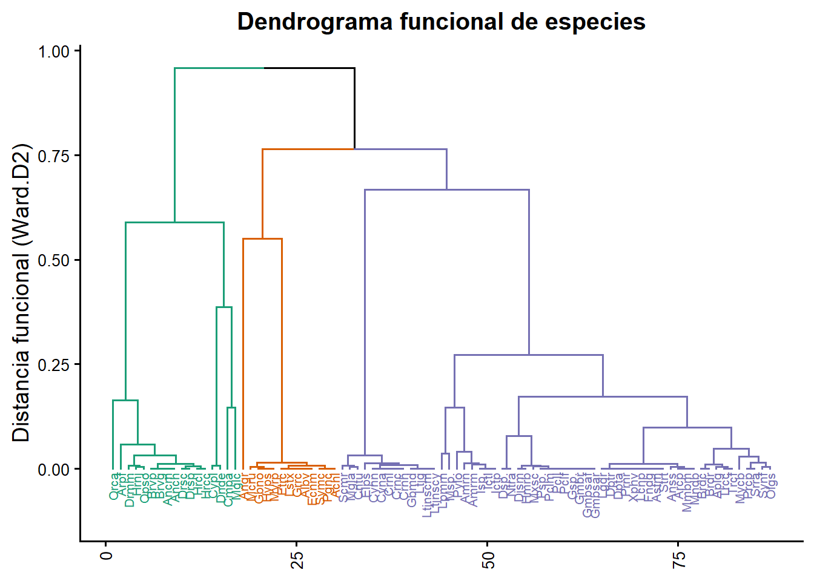
La clasificación en tres grupos permite distinguir tres núcleos funcionales principales dentro de los ensamblajes. El primer grupo reúne especies con rasgos morfológicos y tróficos que indican adaptaciones bentónicas o demersales; el segundo agrupa especies de hábitos generalistas o intermedios, con una combinación diversa de tamaños y estrategias tróficas; y el tercero reúne especies con rasgos especializados, posiblemente asociadas a estrategias pelágicas o piscívoras. Esta partición simplificada facilita la interpretación ecológica del ensamblaje, evidenciando un gradiente funcional que va desde especies adaptadas a fondos estructurados hasta aquellas con mayor movilidad o amplitud trófica. Por tanto, la estructura con tres grupos no solo reduce la complejidad visual del dendrograma, sino que también resalta los ejes funcionales dominantes que sustentan la organización ecológica de la comunidad.
La Figura 2 corresponde a un análisis de k-medias (o k-means) como alternativa no jerárquica al agrupamiento tradicional por dendrogramas. En lugar de construir una estructura arborescente, este método define directamente el número de grupos (k) y optimiza su conformación en función de la distancia entre las especies en el espacio funcional, buscando minimizar la variabilidad dentro de los grupos y maximizarla entre ellos. Esta técnica resulta especialmente útil cuando se trabaja con un número elevado de especies, pues evita el exceso de ramificaciones y el solapamiento visual característico de los dendrogramas jerárquicos. Además, al proyectarse sobre los dos primeros ejes del análisis de coordenadas principales (PCoA), ofrece una representación más intuitiva y compacta de la estructura funcional, facilitando la comparación entre grupos ecológicos y su posible relación con gradientes ambientales o espaciales.
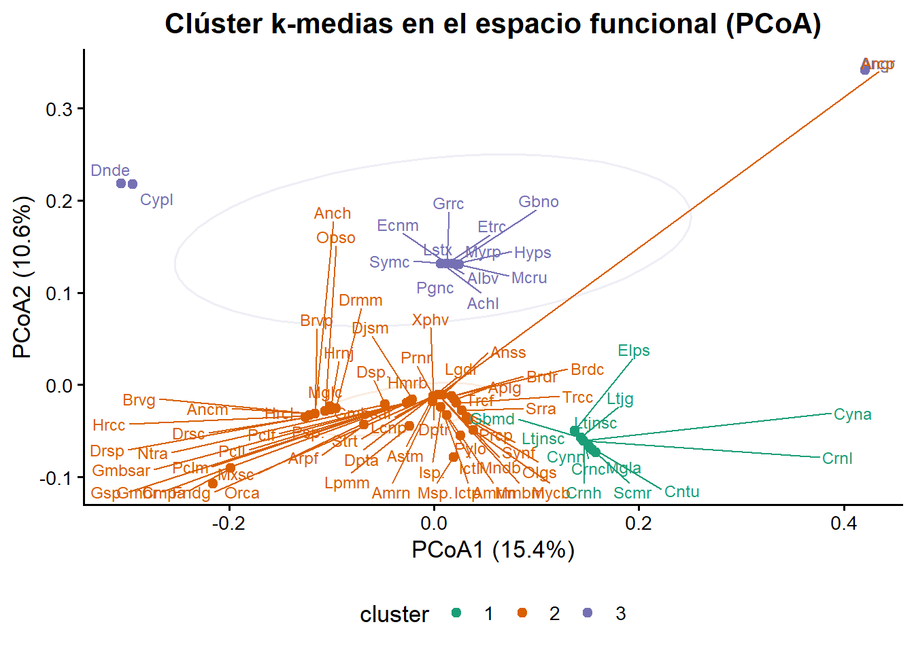
Esta Figura 2 muestra la distribución de las especies en el espacio funcional, donde los tres grupos definidos por k-medias reflejan conjuntos de especies con rasgos similares. Cada clúster agrupa peces que comparten estrategias morfológicas y tróficas, lo que sugiere la existencia de gremios funcionales diferenciados dentro del ensamblaje. Se observa que las especies del clúster 1 (verde) ocupan un sector más acotado del espacio, posiblemente asociado a rasgos de tamaño corporal intermedio y hábitos bentónicos; el clúster 2 (naranja) presenta mayor dispersión, integrando especies con amplitud trófica o morfologías más variables; mientras que el clúster 3 (violeta) agrupa un conjunto pequeño y bien delimitado de especies con rasgos especializados. Este patrón indica que la comunidad no está funcionalmente homogénea, sino estructurada en subgrupos que podrían corresponder a distintos tipos de hábitats o estrategias adaptativas, un punto que puede explorarse posteriormente al compararlos con las zonas de muestreo.
El dendrograma jerárquico y el clúster k-medias representan dos formas complementarias de explorar la organización funcional de las especies. El dendrograma jerárquico, construido con el método de Ward.D2, agrupa las especies en función de su similitud en los rasgos funcionales, permitiendo visualizar las jerarquías y distancias entre ellas. Este análisis es especialmente útil para identificar la estructura general del ensamblaje y decidir un número adecuado de grupos funcionales. En este caso, el corte en tres grupos principales reflejó un balance adecuado entre detalle y generalización ecológica.
Por su parte, el análisis k-medias utiliza el mismo espacio funcional generado a partir de las distancias de rasgos, pero aplica un enfoque no jerárquico, que optimiza la asignación de las especies en un número fijo de grupos (k = 3) buscando maximizar la homogeneidad interna y la separación entre grupos. A diferencia del dendrograma, que muestra relaciones sucesivas de fusión, el k-medias ofrece una representación espacial más intuitiva, facilitando la interpretación de los gradientes funcionales y la visualización de los solapamientos entre gremios.
3) Clasificación de sitios por su diversidad funcional
Los mapas que se muestran a continuación (Figura 3), representan la distribución espacial de distintos índices de diversidad funcional calculados con la función dbFD() del paquete FD. Cada círculo corresponde a una localidad o sitio de muestreo, y su tamaño es proporcional al valor del índice funcional mostrado en cada panel. Las figuras permiten visualizar de manera comparativa cómo varía la riqueza funcional (FRic), la equidad funcional (FEve), la divergencia (FDiv), la dispersión (FDis), la entropía cuadrática de Rao (RaoQ) y la riqueza de grupos funcionales (FGR) a lo largo del gradiente espacial definido por las coordenadas geográficas. En conjunto, este enfoque integra la información de los rasgos de las especies con su distribución espacial, facilitando la interpretación ecológica de los procesos que estructuran los ensamblajes.

Los patrones observados en las Figura 3, indican una notable heterogeneidad funcional entre los sitios. La riqueza funcional (FRic) muestra valores altos en zonas puntuales, lo que sugiere que algunos sitios albergan especies con una amplia gama de rasgos ecológicos, posiblemente asociados a hábitats más diversos o menos perturbados. En contraste, la equidad (FEve) y la divergencia funcional (FDiv) exhiben valores elevados en áreas intermedias del gradiente, donde las especies parecen distribuirse de forma más equilibrada en el espacio de rasgos, evitando la dominancia de un solo tipo funcional.
La dispersión funcional (FDis) y la entropía de Rao (RaoQ) presentan patrones similares, reflejando la amplitud del espacio funcional ocupado por los ensamblajes y la contribución desigual de las especies a ese espacio. Finalmente, la riqueza de grupos funcionales (FGR) se concentra en menos localidades, lo cual sugiere que la redundancia ecológica podría ser baja: pocas especies comparten funciones similares.
En conjunto, estas figuras revelan que la estructura funcional del ensamblaje no es homogénea, sino que varía espacialmente, lo que probablemente refleja diferencias ambientales o de disponibilidad de recursos entre los sitios muestreados.
4) Relación entre la diversidad alfa taxonómica y funcional
Siguiendo con el enfoque conceptual y matemático propuesto por Villéger et al. (2008), a continuación se calcula un conjunto de índices de diversidad alfa a partir de la matriz de abundancia de peces (biol1), integrando medidas tradicionales (taxonómicas) con las de rasgos tróficos o funcionales.
En primer lugar, se estiman índices clásicos de diversidad: la riqueza de especies (N₀), la diversidad de Shannon (N₁) y de Simpson (N₂), así como sus respectivas medidas de equidad (E₁₀, E₂₀ y J de Pielou). Estas métricas permiten cuantificar el número de especies, la dominancia y la uniformidad en la abundancia de los ensamblajes.
Posteriormente, se incorporan los índices funcionales calculados previamente con la función dbFD(): FRic (riqueza funcional), FEve (equidad funcional), FDiv (divergencia funcional), FDis (dispersión funcional), RaoQ (entropía cuadrática de Rao) y FGR (riqueza de grupos funcionales). La integración de todos estos valores en un solo marco de datos (div) permite comparar simultáneamente la diversidad de especies y la diversidad funcional, evidenciando cómo las diferencias en composición y abundancia se traducen en cambios en la estructura funcional de los ensamblajes.
El resumen de la Tabla 6 que se muestra, indica que los sitios difieren tanto en su diversidad taxonómica como funcional. Por ejemplo, el sitio 13M (sitio de montaña) presenta la mayor riqueza de especies (N₀ = 9) y los valores más altos de diversidad de Shannon (H = 1.70) y riqueza funcional (FRic = 0.08), lo que sugiere la coexistencia de especies con rasgos variados y potencialmente complementarios. En contraste, el sitio 12M (sitio de montaña) exhibe una menor riqueza (N₀ = 4), pero una equidad funcional (FEve = 0.78) cercana a 1, indicando una distribución más uniforme de los rasgos funcionales entre las especies presentes. La divergencia funcional (FDiv) y la dispersión funcional (FDis) reflejan una separación moderada en el espacio de rasgos, mientras que la entropía de Rao (RaoQ) muestra una tendencia similar a FDis, representando la variabilidad funcional ponderada por abundancia. Finalmente, la riqueza de grupos funcionales (FGR = 1) en todos los sitios evidencia que, aunque existen diferencias en diversidad y composición, las especies tienden a concentrarse en un mismo tipo funcional dominante.
En conjunto, estos resultados sugieren que los ensamblajes varían más por la abundancia relativa de las especies que por la aparición de nuevos tipos funcionales, lo que podría reflejar condiciones ambientales similares o una redundancia funcional alta en el sistema.
| Sitios | N0 | H | Hb2 | N1 | N1b2 | N2 | E10 | E20 | J | FRic | FEve | FDiv | FDis | RaoQ |
|---|---|---|---|---|---|---|---|---|---|---|---|---|---|---|
| 11M | 6 | 1.48 | 2.14 | 4.41 | 4.41 | 3.64 | 0.73 | 0.61 | 0.83 | 0.05 | 0.62 | 0.48 | 1.65 | 3.65 |
| 12M | 4 | 1.04 | 1.50 | 2.83 | 2.83 | 2.48 | 0.71 | 0.62 | 0.75 | 0.02 | 0.78 | 0.98 | 1.19 | 1.49 |
| 13M | 9 | 1.70 | 2.45 | 5.47 | 5.47 | 4.27 | 0.61 | 0.47 | 0.77 | 0.08 | 0.50 | 0.80 | 1.64 | 3.63 |
| 14M | 6 | 1.22 | 1.77 | 3.40 | 3.40 | 2.72 | 0.57 | 0.45 | 0.68 | 0.05 | 0.52 | 0.83 | 1.13 | 3.11 |
B. Diversidad beta- taxonómica, funcional y filogenética- enfoque de entropía cuadrática de Rao
Como ya se exploró en la sesión anterior, según Whittaker (1960), el concepto de diversidad beta se refiere a la variación en la composición de especies entre ensamblajes. Esta descomposición aditiva propuesta por De Bello et al. (2010) es considerada un análisis de diversidad beta porque su propósito central es separar la diversidad total de una región (γ) en la contribución interna de cada ensamblaje (α) y en el componente restante que surge por diferencias entre ensamblajes (β).
A continuación de propone un marco lógico, de como este nivel ecológico puede abordarse desde distintas facetas de la biodiversidad: taxonómica (basada en especies), funcional (basada en rasgos) y filogenética (basada en relaciones evolutivas). De Bello et al. (2010) propusieron un marco unificado para cuantificar estas tres dimensiones utilizando la entropía cuadrática de Rao (Q), un índice que integra la disimilitud entre pares de especies ponderada por sus abundancias relativas. En términos generales, el índice se expresa como:
\(Q={\sum}_{i=1}^q{\sum}_{j=1}^q{d}_{ij}{p}_{ic}{p}_{jc}\)
donde \(d_{ij}\) representa la diferencia o distancia funcional, filogenética o taxonómica entre las especies \(i\) y \(j\), mientras que \(p_{ic}\) y \(p_{jc}\) son las abundancias relativas de cada especie en la comunidad \(C\). Este enfoque permite extender la idea de diversidad más allá del simple conteo de especies, incorporando información sobre cuán distintas son las especies entre sí en términos funcionales o evolutivos.
Cuando \(d_{ij}\) se fija en 1 para especies distintas y 0 para idénticas, Q se reduce a la diversidad de Simpson inversa (N₂), es decir, una medida puramente taxonómica. Si las distancias \(d_{ij}\) provienen de un árbol filogenético, el índice Q representa la diversidad filogenética, mientras que si derivan de una matriz de rasgos funcionales, representa la diversidad funcional. En ambos casos, el valor de Q captura cuánta diferencia funcional o evolutiva existe dentro de una comunidad y permite comparar la estructura de ensamblajes desde una perspectiva integradora.
El rango de variación de \(d_{ij}\) (0 a 1) también permite evaluar la redundancia funcional o filogenética, comparando el valor de Q con su máximo teórico (cuando todas las especies son completamente diferentes). Esta comparación indica si una comunidad está dominada por especies funcionalmente semejantes o si, por el contrario, las especies ocupan nichos muy diferenciados.
A nivel espacial, la diversidad total puede descomponerse en sus componentes alfa (interna) y beta (entre ensamblajes). La propuesta de De Bello et al. (2010) permite realizar esta partición de manera no sesgada mediante la aplicación de equivalentes numéricos, según el enfoque de Jost (2007). De este modo, la diversidad beta se interpreta como la parte de la diversidad total que surge de la sustitución de especies y de sus diferencias funcionales o filogenéticas a lo largo del gradiente espacial o ambiental.
Durante el proceso para el cálculo de esta diversidad, es común que algunas especies no puedan ser localizadas (por ejemplo, aquellas registradas como sp. o spp.). Estas deben eliminarse de las matrices de rasgos y abundancia para asegurar la consistencia de las dimensiones del análisis. A partir de las especies restantes, se construyen las matrices depuradas biol2 (abundancias) y tra2 (rasgos), que servirán para los cálculos de diversidad beta en sus distintas facetas.
Este enfoque permite, finalmente, evaluar simultáneamente la variación taxonómica, funcional y filogenética entre sitios, aportando una visión más completa de los procesos ecológicos que estructuran los ensamblajes, como el recambio de especies, la redundancia funcional o la conservación filogenética de los rasgos. Hay 6 especies no encontradas, a continuación se excluyen de biol1, para poder realizar el siguiente paso:
Esta propuesta de De Bello et al. (2010) modificada de Rao (1982), se conoce como la partición aditiva de la diversidad, de forma integrada estas tres dimensiones de la diversidad —taxonómica, filogenética y funcional. Primero se construye una matriz de disimilitud funcional a partir de los rasgos morfológicos y tróficos de las especies mediante el índice de Gower (gowdis()), apropiado cuando se combinan variables cuantitativas y binarias. Adicionalmente, esta partición aditiva permite descomponer a la diversidad total en sus componentes alfa, beta y gamma, utilizando la entropía cuadrática de Rao y sus equivalentes numéricos. En esta sección se muestran los pasos necesarios para preparar las matrices de abundancia, distancia filogenética y distancia funcional, y luego ejecutar la partición aditiva de las tres facetas de la biodiversidad.
1) Construcción de la matriz de abundancia (biol2)
La Tabla 7 muestra los valores de abundancia y creando una matriz con, filas = sitios y columnas = especies abreviadas. Todos los valores son convertidos a numéricos, sin datos faltantes.
| Hyps | Elps | Mgla | Albv | Angr | Myrp | Ancm | Anch | Brvg | Brvp | Drsc | Drsp | Hrnj | Opso | Cmpa | Cypl | Dnde | Dsp. | Ntra | Mxsc | Astm | Arpf | Amrm | Amrn | Ictl | Ictp | Isp. | Pylo | Synf | Prcp | Djsm | Mglc | Mmbm | Mndb | Hmrb | Strt | Fndg | Lcnp | Gmbsaf | Gmbsar | Gmbr | Gsp. | Pclf | Pcll | Pclm | Psp. | Xphv | Prnr | Cntu | Mycb | Srra | Lpmm | Msp. | Crnc | Crnh | Crnl | Olgs | Trcc | Trcf | Ltjnscm | Ltjnscy | Ltjg | Dpta | Dptr | Ecnm | Grrc | Anss | Arcp | Lgdr | Aplg | Brdc | Brdr | Cyna | Cynn | Lstx | Mcru | Pgnc | Hrcl | Hrcc | Orca | Drmm | Gbmd | Gbno | Scmr | Etrc | Achl | Symc |
|---|---|---|---|---|---|---|---|---|---|---|---|---|---|---|---|---|---|---|---|---|---|---|---|---|---|---|---|---|---|---|---|---|---|---|---|---|---|---|---|---|---|---|---|---|---|---|---|---|---|---|---|---|---|---|---|---|---|---|---|---|---|---|---|---|---|---|---|---|---|---|---|---|---|---|---|---|---|---|---|---|---|---|---|---|---|---|
| 0 | 0 | 0 | 0 | 0 | 0 | 0 | 0 | 0 | 0 | 0 | 0 | 0 | 0 | 0 | 0 | 0 | 0 | 79 | 4 | 27 | 0 | 0 | 0 | 0 | 0 | 0 | 0 | 0 | 0 | 0 | 0 | 0 | 0 | 0 | 0 | 0 | 0 | 0 | 0 | 0 | 0 | 0 | 0 | 32 | 0 | 0 | 0 | 0 | 0 | 0 | 0 | 9 | 0 | 0 | 0 | 0 | 0 | 0 | 0 | 0 | 0 | 0 | 0 | 0 | 0 | 0 | 0 | 0 | 0 | 0 | 0 | 0 | 0 | 0 | 0 | 0 | 0 | 30 | 0 | 0 | 0 | 0 | 0 | 0 | 0 | 0 |
| 0 | 0 | 0 | 0 | 0 | 0 | 0 | 0 | 0 | 0 | 0 | 0 | 0 | 0 | 0 | 0 | 0 | 0 | 38 | 31 | 6 | 0 | 0 | 0 | 0 | 0 | 3 | 0 | 0 | 0 | 0 | 0 | 0 | 0 | 0 | 0 | 0 | 0 | 0 | 0 | 0 | 0 | 0 | 0 | 0 | 0 | 0 | 0 | 0 | 0 | 0 | 0 | 0 | 0 | 0 | 0 | 0 | 0 | 0 | 0 | 0 | 0 | 0 | 0 | 0 | 0 | 0 | 0 | 0 | 0 | 0 | 0 | 0 | 0 | 0 | 0 | 0 | 0 | 0 | 0 | 0 | 0 | 0 | 0 | 0 | 0 | 0 |
| 0 | 0 | 0 | 0 | 0 | 0 | 0 | 0 | 0 | 0 | 0 | 0 | 0 | 0 | 0 | 0 | 0 | 0 | 15 | 5 | 6 | 0 | 0 | 0 | 0 | 2 | 0 | 0 | 0 | 0 | 0 | 0 | 0 | 0 | 0 | 0 | 0 | 0 | 0 | 0 | 0 | 0 | 2 | 0 | 32 | 0 | 0 | 0 | 0 | 0 | 0 | 3 | 1 | 0 | 0 | 0 | 0 | 0 | 0 | 0 | 0 | 0 | 0 | 0 | 0 | 0 | 0 | 0 | 0 | 0 | 0 | 0 | 0 | 0 | 0 | 0 | 0 | 0 | 22 | 0 | 0 | 0 | 0 | 0 | 0 | 0 | 0 |
| 0 | 0 | 0 | 0 | 0 | 0 | 0 | 0 | 0 | 0 | 0 | 0 | 0 | 0 | 0 | 0 | 0 | 0 | 3 | 0 | 71 | 0 | 0 | 0 | 0 | 0 | 0 | 0 | 0 | 0 | 0 | 0 | 0 | 0 | 0 | 0 | 0 | 0 | 0 | 0 | 0 | 0 | 6 | 0 | 106 | 0 | 0 | 0 | 0 | 0 | 0 | 0 | 14 | 0 | 0 | 0 | 0 | 0 | 0 | 0 | 0 | 0 | 0 | 0 | 0 | 0 | 0 | 0 | 0 | 0 | 0 | 0 | 0 | 0 | 0 | 0 | 0 | 0 | 13 | 0 | 0 | 0 | 0 | 0 | 0 | 0 | 0 |
2) Preparación de la matriz de rasgos (rasgos2)
La Tabla 8 contiene la abreviatura de cada especie y varias características funcionales. En este paso se usa la abreviatura como nombre de fila y se seleccionan las columnas de rasgos.
| Guild | TrophicLevel | BodyLength | BodyLengthMax | ShapeFactor | omnivory | detritivory | herbivory | invertivory | piscivory | |
|---|---|---|---|---|---|---|---|---|---|---|
| Hyps | invertívoro bentónico | 3.3 | 227.45 | 431.76 | 5.73 | 0 | 0 | 0 | 1 | 0 |
| Elps | piscívoro | 3.8 | 227.45 | 431.76 | 5.73 | 0 | 0 | 0 | 0 | 1 |
| Mgla | piscívoro | 4.4 | 227.45 | 431.76 | 5.73 | 0 | 0 | 0 | 0 | 1 |
| Albv | invertívoro | 3.2 | 227.45 | 431.76 | 5.73 | 0 | 0 | 0 | 1 | 0 |
3) Identificación de especies problemáticas mediante NCBI
Los nombres científicos completos (LatinName) se consultan en una base taxonómica (NCBI o GBIF). Las especies que no aparecen —por errores en el nombre o por términos como sp., spp.— deben excluirse para evitar desalineaciones entre abundancias, rasgos y filogenia.
Código
# Este bloque consulta la clasificación taxonómica en NCBI
# para cada especie del archivo de rasgos, identifica cuáles
# no fueron encontradas en la base de datos y genera sus
# abreviaturas para poder excluirlas más adelante.
library(taxize)
# Vector de nombres científicos completos
splist <- as.character(rasgos_raw$LatinName)
# Función para silenciar mensajes y advertencias
quiet <- function(x) {
suppressWarnings(suppressMessages(x))
}
# Consultar jerarquía taxonómica en NCBI sin imprimir nada al renderiar el HTML
spcla <- quiet(classification(splist, db = "ncbi"))
# Identificar especies no encontradas
no_encontradas <- names(spcla)[
vapply(
spcla,
function(x) is.null(x) || all(is.na(x)),
logical(1)
)
]A continuación se muestran las especies no identificadas por la base “NCBI”.
Dionda sp. Notropis aguirrepequenoi Ictalurus sp.
"Dsp." "Ntra" "Isp."
Gambusia sp. Micropterus spp.
"Gsp." "Msp." 4) Base de rasgos con la exclusión de las especies no encontradas
Para evitar inconsistencias, las especies identificadas como problemáticas se eliminan de la matriz de abundancias (biol2) y de la matriz de rasgos (rasgos2) (Tabla 9).
| Guild | TrophicLevel | BodyLength | BodyLengthMax | ShapeFactor | omnivory | detritivory | herbivory | invertivory | piscivory | |
|---|---|---|---|---|---|---|---|---|---|---|
| Hyps | invertívoro bentónico | 3.3 | 227.45 | 431.76 | 5.73 | 0 | 0 | 0 | 1 | 0 |
| Elps | piscívoro | 3.8 | 227.45 | 431.76 | 5.73 | 0 | 0 | 0 | 0 | 1 |
| Mgla | piscívoro | 4.4 | 227.45 | 431.76 | 5.73 | 0 | 0 | 0 | 0 | 1 |
| Albv | invertívoro | 3.2 | 227.45 | 431.76 | 5.73 | 0 | 0 | 0 | 1 | 0 |
5) Matriz de distancia filogenética (phylo.d)
A partir de la clasificación taxonómica se genera un árbol filogenético simplificado Tabla 10. Luego se obtiene la matriz de distancia cofenética (distancias entre especies), que se escala y renombra con las abreviaturas finales.
| Hyps | Elps | Mgla | Albv | Angr | Myrp | Ancm | Anch | Brvg | Brvp | Drsc | Drsp | Hrnj | Opso | Cmpa | Cypl | Dnde | Mxsc | Astm | Arpf | Amrm | Amrn | Ictl | Ictp | Pylo | Synf | Prcp | Djsm | Mglc | Mmbm | Mndb | Hmrb | Strt | Fndg | Lcnp | Gmbsaf | Gmbsar | Gmbr | Pclf | Pcll | Pclm | Psp. | Xphv | Prnr | Cntu | Mycb | Srra | Lpmm | Crnc | Crnh | Crnl | Olgs | Trcc | Trcf | Ltjnscm | Ltjnscy | Ltjg | Dpta | Dptr | Ecnm | Grrc | Anss | Arcp | Lgdr | Aplg | Brdc | Brdr | Cyna | Cynn | Lstx | Mcru | Pgnc | Hrcl | Hrcc | Orca | Drmm | Gbmd | Gbno | Scmr | Etrc | Achl | Symc | |
|---|---|---|---|---|---|---|---|---|---|---|---|---|---|---|---|---|---|---|---|---|---|---|---|---|---|---|---|---|---|---|---|---|---|---|---|---|---|---|---|---|---|---|---|---|---|---|---|---|---|---|---|---|---|---|---|---|---|---|---|---|---|---|---|---|---|---|---|---|---|---|---|---|---|---|---|---|---|---|---|---|---|---|
| Hyps | 0 | 1.00 | 1.00 | 1.00 | 1.00 | 1.00 | 1.00 | 1.00 | 1.00 | 1.00 | 1.00 | 1.00 | 1.00 | 1.00 | 1.00 | 1.00 | 1.00 | 1.00 | 1.00 | 1.00 | 1.00 | 1.00 | 1.00 | 1.00 | 1.00 | 1.00 | 1.00 | 1.00 | 1.00 | 1.00 | 1.00 | 1.00 | 1.00 | 1.00 | 1.00 | 1.00 | 1.00 | 1.00 | 1.00 | 1.00 | 1.00 | 1.00 | 1.00 | 1.00 | 1.00 | 1.00 | 1.00 | 1.00 | 1.00 | 1.00 | 1.00 | 1.00 | 1.00 | 1.00 | 1.00 | 1.00 | 1.00 | 1.00 | 1.00 | 1.00 | 1.00 | 1.00 | 1.00 | 1.00 | 1.00 | 1.00 | 1.00 | 1.00 | 1.00 | 1.00 | 1.00 | 1.00 | 1.00 | 1.00 | 1.00 | 1.00 | 1.00 | 1.00 | 1.00 | 1.00 | 1.00 | 1.00 |
| Elps | 1 | 0.00 | 0.27 | 0.32 | 0.32 | 0.32 | 0.87 | 0.87 | 0.87 | 0.87 | 0.87 | 0.87 | 0.87 | 0.87 | 0.87 | 0.87 | 0.87 | 0.87 | 0.87 | 0.87 | 0.87 | 0.87 | 0.87 | 0.87 | 0.87 | 0.87 | 0.87 | 0.87 | 0.87 | 0.87 | 0.87 | 0.87 | 0.87 | 0.87 | 0.87 | 0.87 | 0.87 | 0.87 | 0.87 | 0.87 | 0.87 | 0.87 | 0.87 | 0.87 | 0.87 | 0.87 | 0.87 | 0.87 | 0.87 | 0.87 | 0.87 | 0.87 | 0.87 | 0.87 | 0.87 | 0.87 | 0.87 | 0.87 | 0.87 | 0.87 | 0.87 | 0.87 | 0.87 | 0.87 | 0.87 | 0.87 | 0.87 | 0.87 | 0.87 | 0.87 | 0.87 | 0.87 | 0.87 | 0.87 | 0.87 | 0.87 | 0.87 | 0.87 | 0.87 | 0.87 | 0.87 | 0.87 |
| Mgla | 1 | 0.27 | 0.00 | 0.32 | 0.32 | 0.32 | 0.87 | 0.87 | 0.87 | 0.87 | 0.87 | 0.87 | 0.87 | 0.87 | 0.87 | 0.87 | 0.87 | 0.87 | 0.87 | 0.87 | 0.87 | 0.87 | 0.87 | 0.87 | 0.87 | 0.87 | 0.87 | 0.87 | 0.87 | 0.87 | 0.87 | 0.87 | 0.87 | 0.87 | 0.87 | 0.87 | 0.87 | 0.87 | 0.87 | 0.87 | 0.87 | 0.87 | 0.87 | 0.87 | 0.87 | 0.87 | 0.87 | 0.87 | 0.87 | 0.87 | 0.87 | 0.87 | 0.87 | 0.87 | 0.87 | 0.87 | 0.87 | 0.87 | 0.87 | 0.87 | 0.87 | 0.87 | 0.87 | 0.87 | 0.87 | 0.87 | 0.87 | 0.87 | 0.87 | 0.87 | 0.87 | 0.87 | 0.87 | 0.87 | 0.87 | 0.87 | 0.87 | 0.87 | 0.87 | 0.87 | 0.87 | 0.87 |
| Albv | 1 | 0.32 | 0.32 | 0.00 | 0.32 | 0.32 | 0.87 | 0.87 | 0.87 | 0.87 | 0.87 | 0.87 | 0.87 | 0.87 | 0.87 | 0.87 | 0.87 | 0.87 | 0.87 | 0.87 | 0.87 | 0.87 | 0.87 | 0.87 | 0.87 | 0.87 | 0.87 | 0.87 | 0.87 | 0.87 | 0.87 | 0.87 | 0.87 | 0.87 | 0.87 | 0.87 | 0.87 | 0.87 | 0.87 | 0.87 | 0.87 | 0.87 | 0.87 | 0.87 | 0.87 | 0.87 | 0.87 | 0.87 | 0.87 | 0.87 | 0.87 | 0.87 | 0.87 | 0.87 | 0.87 | 0.87 | 0.87 | 0.87 | 0.87 | 0.87 | 0.87 | 0.87 | 0.87 | 0.87 | 0.87 | 0.87 | 0.87 | 0.87 | 0.87 | 0.87 | 0.87 | 0.87 | 0.87 | 0.87 | 0.87 | 0.87 | 0.87 | 0.87 | 0.87 | 0.87 | 0.87 | 0.87 |
6) Matriz de distancia funcional de Gower (rasgos.d)
Esta matriz de distancia funcional se basa en diferencias en rasgos. Para combinarlos (continuos y binarios) se usa la distancia de Gower. Las dietas (omnivory, invertivory, etc.) se tratan como variables binarias asimétricas.
La agrupación jerárquica de Ward.D2, permite visualizar la similitud funcional entre especies. Con esta base, la función Rao() descompone la diversidad total en sus componentes alfa, beta y gamma, calculando los índices equivalentes para las tres facetas: TD (taxonómica), PD (filogenética) y FD (funcional).
7) Partición aditiva de la diversidad (TD, PD, FD)
Finalmente se utiliza la función Rao (De Bello et al. 2010) para estimar la diversidad taxonómica (TD), la diversidad filogenética (PD) y la diversidad funcional (FD). Cada una se descompone en sus dimensiones de diversidad alfa, beta y gamma.
La función Rao(), es tomada de Borcard et al. (2018) y permite estimar y descomponer la diversidad ecológica en sus tres principales dimensiones: taxonómica (TD), filogenética (PD) y funcional (FD) (Tabla 11). Basada en la entropía cuadrática de Rao (Rao, 1982), esta función cuantifica la diversidad considerando simultáneamente la abundancia de las especies y sus diferencias (ya sean en identidad, parentesco o rasgos ecológicos). Su estructura integra los algoritmos de Villeger y Mouillot (2008) para la descomposición de la varianza (diversidad alfa, beta y gamma) y de Pavoine (ade4) para el cálculo de distancias.
En la práctica, Rao() evalúa la diversidad promedio local (α), la diversidad total regional (γ) y la proporción de recambio o diferenciación entre ensamblajes (β), expresada tanto de forma aditiva (γ − α) como multiplicativa (γ / α). Al incorporar matrices de disimilitud funcional y filogenética, el índice amplía el enfoque clásico basado solo en especies, permitiendo analizar cómo los ensamblajes de peces se estructuran no solo por el número de especies, sino también por su parentesco evolutivo y sus estrategias ecológicas. A continuación se muestra un resumen tabular de la dimensión alfa (Tabla 11), pero esto mismo se puede tabular para las dimensiones gamma y beta. Tener en cuenta las recomendaciones para preparar los datos definidas al inicio de este tema.
| Sitio | alfaTD | alfaPD | alfaFD |
|---|---|---|---|
| 1 | 3.241 | 1.850 | 1.275 |
| 2 | 1.373 | 1.152 | 1.075 |
| 3 | 3.269 | 1.705 | 1.292 |
| 4 | 2.331 | 1.654 | 1.171 |
| 5 | 3.756 | 1.829 | 1.260 |
| 6 | 2.517 | 1.765 | 1.186 |
8) Tabulación y visualización de la diversidad con partición aditiva
Código
# Nombres de los componentes devueltos por la función Rao()
# names(biol1.rao)
# Diversidad de especies (índices de Simpson)
# names(biol1.rao$TD) # lista de componentes dentro de TD
# Diversidad alfa media de Simpson (diversidad promedio dentro de los ensamblajes)
biol1.rao$TD$Mean_Alpha
# Diversidad gamma de Simpson (diversidad total del conjunto de ensamblajes)
biol1.rao$TD$Gamma
# Diversidad beta aditiva (diferencia entre gamma y alfa)
biol1.rao$TD$Beta_add
# Comprobación alternativa de la partición aditiva
biol1.rao$TD$Gamma - biol1.rao$TD$Mean_Alpha
# Diversidad beta expresada como porcentaje de la diversidad gamma
biol1.rao$TD$Beta_prop
# Cálculo equivalente de la proporción beta/gamma
biol1.rao$TD$Beta_add / biol1.rao$TD$Gamma
# Diversidad beta multiplicativa (razón entre gamma y alfa)
biol1.rao$TD$Gamma / biol1.rao$TD$Mean_AlphaLos resultados presentados en la Tabla 12 muestran que la diversidad alfa taxonómica (αTD) tiene valores medios más altos que la filogenética (αPD) y la funcional (αFD), lo que indica que aunque los ensamblajes albergan un número razonable de especies, estas comparten proximidad evolutiva y rasgos similares. Por ejemplo, en los primeros sitios, αTD ≈ 3.2 contrasta con αFD ≈ 1.1, reflejando redundancia funcional: varias especies ocupan roles ecológicos parecidos. Este patrón sugiere que la pérdida de algunas especies no modificaría drásticamente las funciones ecosistémicas, pero sí podría afectar la diversidad taxonómica o la estructura filogenética. En conjunto, este análisis evidencia cómo las tres facetas de la diversidad proporcionan una visión complementaria del ensamblaje, enriqueciendo la interpretación ecológica más allá del simple conteo de especies.
Código
# Diversidad filogenética (índice de Rao)
# names(biol1.rao$PD) # lista de insumos para diversidad filogenética
# Diversidad alfa media de Rao (filogenética)
biol1.rao$PD$Mean_Alpha
# Diversidad gamma de Rao (filogenética)
biol1.rao$PD$Gamma
# Diversidad beta aditiva de Rao (filogenética)
biol1.rao$PD$Beta_add
# Verificación alternativa del cálculo aditivo (gamma – alfa)
biol1.rao$PD$Gamma - biol1.rao$PD$Mean_Alpha
# Diversidad beta filogenética expresada como porcentaje de la diversidad gamma
biol1.rao$PD$Beta_prop
# Cálculo equivalente de la proporción beta/gamma
biol1.rao$PD$Beta_add / biol1.rao$PD$Gamma
# Diversidad beta multiplicativa de Rao (filogenética)
biol1.rao$PD$Gamma / biol1.rao$PD$Mean_AlphaCódigo
# Diversidad funcional (índice de Rao)
# names(biol1.rao$FD) # lista de insumos para la diversidad funcional
# Diversidad alfa media de Rao (funcional)
biol1.rao$FD$Mean_Alpha
# Diversidad gamma de Rao (funcional)
biol1.rao$FD$Gamma
# Diversidad beta aditiva de Rao (funcional)
biol1.rao$FD$Beta_add
# Verificación alternativa del cálculo (gamma – alfa)
biol1.rao$FD$Gamma - biol1.rao$FD$Mean_Alpha
# Diversidad beta funcional expresada como porcentaje de la diversidad gamma
biol1.rao$FD$Beta_prop
# Cálculo equivalente de la proporción beta/gamma
biol1.rao$FD$Beta_add / biol1.rao$FD$Gamma
# Diversidad beta multiplicativa de Rao (funcional)
biol1.rao$FD$Gamma / biol1.rao$FD$Mean_Alpha
# Variación de las diversidades alfa (taxonómica, filogenética y funcional)
# a lo largo del gradiente espacial (p. ej. el río Doubs o sitios de muestreo).
# biol1.rao$TD$Alpha # diversidad alfa taxonómica
# biol1.rao$PD$Alpha # diversidad alfa filogenética
# biol1.rao$FD$Alpha # diversidad alfa funcional
# Incorporar los índices de diversidad basados en Rao al marco de datos “div”
div$alfaTD <- biol1.rao$TD$Alpha
div$alfaPD <- biol1.rao$PD$Alpha
div$alfaFD <- biol1.rao$FD$Alpha| Sitios | N0 | H | Hb2 | N1 | N1b2 | N2 | E10 | E20 | J | FRic | FEve | FDiv | FDis | RaoQ | alfaTD | alfaPD | alfaFD |
|---|---|---|---|---|---|---|---|---|---|---|---|---|---|---|---|---|---|
| 11M | 6 | 1.48 | 2.14 | 4.41 | 4.41 | 3.64 | 0.73 | 0.61 | 0.83 | 0.05 | 0.62 | 0.48 | 1.65 | 3.65 | 3.24 | 1.85 | 1.28 |
| 12M | 4 | 1.04 | 1.50 | 2.83 | 2.83 | 2.48 | 0.71 | 0.62 | 0.75 | 0.02 | 0.78 | 0.98 | 1.19 | 1.49 | 1.37 | 1.15 | 1.07 |
| 13M | 9 | 1.70 | 2.45 | 5.47 | 5.47 | 4.27 | 0.61 | 0.47 | 0.77 | 0.08 | 0.50 | 0.80 | 1.64 | 3.63 | 3.27 | 1.71 | 1.29 |
| 14M | 6 | 1.22 | 1.77 | 3.40 | 3.40 | 2.72 | 0.57 | 0.45 | 0.68 | 0.05 | 0.52 | 0.83 | 1.13 | 3.11 | 2.33 | 1.65 | 1.17 |
En la Figura 4 se muestra el mapa comparativo de las tres facetas de la diversidad alfa —taxonómica, filogenética y funcional— complementa los valores tabulados y permite visualizar su distribución espacial a lo largo del gradiente analizado. La diversidad taxonómica (arriba izquierda) muestra una mayor variación entre sitios, con algunos puntos que concentran un número relativamente alto de especies, reflejando diferencias locales en la riqueza específica. En contraste, la diversidad filogenética (arriba derecha) presenta una distribución más homogénea, lo que sugiere que, aunque cambie el número de especies entre sitios, muchas de ellas pertenecen a linajes cercanos o comparten historia evolutiva reciente. Finalmente, la diversidad funcional (abajo) evidencia un patrón intermedio: los sitios con mayor abundancia de especies no siempre presentan mayor diversidad de funciones, lo que indica la presencia de redundancia funcional. En conjunto, el gráfico revela que las tres dimensiones de la diversidad no varían de forma paralela, destacando la importancia de analizarlas simultáneamente para entender cómo la estructura de los ensamblajes de peces refleja tanto su historia evolutiva como la diversidad de estrategias ecológicas presentes. *También se puede graficar estas tres facetas para la diversidad gamma y la diversidad beta.

C. Diversidad taxonómica, funcional y filogenética con números efectivos q = 0, 1 y 2
La cuantificación contemporánea de la biodiversidad reconoce que los ensamblajes poseen múltiples dimensiones interrelacionadas: una taxonómica (TD), centrada en las especies y sus abundancias; una filogenética (PD), que incorpora la historia evolutiva de los linajes y una funcional (FD), basada en los rasgos ecológicos que determinan cómo las especies interactúan con su ambiente y entre sí. Históricamente, cada una de estas dimensiones se abordó mediante enfoques independientes que, aunque robustos, adolecían de una falta de comparabilidad y de control estadístico del esfuerzo de muestreo.
Enfoques vistos de estructura y partición de la diversidad
A. Villéger et al. (2008) desarrollaron un marco para evaluar la diversidad funcional alfa dentro de comunidades, basado en la geometría del espacio de rasgos. Este enfoque caracteriza la estructura interna del espacio funcional mediante índices como FRic (riqueza funcional), FEve (equidad funcional) y FDiv (divergencia funcional), que describen cómo las especies ocupan, equilibran o polarizan el espacio multidimensional definido por sus rasgos ecológicos.
B. De Bello et al. (2010) propusieron la partición aditiva de la diversidad taxonómica, funcional y filogenética, fundamentada en la entropía cuadrática de Rao (Q). Este método permite descomponer la diversidad total en sus componentes α (local), β (recambio) y γ (regional), incorporando matrices de abundancia y matrices de distancia funcional o filogenética. De este modo, se evalúa la contribución relativa de cada ensamblaje local a la diversidad regional total.
Ambos métodos representan avances sustanciales en la descripción de la estructura y la variación de la biodiversidad. Sin embargo, comparten una limitación crítica: dependen directamente del número de individuos muestreados, de las especies detectadas y de la completitud de los rasgos o del árbol filogenético, sin incluir un marco de estandarización estadística que permita comparar comunidades con distinto esfuerzo de muestreo o cobertura.
Para superar estas limitaciones, Chao et al. (2021) desarrollaron el marco iNEXT3D (interpolation and extrapolation for three dimensions of diversity), que unifica las tres dimensiones —TD, PD y FD— bajo una formulación común basada en los números de Hill y la estandarización por cobertura muestral. A diferencia de los enfoques previos, estos modelos: integran simultáneamente matrices de abundancia y matrices de distancia funcional o filogenética y ajustan las estimaciones de diversidad mediante rarefacción y extrapolación, de modo que la comparación entre comunidades se realiza bajo el mismo nivel de completitud muestral.
En este marco: TD representa el número efectivo de especies igualmente abundantes, PD expresa la longitud efectiva de ramas evolutivas igualmente divergentes y FD cuantifica el número efectivo de grupos funcionales igualmente distintos, a partir de la matriz de distancias funcionales derivada de rasgos estandarizados.
C.1 El enfoque de diversidad alfa (Chao el al. 2021), con el paquete iNEXT3D proporciona estimaciones coherentes entre dimensiones ecológicas que antes eran difíciles de comparar.
C.2 El enfoque de diversidad beta (Chao el al. 2023), con el paquete iNEXTbeta3D combina a la descomposición multiplicativa clásica de Whittaker (1960) con los números de Hill. En este modelo, β = γ / α, pero tanto la diversidad local (α) como la regional (γ) se ajustan al mismo nivel de cobertura, haciendo que la diversidad beta resultante sea independiente del tamaño de muestra o de la riqueza regional, y refleje únicamente la diferenciación composicional real entre comunidades.
En este sentido, mientras que Villéger et al. (2008) y De Bello et al. (2010) describen la estructura interna o la partición de la diversidad observada, Chao et al. (2021, 2023) proponen una tercera generación de métodos, que integra las dimensiones taxonómica, funcional y filogenética en un marco probabilístico y estadísticamente estandarizado, en el que la diversidad puede rarefactarse y extrapolarse de manera coherente y comparable entre sitios o periodos.
| Aspecto | (1) Villéger et al. (2008) | (2) De Bello et al. (2010) | (3) Chao et al. (2021, 2023) |
|---|---|---|---|
| Enfoque principal | Evalúa la diversidad funcional (FD) dentro de ensamblajes mediante índices geométricos basados en rasgos. | Descompone la diversidad total (TD, FD, PD) en componentes alfa, beta y gamma usando la entropía cuadrática de Rao (Q). | Integra TD, FD y PD bajo los números de Hill y la estandarización por cobertura, incorporando rarefacción y extrapolación. |
| Unidad de análisis | Matriz de rasgos funcionales (especies × rasgos). | Matrices de abundancia y de distancias funcionales o filogenéticas. | Matriz de abundancias junto con matrices de distancia funcional (derivadas de rasgos) o árboles filogenéticos. |
| Tipo de diversidad estimada | Diversidad funcional alfa (FRic, FEve, FDiv, FDis). | Diversidad alfa, beta y gamma (aditiva) para TD, FD y PD. | Diversidad alfa, beta y gamma (multiplicativa) estandarizada por cobertura muestral. |
| Dimensiones ecológicas abordadas | Funcional (FD). | Taxonómica (TD), funcional (FD) y filogenética (PD). | Taxonómica (TD), funcional (FD) y filogenética (PD). |
| Dependencia del esfuerzo de muestreo | Alta: los índices dependen del número de especies y del tamaño de muestra. | Moderada: la partición de Rao es sensible al esfuerzo y a la completitud de la muestra. | Baja: las estimaciones se estandarizan por cobertura muestral, permitiendo comparaciones entre muestreos desiguales. |
| Fundamento matemático | Geometría del espacio de rasgos (distancias y volúmenes). | Entropía cuadrática de Rao (varianza ponderada entre especies). | Números de Hill aplicados a abundancias, distancias funcionales y longitudes filogenéticas, bajo estandarización por cobertura. |
| Interpretación ecológica | Describe la ocupación y distribución de las especies en el espacio funcional. | Evalúa la contribución local y regional a la diversidad total. | Permite comparar la diversidad efectiva entre comunidades con distinto esfuerzo y completitud muestral. |
| Supuestos principales | Los rasgos están bien medidos y normalizados; la disimilitud refleja diferencias ecológicas reales. | Las matrices de distancia son válidas y comparables; los ensamblajes representan el conjunto regional. | Los árboles filogenéticos o matrices funcionales reflejan adecuadamente las relaciones entre especies; la cobertura refleja la completitud biológica. |
| Ventajas | Proporciona una descripción detallada de la estructura funcional interna. | Integra las tres dimensiones y permite descomponer la diversidad en sus componentes alfa, beta y gamma. | Permite comparaciones robustas y estandarizadas entre sitios, escalas o periodos; unifica TD, FD y PD bajo un mismo marco matemático. |
| Limitaciones | No corrige diferencias en esfuerzo de muestreo ni permite comparaciones entre muestras incompletas. | Sensible al número de especies detectadas y a la rareza. | Requiere matrices de distancia funcional o árboles filogenéticos; el cálculo es más intensivo y complejo. |
C.1 Diversidad alfa taxonómica (TD), filogenética (PD) y funcional (FD) con iNEXT.3D
El paquete iNEXT.3D (Interpolation and Extrapolation for Three Dimensions of Biodiversity; Chao et al., 2021) amplía el enfoque clásico de iNEXT (Hsieh et al., 2016) para incorporar tres dimensiones complementarias de la diversidad ecológica: la taxonómica (TD), la filogenética (PD) y la funcional (FD). Todas se cuantifican dentro de un marco unificado basado en los números de Hill y sus extensiones (números de Hill–Chao), lo que permite expresar la diversidad en unidades equivalentes de “especies efectivas”. Así, TD refleja el número efectivo de especies, PD el número efectivo de linajes (longitudes de rama), y FD el número efectivo de grupos funcionales o “especies funcionales”.
Este enfoque permite comparar directamente distintas facetas de la biodiversidad bajo una misma escala común, integrando estructura taxonómica, historia evolutiva y rasgos ecológicos. iNEXT.3D ofrece dos tipos de análisis complementarios:
No asintótico (interpolación y extrapolación), que estandariza la diversidad por tamaño de muestra o por cobertura muestral (completitud). Esto permite comparar ensamblajes que difieren en esfuerzo de muestreo bajo condiciones de equidad estadística, a través de curvas de rarefacción y extrapolación.
Asintótico, que estima la diversidad teórica a partir de los datos observados, y genera perfiles de diversidad (q-perfiles) para diferentes órdenes de sensibilidad (q = 0, 1, 2), así como perfiles temporales (PD) y de umbral funcional (FD).
En síntesis, iNEXT.3D permite evaluar y comparar la diversidad ecológica de manera integrada, estandarizada y visual, conciliando a las tres dimensiones de la diversidad en un mismo marco analítico.
C.1.1 Diversidad alfa taxonómica (TD)
Nota: Esta dimensión de la diversdiad se desarrolló en el capítulo de diversidad alfa con la propuesta de Chao et al. (2020) de diversidad en cuatro pasos, con el paquete iNEXT.4Steps. Aunque esta sección se enfoca en las dimensiones funcional y filogenética, se incluye a la taxonómica para dar mayor coherencia a la propuesta de Chao et al. (2021) con su pquete iNEXT.3D.
En este sentido, se procede a calcular la diversidad diversidad taxonómica (TD), con el paquete iNEXT.3D a partir de los datos de abundancia de especies. Esta dimensión representa la diversidad clásica basada en el número efectivo de especies, ajustada por la abundancia relativa y la completitud del muestreo, lo que permite comparar ensamblajes con diferentes tamaños o esfuerzos de muestreo mediante los procedimientos de rarefacción (interpolación) y extrapolación de los números de Hill.
De acuerdo con Chao et al. (2021), el primer componente del resultado ($TDInfo) resume la información básica de los datos, incluyendo el nombre del ensamblaje, el tamaño de muestra (n), la riqueza observada de especies (S.obs), la cobertura muestral estimada para el tamaño de referencia (SC(n)) y para una muestra extrapolada al doble del esfuerzo (SC(2n)), así como las frecuencias de abundancia de las cinco primeras clases (f1–f5), es decir, el número de especies que aparecen una, dos, tres, cuatro o cinco veces en el muestreo.
Este componente es equivalente al que se obtiene mediante la función DataInfo3D() al especificar diversity = 'TD' y datatype = "abundance". Por tanto, puede emplearse como una forma rápida de explorar la información de base antes de continuar con los cálculos de diversidad observada y asintótica, que se estiman con la función ObsAsy3D() presentada más adelante.
A continuación se muestra el procedimiento aplicado a la matriz de abundancia de peces, donde la función iNEXT3D() calcula los valores de diversidad taxonómica de orden q = 0, 1 y 2, correspondientes a la riqueza de especies, la diversidad de Shannon y la diversidad de Simpson, respectivamente. El argumento datatype = "abundance" indica que los datos corresponden a conteos de individuos y no a presencia/ausencia.
Las coberturas muestrales cercanas a 1.00 en los sitios M y P indican que el esfuerzo de muestreo fue suficiente para capturar prácticamente la totalidad de las especies presentes, mientras que el valor inferior en RM sugiere que aún podrían detectarse especies adicionales con un muestreo complementario.
Los valores de las frecuencias f1–f5 aportan información sobre la estructura de rareza de cada ensamblaje. Por ejemplo, el ensamblaje RM presenta un mayor número de especies con baja frecuencia (f1 y f2), lo que denota una comunidad con una alta proporción de especies raras, mientras que los ensamblajes M y P presentan composiciones más uniformes, con menor proporción de especies de ocurrencia única.
En conjunto, este primer componente proporciona una visión general del grado de completitud del muestreo y de la estructura de abundancias, estableciendo la base para las estimaciones posteriores de diversidad observada, asintótica y estandarizada mediante rarefacción y extrapolación.
| Especies | M | P | RM |
|---|---|---|---|
| Achl | 0 | 0 | 2 |
| Albv | 0 | 0 | 1 |
| Amrm | 1 | 0 | 0 |
| Amrn | 3 | 0 | 0 |
| Anch | 0 | 0 | 6 |
| Ancm | 0 | 0 | 17 |
| Assemblage | n | S.obs | SC(n) | SC(2n) | f1 | f2 | f3 | f4 | f5 |
|---|---|---|---|---|---|---|---|---|---|
| M | 13166 | 30 | 1.00 | 1.00 | 5 | 1 | 4 | 2 | 0 |
| P | 5151 | 30 | 1.00 | 1.00 | 4 | 1 | 0 | 0 | 1 |
| RM | 414 | 53 | 0.96 | 0.99 | 16 | 9 | 5 | 2 | 4 |
1) Estimadores estandarizados de diversidad taxonómica (TD)
El segundo bloque de resultados generados por la función iNEXT3D() se encuentra en el componente $TDiNextEst, el cual incluye los estimadores estandarizados de diversidad taxonómica calculados en función del tamaño de muestra (size-based) y de la cobertura de muestra (coverage-based) (Tabla 16).
Este componente resume los valores de diversidad obtenidos mediante procedimientos de rarefacción (interpolación) y extrapolación, permitiendo evaluar la diversidad esperada para distintos niveles de esfuerzo de muestreo. Por defecto, el paquete calcula las estimaciones en 40 puntos de muestreo (“knots”), que abarcan desde muestras muy pequeñas hasta extrapolaciones por encima del tamaño de referencia. Por ejemplo, la zona M (Montañas), los tamaños de muestra considerados van desde m = 1, 95, 189, …, 1699, 1794, 1795, 1899, …, 3588, ubicando el tamaño de referencia aproximadamente en el punto medio del rango evaluado (Tabla 16).
La estructura del componente $TDiNextEst se organiza en dos data frames: 1. $size_based, que muestra los estimadores estandarizados por tamaño de muestra y 2. $coverage_based, que presenta los estimadores estandarizados por cobertura de muestra (mostrados en la siguiente sección). En el caso de 1. $size_based, cada fila contiene la siguiente información:
Assemblage: nombre del ensamblaje o comunidad (M, P o RM).
Order.q: orden de diversidad (q = 0, 1 o 2), correspondiente a los números de Hill.
m: tamaño de muestra considerado.
Method: método de cálculo utilizado según la relación entre m y el tamaño de referencia (Rarefaction, Observed o Extrapolation).
qTD: valor estimado de la diversidad de orden q para el tamaño m.
qTD.LCL / qTD.UCL: límites inferior y superior del intervalo de confianza de la diversidad.
SC / SC.LCL / SC.UCL: estimaciones de la cobertura muestral y sus intervalos de confianza, que permiten graficar la curva de completitud muestral.
Cuando el argumento nboot se define con un valor mayor que cero, la función aplica un método bootstrap para calcular los intervalos de confianza de las estimaciones, aumentando la precisión de la inferencia estadística. Este enfoque de rarefacción y extrapolación permite comparar ensamblajes con diferente esfuerzo de muestreo bajo un marco estandarizado, eliminando el sesgo asociado al número de individuos observados y revelando diferencias reales en la diversidad efectiva de especies.
| Assemblage | Order.q | m | Method | qTD | qTD.LCL | qTD.UCL | SC | SC.LCL | SC.UCL |
|---|---|---|---|---|---|---|---|---|---|
| M | 0 | 1 | Rarefaction | 1.00 | 1.00 | 1.00 | 0.21 | 0.21 | 0.22 |
| M | 0 | 693 | Rarefaction | 17.18 | 16.64 | 17.72 | 1.00 | 0.99 | 1.00 |
| M | 0 | 1386 | Rarefaction | 19.51 | 18.68 | 20.34 | 1.00 | 1.00 | 1.00 |
| M | 0 | 2079 | Rarefaction | 21.09 | 20.03 | 22.16 | 1.00 | 1.00 | 1.00 |
| M | 0 | 2772 | Rarefaction | 22.35 | 21.09 | 23.61 | 1.00 | 1.00 | 1.00 |
| M | 0 | 3465 | Rarefaction | 23.40 | 21.96 | 24.84 | 1.00 | 1.00 | 1.00 |
2) Estimación estandarizada de la diversidad taxonómica
El tercer componente del objeto iNEXT3D() corresponde a $TDAsyEst, el cual presenta las estimaciones de diversidad observada y asintótica para cada ensamblaje y para los órdenes de diversidad q = 0, 1 y 2 (Tabla 17). Este componente sintetiza la información más relevante del análisis, al comparar los valores directamente observados en la muestra con las estimaciones asintóticas derivadas del modelo de completitud de Chao et al. (2021).
Las estimaciones asintóticas representan el valor esperado de la diversidad si el esfuerzo de muestreo fuera infinito o completamente exhaustivo, mientras que las observadas (TD_obs) reflejan la diversidad real detectada con el tamaño de muestra disponible.
El resultado incluye además el error estándar de remuestreo (s.e.) y los intervalos de confianza de la estimación (qTD.LCL, qTD.UCL), obtenidos mediante procedimientos bootstrap (Tabla 17).
| Assemblage | qTD | TD_obs | TD_asy | s.e. | qTD.LCL | qTD.UCL |
|---|---|---|---|---|---|---|
| M | Species richness | 30.00 | 42.50 | 14.54 | 14.00 | 71.00 |
| M | Shannon diversity | 6.53 | 6.54 | 0.06 | 6.41 | 6.67 |
| M | Simpson diversity | 4.72 | 4.72 | 0.04 | 4.64 | 4.79 |
| P | Species richness | 30.00 | 38.00 | 6.67 | 24.92 | 51.08 |
| P | Shannon diversity | 12.41 | 12.46 | 0.18 | 12.10 | 12.82 |
| P | Simpson diversity | 9.48 | 9.49 | 0.17 | 9.16 | 9.83 |
Figura 1. Diversidad taxonómica (TD) con datos de abundancia
Cuando se usa el argumento facet.var = "Assemblage", se genera una gráfica independiente para cada ensamblaje o sitio, y dentro de cada panel se muestran, con distintos colores, las curvas correspondientes a los diferentes órdenes de diversidad (q = 0, 1 y 2). En este caso, se representan las curvas de rarefacción y extrapolación basadas en el tamaño de muestra (type = 1), que relacionan el número de individuos muestreados con la diversidad esperada (Figura 5).
La figura muestra las curvas de rarefacción (líneas continuas) y extrapolación (líneas punteadas) para los tres órdenes de diversidad: q = 0 (naranja): representa la riqueza de especies, sin considerar abundancias. q = 1 (azul): corresponde a la diversidad de Shannon, que pondera las especies según su abundancia relativa. q = 2 (rosado): expresa la diversidad de Simpson, más sensible a las especies dominantes.
Para las tres zonas comparadas (M: montañas, P: laderas o planicies y RM: desembocadura), se observa que las curvas de riqueza (q = 0) crecen de manera más pronunciada, lo que indica una mayor proporción de especies raras que podrían detectarse con un esfuerzo de muestreo adicional. Por el contrario, las curvas de q = 1 y q = 2 tienden rápidamente a una asíntota, evidenciando que las especies más abundantes —que dominan el valor de estos índices— ya fueron registradas en el muestreo actual (Figura 5).
Las zonas sombreadas alrededor de las curvas representan los intervalos de confianza del 95%, obtenidos mediante remuestreo bootstrap, lo que permite visualizar la incertidumbre asociada a las estimaciones. En conjunto, las curvas sugieren que los ensamblajes M (Montaña) y P (Planicie) presentan un nivel de completitud de muestreo alto (SC ≈ 1), mientras que RM (Desembocadura) muestra una diversidad aún en aumento, con mayor probabilidad de detección de especies adicionales si se incrementara el esfuerzo de captura (Figura 5).
Este tipo de representación gráfica es especialmente útil para comparar la completitud del muestreo entre localidades y evaluar la eficiencia de los inventarios, permitiendo distinguir si las diferencias observadas en diversidad entre sitios reflejan patrones ecológicos reales o limitaciones metodológicas del muestreo.

En la Figura 6 (facetada por Order.q), cada panel muestra un orden de diversidad, y dentro de él se comparan los ensamblajes, destacando así sus diferencias en composición y dominancia. La reorganización por orden de diversidad (facet.var = “Order.q”) ofrece una lectura más ecológica del gradiente de dominancia entre ensamblajes:
En q = 0 (riqueza de especies), el ensamblaje RM muestra la mayor diversidad taxonómica, evidenciando una comunidad con alta cantidad de especies raras o poco abundantes. En q = 1 (índice de Shannon), las diferencias entre sitios se reducen, ya que las especies raras pierden peso y la diversidad refleja más el número de especies comunes. En q = 2 (índice de Simpson), las curvas se aplanan aún más y los valores convergen, indicando que los tres ensamblajes están dominados por unas pocas especies abundantes, y que la estructura de dominancia es similar entre ellos.

Figura 2. Estimación estandarizada de la diversidad taxonómica
El segundo tipo de gráfico generado por la función ggiNEXT3D() (type = 2) corresponde a las curvas de completitud muestral, o sample coverage curves (Figura 7). En este caso, el eje vertical muestra la cobertura muestral (SC), es decir, la proporción de la comunidad total que se estima ha sido detectada con el tamaño de muestra observado. El eje horizontal mantiene la escala del número de individuos, y los colores diferencian a las tres zonas comparadas (M, P y RM).
Estas curvas de completitud muestral permiten evaluar si el esfuerzo de muestreo fue suficiente para capturar la mayor parte de la diversidad presente en cada ensamblaje. En este ejemplo, las tres zonas —M, P y RM— muestran niveles de cobertura cercanos a uno, lo que indica que casi todas las especies detectables ya fueron registradas. Las líneas sólidas corresponden a la porción de rarefacción (estimaciones basadas en submuestras más pequeñas), mientras que las líneas punteadas representan la extrapolación (estimaciones proyectadas a un tamaño de muestra mayor) (Figura 7).
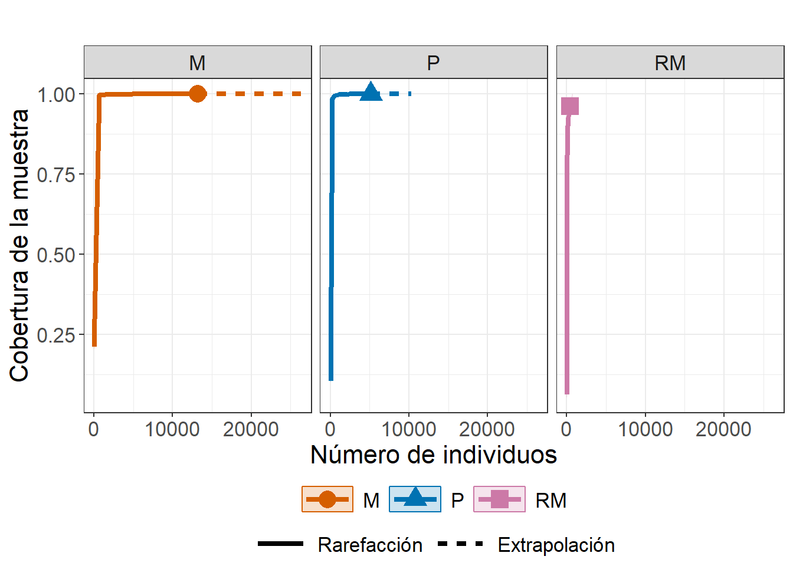
Figura 3. Estimación asintótica de la diversidad taxonómica
El tercer tipo de (Figura 8) que genera la función ggiNEXT3D() (type = 3) corresponde a las curvas de rarefacción y extrapolación basadas en la cobertura muestral, o coverage-based sampling curves.
A diferencia de las curvas basadas en el tamaño de muestra (sample-size-based), aquí el eje horizontal no representa el número de individuos, sino el grado de completitud de la muestra (SC), es decir, la fracción esperada de la comunidad que ha sido observada.
Estas curvas permiten comparar la diversidad efectiva de los ensamblajes bajo un mismo nivel de completitud muestral, eliminando las diferencias asociadas a distintos tamaños de muestra o esfuerzos de captura. En otras palabras, proporcionan un marco justo de comparación: todas los ensamblajes se estandarizan al mismo grado de representatividad del muestreo. En este caso, las tres zonas (M, P y RM) muestran una tendencia ascendente clara conforme aumenta la cobertura, con diferencias notables entre órdenes de diversidad (q = 0, 1 y 2) (Figura 8).
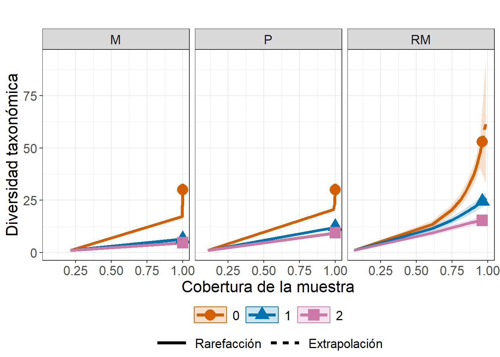
3) Diversidad taxonómica (TD) basada en perfiles de orden q
El análisis se realiza mediante la función ObsAsy3D(), que permite estimar la diversidad observada y asintótica para una gama continua de órdenes de diversidad (q) entre 0 y 2, lo que genera los llamados perfiles-q o curvas de Hill.
El argumento diversity = "TD" indica que se calculará la diversidad taxonómica, y datatype = "abundance" especifica que los datos corresponden a abundancias de individuos. La salida del comando ($qTD) incluye el nombre del ensamblaje, el orden de diversidad (Order.q), los valores observados y asintóticos de TD, el error estándar (s.e.) y los intervalos de confianza (qTD.LCL, qTD.UCL).
Estos perfiles muestran cómo la diversidad efectiva varía según el peso relativo que se asigne a las especies comunes o raras: q = 0 refleja la riqueza de especies (todas pesan igual), q = 1 corresponde a la diversidad de Shannon (pondera por abundancia proporcional), y q = 2 aproxima la diversidad de Simpson (resalta las especies dominantes).
De esta forma, los perfiles-q permiten visualizar de manera continua la estructura de dominancia y equidad en cada ensamblaje, constituyendo el punto de partida para comparar las tres dimensiones de la diversidad: taxonómica, filogenética y funcional (Tabla 18).
| Assemblage | Order.q | qTD | s.e. | qTD.LCL | qTD.UCL | Method |
|---|---|---|---|---|---|---|
| M | 0 | 42.50 | 10.97 | 20.99 | 64.00 | Asymptotic |
| M | 1 | 6.54 | 0.07 | 6.41 | 6.67 | Asymptotic |
| M | 2 | 4.72 | 0.04 | 4.63 | 4.80 | Asymptotic |
| P | 0 | 38.00 | 6.06 | 26.13 | 49.87 | Asymptotic |
| P | 1 | 12.46 | 0.17 | 12.13 | 12.78 | Asymptotic |
| P | 2 | 9.49 | 0.15 | 9.20 | 9.79 | Asymptotic |
Figura 4. Lectura del perfil-q (TD)
Las curvas de la Figura 9 muestran cómo cambia la diversidad efectiva desde q = 0 a 2. En q=0 (riqueza de especies), RM se ubica más alto que P y M, indicando más especies registradas; al aumentar q, todas las curvas descienden porque el índice pondera más la dominancia y menos a las raras. La pendiente resume equidad: curvas que caen rápido (p. ej., M) revelan fuerte dominancia; curvas que caen lento (p. ej., RM) indican repartos de abundancia más parejos.
Las líneas continuas son estimaciones asintóticas y las segmentadas las observadas; cuando ambas casi coinciden (P y M en q≥1), la cobertura es alta y la estimación es estable; si se separan (sobre todo cerca de q=0 en RM), hay más sensibilidad a especies raras y posible ganancia si se muestrea más.
Las bandas son los IC: anchas cerca de q=0 reflejan la incertidumbre propia de la riqueza; se estrechan hacia q=2 porque las especies comunes dominan el cómputo. En conjunto, el perfil-q permite comparar zonas en todo el gradiente “raras→comunes”: RM lidera en riqueza, P se aproxima en q=1 y q=2, y M queda por debajo por mayor dominancia.

C.1.2 Diversidad alfa filogenética (PD)
1) Construir la matriz de abundancias (Especies × Sitios)
Para los análisis de diversidad filogenética (PD) con iNEXT.3D, se utiliza la matriz de abundancias biol_PD, construida a partir de los datos crudos y depurada para garantizar su consistencia con el árbol filogenético (arbol_filo_alfa). En este proceso se excluyó la especie Notropis aguirrepequenoi, que no pudo ser verificada en la base taxonómica empleada durante la construcción del árbol; mantenerla habría generado desalineaciones entre el árbol y la matriz de abundancia. Tras esta depuración, biol_PD queda organizada en formato Especies × Sitios, con valores numéricos y sin filas o columnas vacías, lista para calcular PD junto al árbol arbol_filo_alfa suministrado.
El paso 2, correspondiente a la exclusión de especies, es opcional y depende de la coincidencia entre los nombres de la matriz de abundancia y los del árbol filogenético. Este paso se aplica únicamente cuando alguna especie no puede ser identificada en la base taxonómica o no aparece en el árbol. Si todas las especies están correctamente alineadas, puede omitirse sin afectar los resultados posteriores.
2) Armonizar nombres y alinear con el árbol (LatinName exacto)
A continuación se armonizan los nombres de las especies de biol_PD, para garantizar su alineación exacta con los del árbol filogenético (arbol_filo_alfa). Para ello, se usa la informacion de la hoja (tax1) que relaciona las abreviaturas utilizadas en la matriz de abundancia con los nombres científicos completos (columna LatinName). Esta correspondencia garantiza que cada fila de biol_PD coincida con una punta del árbol, evitando errores por diferencias tipográficas, abreviaciones o duplicados. Una vez realizada la verificación y la alineación, la matriz de abundancias y el árbol quedan sincronizados, permitiendo que los análisis de diversidad filogenética se ejecuten sin inconsistencias taxonómicas.
3) Calculo de la diversidad filogenética (PD)
Para estimar la diversidad filogenética (PD) con el paquete iNEXT.3D, es indispensable contar con un árbol filogenético que refleje las relaciones evolutivas entre las especies registradas en las comunidades analizadas. En este ejercicio, el objeto arbol_filo_alfa corresponde a dicho árbol, construido previamente a partir de los nombres científicos presentes en la matriz de abundancia biol_PD. El árbol se generó mediante consultas taxonómicas automáticas en la base de datos NCBI. Durante el proceso, se excluyeron especies con nomenclatura incompleta o no reconocida por la base de datos (por ejemplo, Notropis aguirrepequenoi) para mantener la coherencia taxonómica entre el árbol y la matriz de abundancias. A continuación se muestra el código utilizado para calcular la diversidad filogenética mediante iNEXT.3D, empleando la matriz biol_PD y el árbol arbol_filo_alfa previamente armonizados.
Los resultados de la diversidad filogenética (PD) evidencian diferencias claras entre las tres zonas analizadas de la cuenca (Tabla 19). La zona de desembocadura (RM) presentó el valor más alto de diversidad filogenética observada (PD = 840.35), lo que indica que las especies registradas en esta zona pertenecen a linajes evolutivamente más distantes entre sí. Este patrón sugiere una mayor heterogeneidad filogenética y una posible mezcla de especies marinas y dulceacuícolas asociadas a la influencia estuarina. En contraste, las zonas de montaña (M) y laderas (P) mostraron valores de PD más bajos (359.92 y 427.45, respectivamente), reflejando comunidades conformadas por especies más emparentadas y con una historia evolutiva más homogénea. La alta completitud de muestreo (SC ≈ 1.0) en los tres ensamblajes confirma que las estimaciones de PD son robustas. En conjunto, los resultados sugieren un gradiente filogenético asociado a la transición ambiental desde los tramos altos hacia la desembocadura, donde la conectividad y la diversidad de hábitats favorecen la coexistencia de linajes evolutivamente diversos (Tabla 19).
| Assemblage | n | S.obs | SC(n) | SC(2n) | PD.obs | f1* | f2* | g1 | g2 | Reftime |
|---|---|---|---|---|---|---|---|---|---|---|
| M | 12172 | 29 | 1.00 | 1.00 | 359.92 | 5 | 1 | 24.52 | 3.43 | 50 |
| P | 5140 | 28 | 1.00 | 1.00 | 427.45 | 4 | 0 | 46.18 | 0.00 | 50 |
| RM | 411 | 51 | 0.96 | 0.99 | 840.35 | 15 | 11 | 169.46 | 100.07 | 50 |
4) Estimaciones estandarizadas de diversidad filogenética
La segunda lista del objeto de salida ($PDiNextEst) presenta las estimaciones estandarizadas de diversidad filogenética obtenidas por rarefacción y extrapolación. Estas estimaciones se calculan por defecto para 40 tamaños de muestra (knots), distribuidos entre el tamaño mínimo y el doble del tamaño de muestra observado. El componente $size_based muestra los valores de diversidad filogenética en función del tamaño de muestra (m), junto con los intervalos de confianza generados mediante bootstrap.
En esta tabla se incluyen: el nombre del ensamblaje (Assemblage), el orden de diversidad (Order.q), el método de estimación (Rarefaction, Observed o Extrapolation), el valor estimado de diversidad (qPD) y sus límites inferior y superior (qPD.LCL y qPD.UCL), la cobertura muestral (SC) y sus intervalos de confianza, el tiempo de referencia (Reftime) y el tipo de diversidad filogenética (Type) —en este caso, meanPD.
Estas estimaciones permiten comparar los ensamblajes bajo un mismo nivel de esfuerzo de muestreo, identificando si la diversidad filogenética tiende a estabilizarse o continúa aumentando con la incorporación de nuevas especies (Tabla 20). Esta información es clave para determinar la suficiencia del muestreo y para realizar comparaciones ecológicamente válidas entre sitios con diferentes intensidades de colecta.
| Assemblage | Order.q | m | Method | qPD | qPD.LCL | qPD.UCL | SC | SC.LCL | SC.UCL | Reftime | Type |
|---|---|---|---|---|---|---|---|---|---|---|---|
| M | 0 | 1 | Rarefaction | 1.00 | 1.00 | 1.00 | 0.24 | 0.24 | 0.25 | 50 | meanPD |
| M | 0 | 641 | Rarefaction | 5.11 | 4.99 | 5.24 | 0.99 | 0.99 | 1.00 | 50 | meanPD |
| M | 0 | 1282 | Rarefaction | 5.52 | 5.30 | 5.74 | 1.00 | 1.00 | 1.00 | 50 | meanPD |
| M | 0 | 1922 | Rarefaction | 5.79 | 5.49 | 6.10 | 1.00 | 1.00 | 1.00 | 50 | meanPD |
| M | 0 | 2563 | Rarefaction | 6.01 | 5.64 | 6.39 | 1.00 | 1.00 | 1.00 | 50 | meanPD |
| M | 0 | 3203 | Rarefaction | 6.20 | 5.77 | 6.63 | 1.00 | 1.00 | 1.00 | 50 | meanPD |
5) Estimaciones de diversidad filogenética estandarizadas por cobertura
El segundo conjunto de resultados del análisis ($coverage_based) muestra los valores de diversidad filogenética estandarizados por cobertura muestral (en lugar de por tamaño de muestra).
En la Tabla 21 se presentan, para cada ensamblaje y orden de diversidad (q = 0, 1, 2): el nivel de cobertura alcanzado (SC), el tamaño de muestra correspondiente (m), el método de estimación (Rarefaction, Observed o Extrapolation), la diversidad filogenética estimada (qPD) junto con sus límites de confianza (qPD.LCL y qPD.UCL), además del tiempo de referencia (Reftime) y el tipo de PD (meanPD).
Este enfoque permite comparar ensamblajes con diferente tamaño de muestra bajo un mismo nivel de completitud del muestreo, lo cual elimina el sesgo producido por diferencias en esfuerzo de captura o abundancia total.
Es importante notar que, al fijar un valor de cobertura, los intervalos de confianza suelen ser más amplios que en la estandarización por tamaño de muestra, debido a la variación asociada al número de individuos necesarios para alcanzar dicho nivel de completitud.
| Assemblage | Order.q | SC | m | Method | qPD | qPD.LCL | qPD.UCL | Reftime | Type |
|---|---|---|---|---|---|---|---|---|---|
| M | 0 | 0.24 | 1 | Rarefaction | 1.00 | 0.99 | 1.01 | 50 | meanPD |
| M | 0 | 0.99 | 641 | Rarefaction | 5.11 | 4.91 | 5.31 | 50 | meanPD |
| M | 0 | 1.00 | 1282 | Rarefaction | 5.52 | 5.12 | 5.92 | 50 | meanPD |
| M | 0 | 1.00 | 1922 | Rarefaction | 5.79 | 5.26 | 6.32 | 50 | meanPD |
| M | 0 | 1.00 | 2563 | Rarefaction | 6.01 | 5.38 | 6.64 | 50 | meanPD |
| M | 0 | 1.00 | 3203 | Rarefaction | 6.20 | 5.48 | 6.91 | 50 | meanPD |
6) Estimaciones observadas y asintóticas de la diversidad filogenética
El tercer conjunto de resultados ($PDAsyEst) resume la diversidad filogenética observada y asintótica para cada ensamblaje y para los tres órdenes de diversidad de Hill (q = 0, 1, 2).
En esta Tabla 22 se reporta: qPD: la diversidad filogenética correspondiente a cada orden (riqueza, Shannon y Simpson filogenéticos). PD_obs: la diversidad observada en los datos muestreados. PD_asy: la diversidad asintótica estimada mediante extrapolación, es decir, la diversidad esperada si el muestreo fuera completo. s.e.: el error estándar del estimador bootstrap. qPD.LCL y qPD.UCL: los límites inferior y superior del intervalo de confianza (95%). Reftime y Type, que corresponden al tiempo de referencia del árbol y al tipo de métrica usada (en este caso, meanPD).
Esta salida permite comparar la diversidad filogenética observada con la estimada bajo un muestreo completo, mostrando qué tan cercana está la diversidad actual a su valor potencial. Cuando los valores observados (PD_obs) son similares a los asintóticos (PD_asy), se interpreta que el muestreo filogenético fue suficiente para capturar la mayor parte de la diversidad evolutiva presente en los ensamblajes.
| Assemblage | qPD | PD_obs | PD_asy | s.e. | qPD.LCL | qPD.UCL | Reftime | Type |
|---|---|---|---|---|---|---|---|---|
| M | q = 0 PD | 7.20 | 8.95 | 1.65 | 5.72 | 12.19 | 50 | meanPD |
| M | q = 1 PD | 2.14 | 2.14 | 0.01 | 2.12 | 2.15 | 50 | meanPD |
| M | q = 2 PD | 1.71 | 1.71 | 0.00 | 1.70 | 1.72 | 50 | meanPD |
| P | q = 0 PD | 8.55 | 9.93 | 1.05 | 7.88 | 11.99 | 50 | meanPD |
| P | q = 1 PD | 2.95 | 2.95 | 0.02 | 2.91 | 2.99 | 50 | meanPD |
| P | q = 2 PD | 1.96 | 1.96 | 0.01 | 1.93 | 1.98 | 50 | meanPD |
Figura 1. Curvas de rarefacción y extrapolación por orden de diversidad
En este caso (Figura 10), al usar facet.var = "Order.q" dentro de la función ggiNEXT3D(), las curvas de rarefacción y extrapolación se agrupan por orden de diversidad filogenética (q).
Cada panel muestra la respuesta de la diversidad filogenética media (meanPD) para un valor de q determinado: q = 0: refleja la riqueza filogenética, equivalente al número efectivo de linajes distintos. q = 1: representa la diversidad filogenética de Shannon, ponderando las ramas según la abundancia relativa de los taxones. q = 2: corresponde a la diversidad filogenética de Simpson, dominada por las ramas más abundantes.
En cada panel, las curvas de colores indican los ensamblajes (M, P y RM), y las líneas continuas y punteadas distinguen entre los procesos de rarefacción y extrapolación, respectivamente. Este tipo de visualización permite comparar cómo varía la estructura evolutiva de los ensamblajes según la importancia que se otorgue a las especies raras (q = 0) o dominantes (q = 2).
Dentro de cada panel, los colores diferencian los tres órdenes de diversidad (q = 0, 1 y 2), correspondientes a la riqueza filogenética, la diversidad de Shannon filogenética y la diversidad de Simpson filogenética, respectivamente.
La Figura 10 muestra cómo la diversidad filogenética aumenta con el número de individuos muestreados, reflejando el grado de completitud del muestreo en cada ensamblaje. Las líneas continuas representan la rarefacción (diversidad esperada para tamaños de muestra menores al observado), mientras que las líneas punteadas indican extrapolación (diversidad proyectada más allá del tamaño observado). El sombreado alrededor de las curvas corresponde al intervalo de confianza del 95% generado por los 20 bootstraps.
Este tipo de curvas facilita comparar el ritmo de acumulación de la diversidad filogenética entre ensamblajes y estimar si el muestreo realizado fue suficiente para representar adecuadamente la diversidad evolutiva del sistema estudiado.
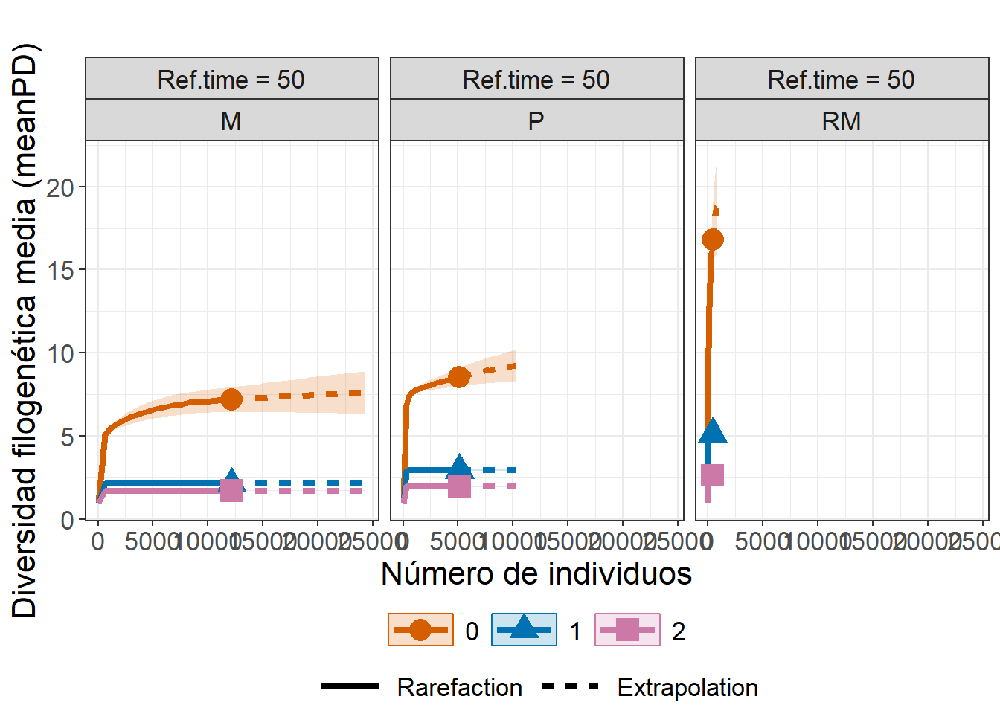
Figura 2. Curvas de rarefacción y extrapolación por orden de diversidad
En este caso, al usar facet.var = "Order.q" dentro de la función ggiNEXT3D(), las curvas de rarefacción y extrapolación se agrupan por orden de diversidad filogenética (q). Cada panel muestra la respuesta de la diversidad filogenética media (meanPD) para un valor de q determinado:
En cada panel de la Figura 11, las curvas de colores indican los ensamblajes (M, P y RM), y las líneas continuas y punteadas distinguen entre los procesos de rarefacción y extrapolación, respectivamente.
Este tipo de visualización permite comparar cómo varía la estructura evolutiva de los ensamblajes según la importancia que se otorgue a las especies raras (q = 0) o dominantes (q = 2).
En el ejemplo, el ensamblaje RM muestra un incremento abrupto en la diversidad para q = 0, lo que sugiere una mayor contribución de linajes poco abundantes o únicos en el conjunto muestreado.
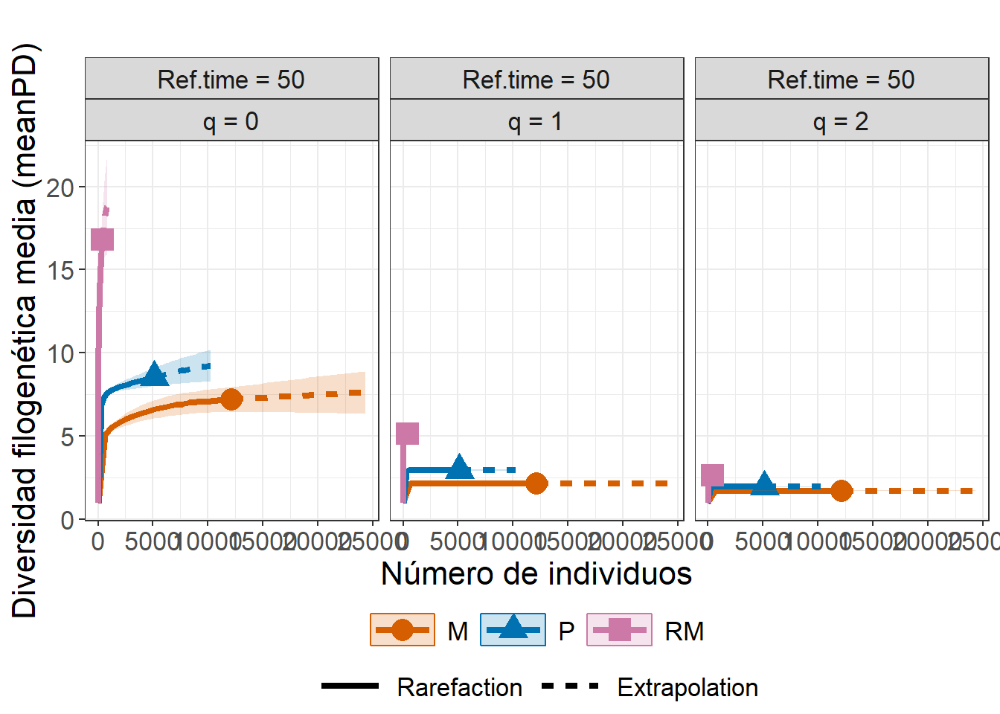
Figura 3. Curvas de completitud de muestra (Sample completeness curve)
La Figura 12 generada con ggiNEXT3D() (type = 2) muestra la curva de completitud de la muestra, que representa la cobertura muestral (sample coverage) en función del número de individuos muestreados. En esta figura, cada color corresponde a un ensamblaje (M, P y RM), y las líneas continuas y punteadas indican las fases de rarefacción y extrapolación, respectivamente.
La cobertura muestral refleja el grado de representatividad de las especies y linajes en el muestreo; valores cercanos a 1, como los observados en M y P, indican que casi todas las ramas filogenéticas presentes en la comunidad fueron detectadas. Por el contrario, el ensamblaje RM, con un tamaño de muestra menor, exhibe una cobertura ligeramente inferior, lo que sugiere que podrían existir linajes adicionales aún no observados.
Este tipo de curva es útil para evaluar la completitud filogenética del esfuerzo de muestreo y comparar el nivel de representación entre ensamblajes con distintos tamaños o estructuras evolutivas.
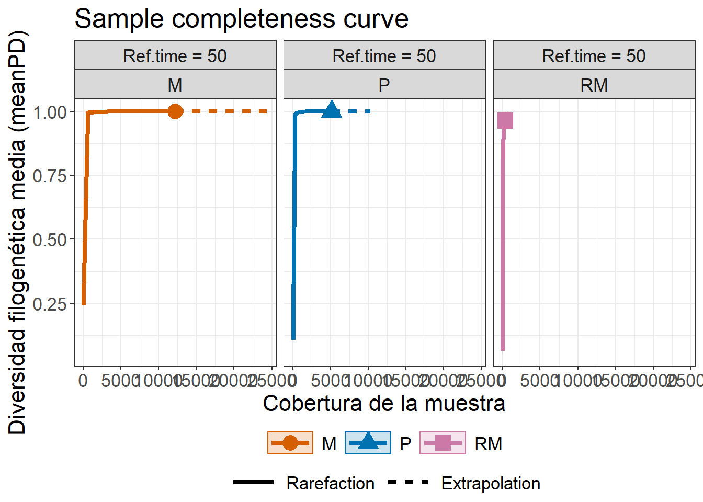
Figura 4. Curvas de diversidad filogenética estandarizadas por cobertura
Las curvas de rarefacción y extrapolación basadas en cobertura (type = 3) de la Figura 13, representan cómo cambia la diversidad filogenética promedio en función de la completitud muestral. (1) En la primera figura, donde facet.var = "Assemblage", cada panel muestra un ensamblaje (M, P y RM) y las curvas de color indican los tres órdenes de diversidad (q = 0, 1 y 2), que corresponden a la riqueza filogenética, la diversidad de Shannon y la de Simpson, respectivamente. (2) En la segunda figura, donde facet.var = "Order.q", se invierte la perspectiva: cada panel corresponde a un orden de diversidad fijo, y las curvas de color comparan la diversidad filogenética entre los ensamblajes.
En conjunto, ambas visualizaciones permiten interpretar cómo varía la longitud total de las ramas del árbol filogenético conforme aumenta la cobertura. El ensamblaje RM alcanza los mayores valores de diversidad filogenética para q = 0, evidenciando una mayor representatividad de linajes evolutivos únicos, mientras que los ensamblajes M y P exhiben una estructura más homogénea con menor incremento de diversidad al aumentar la cobertura. Estas curvas facilitan comparar ensamblajes con distinto tamaño de muestra bajo un mismo nivel de completitud, integrando la información de abundancia, historia evolutiva y equitatividad entre linajes.


7) Perfiles tau de diversidad funcional con datos de abundancia
En PD, el eje del tiempo de referencia (Reftime) “corta” el árbol desde la raíz hacia el presente: a tiempos muy pequeños solo se reconocen linajes muy profundos (pocas ramas largas); a tiempos grandes se van incorporando divisiones más recientes (más ramas y longitud total efectiva). Con meanPD se expresa la diversidad en “número efectivo de linajes igualmente divergentes”, de modo que las curvas son comparables entre los ensamblajes. Para cada zona (M, P y RM) y para cada orden \(q\in{0,1,2}\), el perfil muestra: (i) observado vs. asintótico (líneas segmentadas/continuas) y sus IC; (ii) sensibilidad al tiempo: si una curva crece rápido al aumentar Reftime, el ensamblaje gana linajes por encima de ramas recientes (historia evolutiva más “ramificada” en escalas cortas); si crece lento, la señal está concentrada en clados profundos.
Además, la comparación entre órdenes resume equidad filogenética: \(q=0\) (todas las ramas cuentan por igual) tiende a ser mayor y con IC más anchos; \(q=1\) (Shannon filogenético) y \(q=2\) (Simpson filogenético) penalizan dominancia de linajes comunes y reducen la incertidumbre. En tus resultados, RM suele superar a P y M en \(q=0\) para Reftime altos (más linajes recientes incorporados), mientras que en \(q=1,2\) las diferencias se atenúan si unos pocos clados dominan la abundancia (Tabla 23).
| Assemblage | Order.q | qPD | s.e. | qPD.LCL | qPD.UCL | Method | Reftime | Type |
|---|---|---|---|---|---|---|---|---|
| M | 0 | 41.50 | 12.86 | 16.29 | 66.71 | Asymptotic | 0.01 | meanPD |
| M | 1 | 5.71 | 0.04 | 5.64 | 5.78 | Asymptotic | 0.01 | meanPD |
| M | 2 | 4.14 | 0.03 | 4.09 | 4.20 | Asymptotic | 0.01 | meanPD |
| P | 0 | 34.00 | 3.43 | 27.28 | 40.71 | Asymptotic | 0.01 | meanPD |
| P | 1 | 12.32 | 0.15 | 12.03 | 12.61 | Asymptotic | 0.01 | meanPD |
| P | 2 | 9.45 | 0.15 | 9.16 | 9.75 | Asymptotic | 0.01 | meanPD |
Figura 5. Perfiles tau de diversidad funcional con datos de abundancia
En los perfiles de la Figura 15, el eje x recorre la profundidad del árbol: tiempos muy pequeños incorporan solo ramas profundas; al aumentar el tiempo se agregan divisiones recientes. Cada panel fija un orden q:
\(q=0\) (todas las ramas pesan igual) suele dar valores altos al inicio y cae bruscamente, porque al principio se “descubre” mucha longitud en pocos linajes profundos; luego se estabiliza cuando ya casi todo el árbol está incluido.
\(q=1\) y \(q=2\) penalizan la dominancia: las curvas son más bajas y más planas, reflejando que la historia evolutiva está concentrada en unos linajes más comunes.
Las líneas continuas son los estimados asintóticos y las segmentadas los observados; las bandas son IC. En tus datos, RM arranca con PD más alta a tiempos cortos (más profundidad filogenética temprana), pero todas las curvas convergen a tiempos grandes, señal de que, al integrar ramas recientes, las diferencias se reducen en términos de número efectivo de linajes igualmente divergentes. Esta lectura conjunta (forma de la caída + separación entre ensamblajes) resume qué tan profunda es la porción del árbol representada y cómo se distribuye entre linajes comunes y raros.
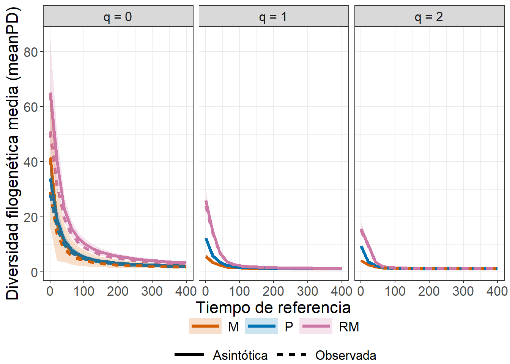
C.1.3 Diversidad alfa funcional (FD)
Siguiendo las recomendaciones de Chao et al. (2021), la diversidad funcional se evalúa a partir de una matriz de distancias entre especies, derivada de sus rasgos funcionales, utilizando la distancia de Gower. Este método es especialmente adecuado cuando se combinan variables continuas y binarias, y permite cuantificar cuán diferentes son funcionalmente las especies según sus atributos ecológicos. En este contexto, valores cercanos a 0 representan especies con rasgos altamente similares, mientras que valores próximos a 1 indican combinaciones de rasgos muy distintas.
Esta matriz de distancias funcionales se incorpora en iNEXT3D mediante el argumento FDdistM, lo cual posibilita estimar la diversidad funcional en sus distintas facetas (q = 0, 1 y 2) incluso cuando la disponibilidad de rasgos es heterogénea o combina atributos de diferente naturaleza.
1) Matriz de distancias de Gower
Para construir la matriz funcional utilizada en los análisis, primero se organiza la tabla de rasgos seleccionando tanto variables continuas (por ejemplo, TrophicLevel, BodyLength, BodyLengthMax, ShapeFactor) como rasgos binarios que describen hábitos tróficos (p. ej. omnivory, invertivory, piscivory). Las variables continuas se ajustan como numéricas, mientras que las binarias se homogenizan en un formato 0/1, evitando inconsistencias provenientes de codificaciones textuales diversas. Después de eliminar especies con información incompleta en los rasgos elegidos y asignar los nombres científicos como identificadores de fila, se calcula la distancia funcional entre pares de especies mediante gowdis(), que implementa la métrica de Gower para datos mixtos y retorna una matriz simétrica acotada en [0,1].
Posteriormente, esta matriz se alinea con la base de abundancia de cada ensamblaje para garantizar que ambas compartan exactamente las mismas especies en el mismo orden. Una vez armonizados los datos, la matriz resultante (biol.dist.alfa) se integra como insumo en iNEXT3D, permitiendo estimar la diversidad funcional y sus componentes bajo el esquema de números de Hill. Esta integración facilita comparar ensamblajes, evaluar la similitud funcional entre sus especies y explorar la estructura funcional de las comunidades bajo diferentes órdenes de sensibilidad (q = 0, 1, 2).
2) Base de abundancia por cada zona comparada (M, P y RM)
A partir de la hoja tax, se organiza la información de abundancia en una matriz especie × ensamblaje, consolidando valores numéricos, eliminando inconsistencias y sumando registros duplicados cuando fue necesario. Posteriormente, esta matriz se alineó con la matriz funcional biol.dist.alfa para asegurar que ambas compartieran exactamente las mismas especies y en el mismo orden. Este procedimiento garantiza la compatibilidad entre las fuentes de información antes de ejecutar los análisis de diversidad funcional y comparaciones entre ensamblajes (Tabla 24).
| M | P | RM | |
|---|---|---|---|
| Achirus lineatus | 0 | 0 | 2 |
| Albula vulpes | 0 | 0 | 1 |
| Ameiurus melas | 1 | 0 | 0 |
| Ameiurus natalis | 3 | 0 | 0 |
| Anchoa hepsetus | 0 | 0 | 6 |
| Anchoa mitchilli | 0 | 0 | 17 |
3) Estimación general de la diversidad funcional (FD) en ensamblajes de especies
En este análisis se estima la diversidad funcional (FD) a partir de los datos de abundancia de especies y de una matriz de distancias funcionales construida con base en los rasgos morfológicos y tróficos de cada taxón (biol.dist.alfa) (Tabla 25).
La estimación se realiza mediante la función iNEXT3D() del paquete iNEXT.3D, especificando diversity = "FD". Este procedimiento permite calcular la diversidad funcional observada, interpolada y extrapolada para distintos órdenes de diversidad (q = 0, 1 y 2), lo que posibilita una descripción integral del espacio funcional ocupado por las especies.
El argumento FDdistM indica la matriz de disimilitudes funcionales entre especies, mientras que FDtype = "AUC" solicita que la diversidad se obtenga a partir de la integración del perfil de distintividad (τ-profile), considerando todos los posibles umbrales de similitud entre 0 y 1. Este enfoque resume la contribución funcional total de las especies, integrando tanto su singularidad (especies con rasgos únicos) como su redundancia (especies que comparten funciones ecológicas similares) dentro del espacio funcional.
La salida inicial del análisis ($FDInfo) resume información básica de cada ensamblaje o sitio, que incluye: n: tamaño muestral total (número de individuos); S.obs: riqueza funcional observada; C(n) y SC(2n): coberturas muestrales observadas y extrapoladas, que reflejan el grado de completitud del muestreo; dmin, dmean y dmax: valores mínimo, medio y máximo de disimilitud funcional, que expresan la heterogeneidad de los rasgos dentro de cada comunidad.
Estos indicadores permiten valorar la representatividad funcional de los ensamblajes y examinar el grado de diferenciación o redundancia entre las especies en función de sus rasgos ecológicos.
Dado que el cálculo integral del perfil τ (con FDtype = "AUC") implica procesar numerosas combinaciones de especies, órdenes de diversidad y remuestreos (nboot), se recomienda emplear un número moderado de puntos en las curvas (knots = 20) para mantener un tiempo de ejecución razonable sin comprometer la calidad de las estimaciones.
El resumen de salida de esta Tabla 25, confirma que la cobertura muestral (SC) alcanza valores cercanos a 1.00 en todos los ensamblajes, lo cual indica una alta completitud del muestreo y una buena representación de la diversidad funcional presente en las zonas de montaña (M), laderas (P) y desembocadura (RM).
| Assemblage | n | S.obs | SC(n) | SC(2n) | dmin | dmean | dmax |
|---|---|---|---|---|---|---|---|
| M | 13166 | 30 | 1.00 | 1.00 | 0 | 0.04 | 0.43 |
| P | 5151 | 30 | 1.00 | 1.00 | 0 | 0.07 | 0.51 |
| RM | 414 | 53 | 0.96 | 0.99 | 0 | 0.12 | 0.65 |
4) Estimaciones estandarizadas de diversidad funcional (FD)
La segunda salida principal del análisis (Tabla 26), contenida en la lista $FDiNextEst, presenta las estimaciones estandarizadas de diversidad funcional (FD) obtenidas mediante rarefacción y extrapolación. Este componente permite comparar los ensamblajes bajo condiciones de igual tamaño de muestra o cobertura muestral, eliminando los sesgos asociados a diferencias en el número total de individuos entre sitios.
En este bloque se muestran las estimaciones de diversidad funcional para una secuencia de tamaños de muestra estandarizados. Cada registro incluye: Assemblage: el sitio o ensamblaje analizado. Order.q: el orden de diversidad (q = 0, 1 o 2). m: tamaño de muestra evaluado. Method: tipo de estimación, donde Rarefaction representa interpolación, Observed el valor empírico y Extrapolation la proyección más allá del tamaño original de muestra. qFD: valor estimado de diversidad funcional. qFD.LCL y qFD.UCL: límites inferior y superior del intervalo de confianza al 95 %. SC: nivel de cobertura muestral asociado a cada estimación (Tabla 26).
Estas estimaciones permiten explorar cómo varía la diversidad funcional observada e inferida conforme aumenta el tamaño de muestra, proporcionando la base para construir las curvas de rarefacción y extrapolación funcionales. Dichas curvas ilustran la ganancia de diversidad funcional (es decir, la incorporación de nuevas funciones ecológicas) a medida que se incrementa el número de individuos muestreados.
Este enfoque permite distinguir si las diferencias en diversidad funcional entre los ensamblajes se deben a una mayor variedad de funciones ecológicas representadas o simplemente a un mayor esfuerzo de muestreo o abundancia total.
Los resultados de la Tabla 26 evidencian que la diversidad funcional en la zona de montaña (M) alcanza rápidamente una cobertura total (SC ≈ 1.00), lo que indica que el muestreo fue suficientemente exhaustivo para representar la mayoría de las funciones ecológicas presentes. La estabilidad de los valores de qFD al aumentar el tamaño de muestra sugiere una composición funcional bien definida, con baja redundancia entre especies y un espacio funcional ya saturado por las funciones dominantes en el ensamblaje.
| Assemblage | Order.q | m | Method | qFD | qFD.LCL | qFD.UCL | SC | SC.LCL | SC.UCL |
|---|---|---|---|---|---|---|---|---|---|
| M | 0 | 1 | Rarefaction | 1.00 | 1.00 | 1.00 | 0.21 | 0.21 | 0.22 |
| M | 0 | 1463 | Rarefaction | 1.84 | 1.80 | 1.89 | 1.00 | 1.00 | 1.00 |
| M | 0 | 2926 | Rarefaction | 1.95 | 1.91 | 1.99 | 1.00 | 1.00 | 1.00 |
| M | 0 | 4389 | Rarefaction | 2.02 | 1.99 | 2.06 | 1.00 | 1.00 | 1.00 |
| M | 0 | 5852 | Rarefaction | 2.08 | 2.02 | 2.14 | 1.00 | 1.00 | 1.00 |
| M | 0 | 7314 | Rarefaction | 2.12 | 2.04 | 2.20 | 1.00 | 1.00 | 1.00 |
5) Diversidad funcional estandarizada por cobertura muestral
En esta etapa del análisis se presentan las estimaciones de diversidad funcional (FD) estandarizadas por cobertura muestral, obtenidas del componente $FDiNextEst$coverage_based del objeto de salida (Tabla 24). Este procedimiento ajusta las estimaciones de diversidad funcional a un nivel de completitud común (SC) entre los ensamblajes, lo que permite realizar comparaciones equitativas entre comunidades con distintos tamaños de muestra o abundancias totales.
A diferencia de la estandarización por tamaño de muestra, este enfoque homologa la representatividad funcional de los datos, no el número de individuos. En otras palabras, las comunidades se comparan bajo un mismo grado de completitud muestral, eliminando los efectos del esfuerzo de muestreo y permitiendo identificar diferencias reales en la estructura funcional de las comunidades.
Es importante señalar que los intervalos de confianza tienden a ser más amplios que en el caso del análisis por tamaño de muestra, debido a que la cobertura fija requiere estimar —mediante remuestreo (bootstrap)— el tamaño de muestra necesario para alcanzar cada nivel de completitud, lo cual incrementa la variabilidad de las estimaciones.
Los resultados evidencian que, bajo una cobertura completa (SC ≈ 1.00), las estimaciones de diversidad funcional en el ensamblaje de montaña (M) se mantienen estables y consistentes con las obtenidas por tamaño de muestra (Tabla 27). Esto confirma una alta completitud funcional del muestreo y sugiere una baja redundancia de rasgos ecológicos, reflejando una comunidad con funciones bien representadas y una estructura funcional equilibrada.
| Assemblage | Order.q | SC | m | Method | qFD | qFD.LCL | qFD.UCL |
|---|---|---|---|---|---|---|---|
| M | 0 | 0.21 | 1 | Rarefaction | 1.00 | 0.98 | 1.02 |
| M | 0 | 1.00 | 1463 | Rarefaction | 1.84 | 1.75 | 1.94 |
| M | 0 | 1.00 | 2926 | Rarefaction | 1.95 | 1.83 | 2.07 |
| M | 0 | 1.00 | 4389 | Rarefaction | 2.02 | 1.91 | 2.14 |
| M | 0 | 1.00 | 5852 | Rarefaction | 2.08 | 1.97 | 2.19 |
| M | 0 | 1.00 | 7314 | Rarefaction | 2.12 | 1.98 | 2.26 |
6) Estimaciones asintóticas de diversidad funcional (FDAsyEst)
La Tabla 28 muestra la última salida del análisis, contenida en la lista $FDAsyEst, presenta las estimaciones observadas y asintóticas de la diversidad funcional (FD) para distintos órdenes de diversidad (q = 0, 1 y 2).
Este componente permite evaluar tanto la magnitud de la diversidad funcional en cada ensamblaje como su grado de completitud muestral y la consistencia estadística de las inferencias derivadas del modelo.
En términos ecológicos, valores cercanos entre FD_obs y FD_asy indican que el muestreo logró capturar adecuadamente la diversidad funcional del ensamblaje, mientras que diferencias notorias sugieren un posible submuestreo o la existencia de especies con rasgos funcionales únicos que aún no han sido registradas.
| Assemblage | qFD | FD_obs | FD_asy | s.e. | qFD.LCL | qFD.UCL |
|---|---|---|---|---|---|---|
| M | q = 0 FD(AUC) | 2.23 | 2.36 | 0.18 | 2.01 | 2.71 |
| M | q = 1 FD(AUC) | 1.27 | 1.27 | 0.00 | 1.26 | 1.28 |
| M | q = 2 FD(AUC) | 1.21 | 1.21 | 0.00 | 1.20 | 1.21 |
| P | q = 0 FD(AUC) | 2.72 | 2.95 | 0.19 | 2.58 | 3.32 |
| P | q = 1 FD(AUC) | 1.54 | 1.54 | 0.01 | 1.53 | 1.56 |
| P | q = 2 FD(AUC) | 1.37 | 1.37 | 0.01 | 1.36 | 1.39 |
Figura 1. Curvas de rarefacción/extrapolación basadas en el tamaño de muestra (FD)
En esta Figura 16 se representan las curvas de rarefacción y extrapolación de la diversidad funcional (FD), separadas por ensamblaje según el argumento facet.var = "Assemblage".
Cada panel corresponde a una zona (Montaña —M—, Laderas —P— y Desembocadura —RM—), donde los colores identifican los órdenes de diversidad (q = 0, 1 y 2). Las líneas continuas indican la fase de rarefacción (interpolación dentro del rango de muestreo observado) y las líneas discontinuas muestran la extrapolación (predicción más allá del tamaño de muestra real). El eje X representa el número de individuos y el eje Y la diversidad funcional, expresada como el área bajo la curva (AUC) del perfil de distintividad (τ-profile).
Las curvas reflejan cómo la diversidad funcional acumulada se estabiliza progresivamente con el incremento del esfuerzo de muestreo. En los ensamblajes M y P, las curvas de q = 0 alcanzan una meseta pronunciada, indicando una alta completitud del muestreo y una baja probabilidad de detectar nuevas funciones ecológicas con mayor esfuerzo. En contraste, el ensamblaje RM muestra curvas más cortas y con mayor incertidumbre, reflejando un tamaño muestral reducido y una mayor sensibilidad a la presencia de especies funcionalmente raras.
Este patrón sugiere que las localidades de montaña y laderas presentan un espacio funcional bien representado, mientras que en la desembocadura podría existir submuestreo o alta heterogeneidad funcional aún no capturada por el esfuerzo realizado.

Figura 2. Curvas de rarefacción/extrapolación por orden de diversidad (FD)
En esta Figura 17 se presentan las curvas de rarefacción y extrapolación de la diversidad funcional (FD) separadas por orden de diversidad mediante el argumento facet.var = "Order.q".
Cada panel corresponde a un valor de q (0, 1 o 2), y dentro de cada uno se comparan los tres ensamblajes —Montaña (M), Laderas (P) y Desembocadura (RM)—.
Las líneas continuas representan la rarefacción, y las discontinuas la extrapolación, con bandas sombreadas que muestran los intervalos de confianza. El panel de q = 0 enfatiza la riqueza funcional, capturando la variedad de funciones sin considerar las abundancias relativas. En q = 1 y q = 2, las estimaciones se ajustan progresivamente hacia la dominancia funcional, dando mayor peso a las especies más comunes y reduciendo la influencia de las raras.
Los resultados de la Figura 17 revelan que el ensamblaje de montaña (M) mantiene una diversidad funcional consistentemente mayor a lo largo de todos los órdenes de diversidad, lo que indica una estructura funcional equilibrada y con alta complementariedad de rasgos. Por su parte, el ensamblaje de laderas (P) muestra una diversidad intermedia, mientras que el de desembocadura (RM) presenta los valores más bajos y mayor incertidumbre, evidenciando una reducción de la diversidad funcional efectiva posiblemente asociada a una simplificación del ensamblaje o limitaciones ambientales.
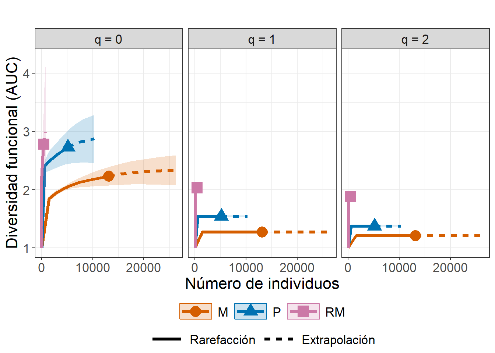
Figura 3. Curvas de completitud muestral (FD)
En cada panel de la Figura 18, el eje X representa el número de individuos (tamaño de muestra) y el eje Y la cobertura muestral (Sample coverage), que mide la proporción estimada de la diversidad funcional detectada en relación con el total potencial. Las líneas continuas representan las fases de rarefacción (interpolación dentro del rango observado) y las líneas discontinuas la extrapolación (proyección más allá del tamaño de muestra original).
Los resultados de la Figura 18 muestran que todos los ensamblajes alcanzan niveles de cobertura muy altos (SC ≈ 1.0), lo que indica una alta completitud del muestreo funcional. En otras palabras, casi la totalidad de las funciones ecológicas presentes en cada comunidad fueron registradas.
El ensamblaje de montaña (M) y el de laderas (P) presentan curvas que se estabilizan rápidamente, evidenciando un esfuerzo de muestreo suficiente y una estructura funcional bien representada. El ensamblaje de desembocadura (RM), aunque con menor número total de individuos, también alcanza una cobertura cercana a 1, lo que sugiere que, pese al menor tamaño muestral, el esfuerzo fue adecuado para capturar su diversidad funcional real. En conjunto, estas curvas confirman que las estimaciones de diversidad funcional basadas en los datos son confiables y no están afectadas por insuficiencia de muestreo.

Figura 4. Curvas de rarefacción y extrapolación basadas en cobertura (FD)
En la Figura 19 cada panel corresponde a un ensamblaje —Montaña (M), Laderas (P) y Desembocadura (RM)—, y los colores distinguen los órdenes de diversidad (q = 0, 1, 2), asociados respectivamente a la riqueza funcional, la diversidad funcional ponderada por abundancia (Shannon) y la diversidad funcional dominada por especies comunes (Simpson). El eje X representa la cobertura muestral (SC) y el eje Y la diversidad funcional efectiva (FD), expresada como el área bajo la curva (AUC).
Las líneas continuas muestran la fase de rarefacción (interpolación dentro del rango observado), mientras que las líneas punteadas reflejan la extrapolación más allá de la cobertura empírica.
Los resultados de la Figura 19 muestran que los tres ensamblajes alcanzan coberturas próximas a 1, lo que evidencia una alta completitud del muestreo. Sin embargo, el incremento en diversidad funcional con la cobertura varía según el orden de diversidad:
En q = 0, la curva es más pronunciada, reflejando la influencia de especies raras que amplían el espacio funcional al aumentar la cobertura.
En q = 1 y q = 2, las curvas son más estables, indicando una estructura funcional dominada por especies comunes y baja incorporación de nuevas funciones con mayor esfuerzo.
Este patrón sugiere que los ensamblajes o zonas difieren principalmente en la proporción de especies raras con rasgos únicos, más que en la contribución de las especies dominantes al espacio funcional global.
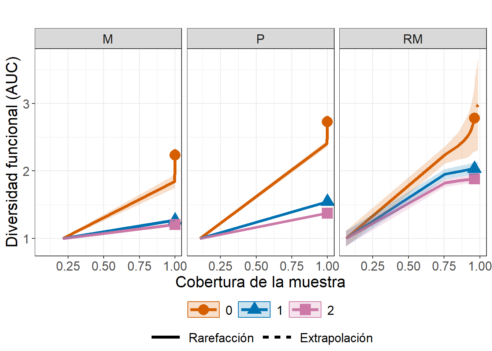
Figura 5. Curvas de cobertura estandarizada y comparación entre ensamblajes
En la Figura 20, el eje X representa la cobertura muestral (SC) —una medida del grado de completitud del muestreo—, mientras que el eje Y muestra la diversidad funcional efectiva (AUC). Las líneas continuas indican las fases de rarefacción (interpolación) y las líneas punteadas las de extrapolación, con bandas de color que representan los intervalos de confianza del remuestreo.
Cada panel corresponde a un orden de diversidad (q = 0, 1 y 2), donde:
q = 0 representa la riqueza funcional, sensible a la presencia de especies raras con rasgos únicos.
q = 1 refleja la diversidad funcional de Shannon, que pondera las especies según su abundancia.
q = 2 enfatiza la diversidad funcional de Simpson, influenciada por las especies dominantes.
Las curvas de la Figura 20 comparan los tres ensamblajes —Montaña (M), Laderas (P) y Desembocadura (RM)— bajo un mismo nivel de completitud. Los resultados muestran que, aunque todos alcanzan coberturas próximas a 1.0, los valores de FD son sistemáticamente mayores en los ensamblajes de Montaña y Laderas, indicando una mayor amplitud y complejidad del espacio funcional en comparación con el ensamblaje de Desembocadura, que exhibe una menor diversidad y mayor incertidumbre en las estimaciones extrapoladas.
En conjunto, estas curvas confirman que, incluso tras estandarizar por cobertura, la jerarquía funcional entre ensamblajes se mantiene, revelando diferencias consistentes en la organización y redundancia de los rasgos ecológicos.

7) Perfiles de diversidad funcional (FD) según el orden de diversidad (q-profiles)
Los perfiles de diversidad funcional (q-profiles) permiten explorar cómo cambia la diversidad cuando se modifican los pesos asignados a las especies según su abundancia.
El análisis se realiza con la función ObsAsy3D() del paquete iNEXT.3D, configurando el argumento diversity = "FD" para calcular la diversidad funcional (FD).
En este procedimiento, el parámetro τ (tau) define el umbral de similitud funcional entre especies, mientras que los valores de q (0, 1, 2) determinan la sensibilidad a la dominancia de especies.
q = 0: todas las especies tienen el mismo peso, reflejando la riqueza funcional.
q = 1: pondera las especies por su abundancia, análogo a la diversidad de Shannon.
q = 2: enfatiza las especies dominantes, equivalente a la diversidad de Simpson.
Curvas que descienden rápidamente con q evidencian que pocas especies dominan el espacio funcional, mientras que descensos más suaves indican un reparto más equitativo de las funciones ecológicas. En conjunto, los q-profiles describen cómo la diversidad funcional se distribuye entre especies comunes y raras, y cómo la estructura funcional responde al peso relativo que se les otorga.
Los resultados de la Tabla 29 permiten visualizar cómo la diversidad funcional (FD) cambia con los diferentes órdenes de diversidad y niveles de distintividad funcional (τ). En el ejemplo mostrado, el ensamblaje de montaña (M) presenta una disminución progresiva de FD a medida que aumenta q, indicando que la comunidad posee algunas especies dominantes que concentran gran parte de las funciones ecológicas. Por otro lado, los valores relativamente altos de FD en τ bajos (0–0.1) reflejan la presencia de especies con rasgos únicos, que amplían el espacio funcional incluso si son poco abundantes.
| Assemblage | Order.q | qFD | s.e. | qFD.LCL | qFD.UCL | Method | Tau |
|---|---|---|---|---|---|---|---|
| M | 0 | 42.50 | 15.52 | 12.09 | 72.91 | Asymptotic | 0.00 |
| M | 1 | 6.54 | 0.04 | 6.46 | 6.62 | Asymptotic | 0.00 |
| M | 2 | 4.72 | 0.02 | 4.67 | 4.76 | Asymptotic | 0.00 |
| M | 0 | 8.61 | 0.56 | 7.51 | 9.71 | Asymptotic | 0.05 |
| M | 1 | 2.29 | 0.02 | 2.25 | 2.34 | Asymptotic | 0.05 |
| M | 2 | 1.87 | 0.01 | 1.85 | 1.90 | Asymptotic | 0.05 |
Figura 6. perfiles de distintividad funcional (τ-profiles)
Estos perfiles son generados con la función ggObsAsy3D() (argumento profile = "tau"), los cuales representan cómo varía la diversidad funcional (FD) a lo largo del gradiente de τ (tau) —el umbral de similitud funcional entre especies— para los tres ensamblajes: Montaña (M), Laderas (P) y Desembocadura (RM). Las líneas continuas muestran las estimaciones asintóticas (esperadas con muestreo completo), mientras que las líneas discontinuas indican los valores observados directamente en los datos.
Los resultados de la Figura 21 revelan una disminución pronunciada de FD al incrementar τ, lo que refleja que gran parte de la diversidad funcional se concentra en especies poco similares entre sí (τ bajos). A medida que τ aumenta —es decir, cuando se exige mayor similitud para considerar dos especies distintas—, la diversidad efectiva cae rápidamente y tiende a estabilizarse.
Este patrón indica que los ensamblajes presentan una estructura funcional con alto grado de singularidad en rasgos morfológicos y tróficos, dominada por especies que difieren marcadamente entre sí, especialmente en los valores de q = 0, donde la riqueza funcional total alcanza sus máximos antes de reducirse con el aumento del umbral τ.
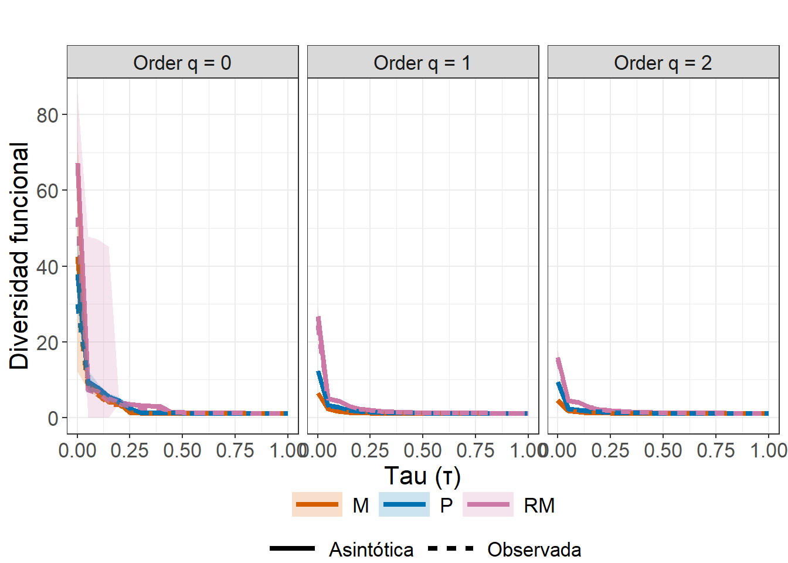
8) Estimación de la diversidad funcional (FD) basada en los números de Hill
En esta sección se estima la diversidad funcional (FD) de los ensamblajes utilizando el enfoque de los números de Hill (q), el cual permite caracterizar la estructura funcional de las comunidades desde diferentes grados de sensibilidad a la abundancia de las especies.
A través de este enfoque, se puede analizar cómo la composición funcional de los ensamblajes se modifica al pasar de valorar la simple presencia de especies a ponderar su dominancia ecológica.
Los resultados obtenidos en la Tabla 30 muestran que la diversidad funcional disminuye de forma progresiva al aumentar el orden q, lo que refleja que las especies dominantes son funcionalmente más redundantes que las raras. Esto implica que, aunque las comunidades puedan albergar un número elevado de especies funcionalmente distintas (alto FD para q = 0), gran parte de las funciones ecológicas se concentran en unas pocas especies comunes cuando se pondera por abundancia (q = 1 o q = 2).
En el ensamblaje Montaña (M), la FD asintótica desciende de 2.36 (q = 0) a 1.21 (q = 2), indicando una pérdida de diversidad funcional efectiva al considerar la dominancia de las especies. En contraste, el ensamblaje Laderas (P) mantiene valores más altos (FD ≈ 2.95 en q = 0), lo que sugiere una mayor amplitud de funciones ecológicas y una comunidad más heterogénea en sus rasgos funcionales.
| Assemblage | Order.q | qFD | s.e. | qFD.LCL | qFD.UCL | Method |
|---|---|---|---|---|---|---|
| M | 0.0 | 2.36 | 0.08 | 2.20 | 2.51 | Asymptotic |
| M | 0.5 | 1.39 | 0.01 | 1.38 | 1.40 | Asymptotic |
| M | 1.0 | 1.27 | 0.00 | 1.26 | 1.28 | Asymptotic |
| M | 1.5 | 1.23 | 0.00 | 1.23 | 1.23 | Asymptotic |
| M | 2.0 | 1.21 | 0.00 | 1.20 | 1.21 | Asymptotic |
| P | 0.0 | 2.95 | 0.39 | 2.18 | 3.72 | Asymptotic |
Figura 7. Perfil-q de diversidad funcional
La Figura 22 presenta los perfiles-q de diversidad funcional (FD) derivados de los valores observados y asintóticos para los tres ensamblajes: Montaña (M), Laderas (P) y Desembocadura (RM).
Cada curva muestra cómo la diversidad funcional cambia cuando se modifican los pesos asignados a las especies según su abundancia, representados por el parámetro q.
En el eje X se ubica el orden de diversidad (q), que varía entre 0 y 2, y en el eje Y se representa la diversidad funcional expresada como el área bajo la curva (AUC).
Las líneas continuas corresponden a las estimaciones asintóticas, mientras que las líneas punteadas representan los valores observados; las bandas sombreadas muestran los intervalos de confianza calculados mediante remuestreo (bootstrap).

El patrón decreciente de las curvas indica que, al aumentar q, las especies dominantes adquieren mayor peso en el cálculo y la diversidad funcional efectiva se reduce. En este contexto, el ensamblaje RM mantiene los valores más altos de FD a lo largo del gradiente de q, lo que sugiere una comunidad con mayor amplitud funcional y menor redundancia entre especies. Por el contrario, M muestra una disminución más marcada, evidenciando una estructura funcional más homogénea, donde unas pocas especies dominantes concentran la mayoría de las funciones ecológicas.
C.2 Diversidad beta filogenética (PD) y funcional (FD)
Tras estimar las diversidades taxonómica, filogenética y funcional mediante iNEXT3D (Chao et al., 2021), el siguiente paso consiste en evaluar cómo varían estas dimensiones de la biodiversidad entre comunidades o ensamblajes, es decir, en el componente beta de la diversidad. Para ello se emplea el paquete iNEXT.beta3D (Chao et al., 2023), una extensión directa de iNEXT.3D que implementa la rarefacción y extrapolación (R/E) para la diversidad beta en sus tres dimensiones: taxonómica (TD), filogenética (PD) y funcional (FD), bajo el mismo marco de los números de Hill.
Este enfoque se basa en la teoría de los números de Hill y su generalización a medidas filogenéticas y funcionales. En este marco unificado, la diversidad filogenética media (mean-PD) cuantifica el número efectivo de linajes independientes (ajustada por la profundidad del árbol), mientras que la diversidad funcional (FD) expresa el número efectivo de grupos funcionales o “especies funcionales virtuales”. Así, TD, PD y FD comparten una misma unidad de medida (equivalentes de especies), lo que permite realizar comparaciones directas entre dimensiones de la diversidad.
En este sentido, mientras que iNEXT.3D (Chao et al., 2021) estima las tres dimensiones de la diversidad (taxonómica, filogenética y funcional) a nivel alfa, es decir, dentro de cada ensamblaje o comunidad, iNEXT.beta3D (Chao et al., 2023) amplía ese marco hacia la diversidad beta, introduciendo por primera vez un enfoque estadísticamente sólido y estandarizado para evaluar cómo varía la composición de especies, linajes o funciones ecológicas entre comunidades. Su aporte clave es la descomposición multiplicativa de la diversidad en sus tres componentes:
\[ \gamma = \alpha \times \beta \]donde:
α (alfa) representa la diversidad promedio dentro de los ensamblajes,
γ (gamma) la diversidad total combinada de todos los ensamblajes, y
β (beta) cuantifica la diferenciación o recambio (turnover) entre ellos.
El paquete ofrece estimaciones estandarizadas por tamaño de muestra o cobertura, e incorpora cuatro clases de medidas de disimilitud basadas en cobertura, que reflejan la magnitud del cambio en la composición de especies, linajes o funciones ecológicas entre comunidades. En este apartado se dará prioridad a las dimensiones filogenética (PD) y funcional (FD), con el fin de evaluar cómo la historia evolutiva compartida y los rasgos funcionales determinan los patrones de recambio a lo largo del gradiente ambiental estudiado.
Si el objetivo es evaluar la diversidad dentro de cada ensamblaje (α-diversidad) —por ejemplo, comparar la riqueza o diversidad funcional de comunidades aisladas—, el uso de iNEXT.3D es suficiente. Sin embargo, cuando se busca comparar comunidades y analizar el recambio filogenético o funcional (β-diversidad) a lo largo de gradientes ambientales, espaciales o temporales, se recomienda utilizar iNEXTbeta3D, ya que:
Estandariza la comparación entre comunidades con distintos tamaños o esfuerzos de muestreo mediante cobertura, evitando sobre o subestimaciones.
Permite interpretar β-diversidad filogenética y funcional en unidades comparables, expresadas como el número efectivo de linajes o grupos funcionales.
Integra α, β y γ dentro del mismo marco analítico, facilitando inferencias ecológicas más completas sobre la estructuración de comunidades.
En otras palabras, iNEXT3D responde a la pregunta:
“¿Cuánta diversidad filogenética hay dentro de cada comunidad?”
Mientras que iNEXT.beta3D responde a:
“¿Cuánto difieren las comunidades entre sí en términos de su composición filogenética?”
C.2.1 Diversidad beta filogenética (PD)
Para calcular diversidad filogenética con iNEXT.beta3D, se requiere un árbol filogenético en formato phylo, donde las ramas representen las relaciones evolutivas entre las especies analizadas. El siguiente procedimiento será similar al realizado con iNEXT3D, usando un código fuente arbol.R, para construir dicho árbol de forma semiautomática a partir de la lista de las especies desde la hoja “tax1” del archivo datos.xlsx, la cual contiene los nombres científicos completos y sus abreviaturas. Este formato permitirá el reconocimiento de cada especie con sus registros en bases de datos internacionales (como NCBI o GBIF).
El árbol filogenético requerido en este procedimiento con iNEXT.beta3D es diferente al usado para iNEXT3D, por lo siguiente:
arbol_filo(iNEXT3D) → árbol global, para evaluar diversidad filogenética dentro de ensamblajes (análisis alfa).arbol_filo_beta(iNEXT.beta3D) → árbol filtrado o específico, para evaluar diferencias filogenéticas entre ensamblajes (análisis beta).
1) Cálculo de la diversidad beta filogenética con iNEXT.beta3D
El siguiente procedimiento resume el flujo de trabajo para calcular la diversidad filogenética beta (PD) mediante el paquete iNEXT.beta3D. Este análisis permite evaluar cuánto difieren las comunidades biológicas entre sí en términos evolutivos, integrando tanto la composición de especies como la estructura del árbol filogenético. El proceso se divide en tres etapas: carga de insumos, alineación automática y ejecución del cálculo.
1.1) Cargar insumos
El análisis de diversidad filogenética beta con iNEXT.beta3D parte de la misma base de abundancias utilizada para el análisis alfa (biol), pero reorganizada en formato de lista, donde cada elemento representa un par de sitios o zonas de comparación. En este ejemplo se emplean tres zonas de la cuenca hidrográfica mexicana —M (montaña), P (laderas) y RM (desembocadura)—, lo que genera tres comparaciones posibles: M_vs_P, M_vs_RM y P_vs_RM.
El siguiente código transforma la matriz de abundancias en una lista con estas combinaciones, de modo que cada elemento pueda ser evaluado de forma independiente en el cálculo de diversidad beta.
En el siguiente código se preparan los objetos necesarios para el análisis. arbol_filo_beta es el árbol filogenético previamente construido y almacenado en formato .rds, con estructura de clase phylo. biol_PD_beta es la lista con las matrices de abundancia pareadas entre sitios o zonas (por ejemplo, M_vs_P, M_vs_RM, P_vs_RM). tax1 es la tabla de correspondencia entre abreviaturas (Abbrev) y nombres científicos (LatinName), utilizada solo si el árbol o las matrices no comparten el mismo formato de nombres.
Este paso garantiza que los datos biológicos y evolutivos estén disponibles y correctamente formateados antes de la alineación.
1.2) Alineación automática con alineador.R
El siguiente paso consiste en garantizar que los nombres de especies del árbol y de las matrices coincidan exactamente. Este proceso se simplifica mediante la función alinear_beta() definida en el archivo alineador.R. Esta función ejecuta internamente tres acciones:
Estandarización de nombres
Limpia los nombres de especies en todas las matrices (biol_PD_beta) y en el árbol (arbol_beta), eliminando espacios o inconsistencias tipográficas. Si el árbol se encuentra en formato de abreviaturas, se reetiquetan automáticamente los tips con los nombres científicos completos, usando el diccionariotax1.Poda y sincronización
Identifica las especies comunes entre el árbol y las matrices y elimina aquellas que no aparecen simultáneamente. El árbol resultante conserva únicamente las especies efectivamente presentes en los datos, evitando errores de desajuste durante el cálculo.Alineación estructural
Rellena las especies faltantes con valores de abundancia cero y reordena las filas de todas las matrices según el orden de los tips del árbol. Esto asegura una correspondencia exacta uno a uno entre la información biológica y la filogenética. El resultado es un conjunto de datos estructuralmente coherente y listo para el análisis.
$n_pairs
[1] 3
$n_tips_tree_in
[1] 84
$n_tips_tree_out
[1] 84
$relabeled_tree
[1] TRUE
$tips_dropped
[1] "Agonostomus monticola" "Symphurus civitatium"
$species_union
[1] 86
$species_kept
[1] 84El objeto ali$report incluye un resumen del alineamiento, con información como el número de especies iniciales y finales, si el árbol fue reetiquetado, y cuántos tips fueron eliminados o conservados. Esto permite documentar la trazabilidad del procedimiento y verificar su reproducibilidad.
1.3) Diversidad beta filogenética (PD) por coberturas
Una vez alineados los datos de abundancia con el árbol filogenético, se procede al cálculo de la diversidad filogenética beta mediante la función iNEXTbeta3D(). En este caso, se selecciona la opción diversity = "PD" para estimar la diversidad filogenética basada en las distancias evolutivas entre las especies registradas en cada par de ensamblajes de peces. El parámetro base = "coverage" indica que el procedimiento realiza rarefacción y extrapolación basadas en cobertura, es decir, ajusta los cálculos a un nivel de completitud muestral comparable entre zonas, evitando sesgos por diferencias en el esfuerzo de muestreo.
Se define PDtype = "meanPD", lo que expresa la diversidad como el número efectivo de linajes igualmente divergentes, un estimador robusto y comparable de la diversidad filogenética entre comunidades. El argumento biol_PD representa la lista de matrices de abundancia para cada combinación pareada de zonas —en este caso, Montaña (M), Laderas (P) y Desembocadura (RM)—, mientras que arbol_PD proporciona el árbol filogenético sincronizado con los mismos nombres de especies. En este contexto, Reftime = 50 es el tiempo de referencia (en millones de años) correspondiente a la raíz del árbol (PDreftime = NULL por defecto) Esto representa la edad del ancestro común más antiguo del conjunto de especies analizadas (la profundidad del árbol).
Durante la ejecución, iNEXTbeta3D() calcula simultáneamente tres componentes:
γ (gamma): la diversidad total combinada de las dos zonas comparadas,
α (alfa): la diversidad promedio dentro de las zonas, y
β (beta): el grado de diferenciación filogenética entre zonas, expresado como el cociente γ/α.
Estos componentes pueden estandarizarse por cobertura o tamaño de muestra, y se acompañan de estimadores de incertidumbre obtenidos mediante bootstrap (aquí con nboot = 10 repeticiones).
El resultado, como se muestra en la Tabla 31, presenta para cada comparación (por ejemplo, pareja de zonas: M_vs_P) los valores de diversidad filogenética (qPD) en función del orden de diversidad q, el nivel de cobertura (SC), el tamaño de muestra equivalente y los intervalos de confianza. En este caso, los resultados indican cómo la diversidad filogenética efectiva varía con el grado de completitud muestral, permitiendo identificar qué tan diferentes son las comunidades en términos de su historia evolutiva compartida. Ejemplo: comparación M_vs_P
Orden q = 0 → refleja la riqueza filogenética total (todas las especies pesan igual).
Orden q = 1 → pondera las ramas según su abundancia relativa.
Orden q = 2 → enfatiza las especies (o linajes) dominantes.
De este modo, un valor de meanPD mayor en una comparación implica una mayor diferenciación evolutiva entre las comunidades, mientras que valores cercanos a uno indican un ensamblaje filogenéticamente similar entre zonas. Esta información resulta clave para interpretar la estructura biogeográfica y los patrones de recambio filogenético en gradientes ambientales o espaciales, como los observados entre las zonas de montaña, laderas y desembocadura de la cuenca (M, P y RM).
Nota: Los valores de Gamma (meanPD) representan el número efectivo de linajes filogenéticamente diferenciados bajo el enfoque de cobertura estandarizada (Tabla 27). También se pueden ejecutar los insumos Alpha y Beta.
Código
salida.abun21 <- iNEXTbeta3D(
biol_PD,
diversity = "PD",
PDtree = arbol_PD,
datatype = "abundance",
base = "coverage",
nboot = 10,
PDreftime = NULL,
PDtype = "meanPD"
)| Dataset | Order.q | SC | Size | Gamma | Method | s.e. | LCL | UCL | Diversity | Reftime |
|---|---|---|---|---|---|---|---|---|---|---|
| M_vs_P | 0 | 0.50 | 4.12 | 1.99 | Rarefaction | 0.01 | 1.96 | 2.01 | meanPD | 50 |
| M_vs_P | 0 | 0.52 | 4.54 | 2.06 | Rarefaction | 0.01 | 2.04 | 2.09 | meanPD | 50 |
| M_vs_P | 0 | 0.55 | 4.97 | 2.14 | Rarefaction | 0.01 | 2.11 | 2.17 | meanPD | 50 |
| M_vs_P | 0 | 0.58 | 5.50 | 2.22 | Rarefaction | 0.01 | 2.19 | 2.25 | meanPD | 50 |
| M_vs_P | 0 | 0.60 | 6.05 | 2.30 | Rarefaction | 0.02 | 2.27 | 2.33 | meanPD | 50 |
| M_vs_P | 0 | 0.62 | 6.74 | 2.39 | Rarefaction | 0.02 | 2.36 | 2.42 | meanPD | 50 |
Figura 1. Curvas de rarefacción y extrapolación de PD por coberturas
La Figura 23 generada por la función ggiNEXTbeta3D() muestra las curvas de rarefacción y extrapolación de la diversidad filogenética (PD) para las tres comparaciones pareadas de zonas o ensamblajes: montaña–laderas (M_vs_P), montaña–desembocadura (M_vs_RM) y laderas–desembocadura (P_vs_RM).
Cada panel representa uno de los órdenes de diversidad de Hill (q = 0, 1 y 2), que ponderan de manera diferente la abundancia relativa de las especies:
q = 0 considera únicamente la riqueza de linajes (todas las especies pesan igual).
q = 1 da mayor peso a los linajes abundantes (equivalente al índice exponencial de Shannon).
q = 2 resalta los linajes dominantes (relacionado con el índice de Simpson).
Las filas de la Figura 23 corresponden a los tres componentes de la diversidad filogenética, Gamma (γ), Alpha (α) y Beta (β). El eje x representa la cobertura muestral (Sample coverage), que estandariza el esfuerzo de muestreo y permite comparar comunidades con diferentes tamaños de muestra. Las líneas continuas indican la porción de rarefacción (submuestreo) y las líneas discontinuas la extrapolación (proyección) hacia una cobertura completa (1.0).
Las curvas de β-diversidad (fila inferior) evidencian una mayor diferenciación filogenética entre las zonas de montaña y desembocadura (M_vs_RM), lo que sugiere un recambio evolutivo más pronunciado entre extremos altitudinales. Las diferencias se atenúan para q = 2, indicando que los linajes dominantes son más compartidos entre ensamblajes, mientras que las especies raras (q = 0) aportan gran parte de la singularidad filogenética observada.
Este enfoque gráfico, basado en la rarefacción y extrapolación estandarizada por cobertura, integra simultáneamente la información taxonómica, evolutiva y de completitud de muestreo, ofreciendo una visión robusta y comparable de la diversidad filogenética entre comunidades.

1.4) Diversidad beta filogenética (PD) por tamaño de las muestras
El segundo enfoque disponible en iNEXT.beta3D() permite estandarizar la diversidad en función del tamaño de muestra (base = “size”), en lugar de la cobertura de muestreo. En este caso, las curvas se construyen incrementando progresivamente el número de individuos (Number of individuals) hasta el doble del tamaño de muestra de referencia, lo que permite observar cómo varía la diversidad filogenética esperada a medida que aumenta el esfuerzo de colecta (Tabla 32).
El gráfico muestra las curvas de rarefacción (líneas continuas) y extrapolación (líneas discontinuas) para la diversidad filogenética gamma (γ) y alfa (α), bajo tres órdenes de diversidad (q = 0, 1, 2). El panel superior (γ) refleja la diversidad filogenética total combinada de las zonas comparadas. El panel inferior (α) representa la diversidad promedio dentro de las comunidades.
En ambos casos, el eje x corresponde al número acumulado de individuos, mientras que el eje y muestra el valor promedio de diversidad filogenética (mean phylogenetic diversity). Las comparaciones entre ensamblajes —M_vs_P, M_vs_RM y P_vs_RM— permiten observar cómo la diversidad total y la interna responden al incremento del tamaño de muestra.
A diferencia del enfoque basado en cobertura, el método size-based no genera estimaciones válidas para la diversidad beta (β) ni para los índices de disimilitud, ya que el tamaño de muestra no controla adecuadamente la heterogeneidad entre ensamblajes. Por ello, los resultados se limitan a los componentes γ y α.
Código
salida.abun22 <- iNEXTbeta3D(
biol_PD,
diversity = "PD",
PDtree = arbol_PD,
datatype = "abundance",
base = "size",
nboot = 10,
PDreftime = NULL,
PDtype = "meanPD"
)| Dataset | Order.q | Size | SC | Gamma | Method | s.e. | LCL | UCL | Diversity | Reftime |
|---|---|---|---|---|---|---|---|---|---|---|
| M_vs_P | 0 | 1 | 0.18 | 1.00 | Rarefaction | 0.00 | 1.00 | 1.00 | meanPD | 50 |
| M_vs_P | 0 | 912 | 1.00 | 7.69 | Rarefaction | 0.09 | 7.51 | 7.87 | meanPD | 50 |
| M_vs_P | 0 | 1823 | 1.00 | 8.11 | Rarefaction | 0.12 | 7.87 | 8.35 | meanPD | 50 |
| M_vs_P | 0 | 2734 | 1.00 | 8.32 | Rarefaction | 0.15 | 8.02 | 8.62 | meanPD | 50 |
| M_vs_P | 0 | 3645 | 1.00 | 8.47 | Rarefaction | 0.18 | 8.11 | 8.83 | meanPD | 50 |
| M_vs_P | 0 | 4556 | 1.00 | 8.59 | Rarefaction | 0.21 | 8.17 | 9.00 | meanPD | 50 |
Figura 2. Curvas de rarefacción y extrapolación basadas en el tamaño de muestra
En la Figura 24, las curvas indican que la diversidad filogenética total (γ) aumenta rápidamente en las etapas iniciales del muestreo, especialmente en la comparación M_vs_RM, reflejando una mayor acumulación de linajes evolutivamente distintos al incorporar más individuos. Sin embargo, la diversidad dentro de los ensamblajes (α) se estabiliza pronto, lo que sugiere que la mayoría de los linajes comunes ya se encuentran representados con tamaños de muestra moderados.

En la Figura 22 las líneas continuas representan la rarefacción y las discontinuas la extrapolación. Cada panel corresponde a un orden de diversidad (q = 0, 1 y 2) y a un componente de la diversidad (γ y α).
Se observa un incremento inicial pronunciado de la diversidad filogenética total (γ) al aumentar el tamaño de muestra, mientras que la diversidad interna (α) tiende a estabilizarse, reflejando una saturación de los linajes más comunes.
2) Información general de la beta filogenética (PD)
La función DataInfobeta3D() cumple un papel diagnóstico esencial antes del cálculo de la diversidad funcional beta. Su finalidad es resumir las características básicas de los datos funcionales y de abundancia, permitiendo evaluar la representatividad y completitud de los ensamblajes antes de aplicar los modelos de rarefacción y extrapolación (Tabla 33). El procedimiento entrega información resumida para tres niveles de organización:
Cada ensamblaje individual (α): evalúa la diversidad funcional local de cada sitio.
El ensamblaje combinado (γ): representa la diversidad total al unir ambos sitios del par.
El ensamblaje conjunto (base de β): resume el conjunto funcional compartido y las diferencias entre comunidades.
Los valores de cobertura (SC) próximos a 1.00 indican que el muestreo fue altamente completo, tanto a nivel local (α) como combinado (γ), garantizando la representatividad de los linajes observados (Tabla 29). El aumento de PD.obs en los ensamblajes combinados y conjuntos evidencia una ampliación del espacio filogenético, producto de la incorporación de especies que pertenecen a diferentes ramas del árbol evolutivo. Los valores más altos de f₁*, f₂*, g₁ y g₂ en la zona de desembocadura (RM) reflejan la presencia de linajes únicos y evolutivamente distantes, lo que sugiere un aporte significativo de esta zona a la diversidad filogenética regional.
| Dataset | Assemblage | n | S.obs | SC(n) | SC(2n) | PD.obs | f1* | f2* | g1 | g2 | Reftime |
|---|---|---|---|---|---|---|---|---|---|---|---|
| M_vs_P | M | 12172 | 29 | 1.00 | 1.00 | 359.92 | 5 | 1 | 24.52 | 3.43 | 50 |
| M_vs_P | P | 5140 | 28 | 1.00 | 1.00 | 427.45 | 4 | 0 | 46.18 | 0.00 | 50 |
| M_vs_P | Pooled assemblage | 17312 | 36 | 1.00 | 1.00 | 469.64 | 5 | 0 | 44.98 | 0.00 | 50 |
| M_vs_P | Joint assemblage | 17312 | 57 | 1.00 | 1.00 | 787.37 | 9 | 1 | 70.70 | 3.43 | 50 |
| M_vs_RM | M | 12172 | 29 | 1.00 | 1.00 | 359.92 | 5 | 1 | 24.52 | 3.43 | 50 |
| M_vs_RM | RM | 411 | 51 | 0.96 | 0.99 | 840.35 | 15 | 11 | 169.46 | 100.07 | 50 |
| M_vs_RM | Pooled assemblage | 12583 | 80 | 1.00 | 1.00 | 1093.49 | 20 | 12 | 193.98 | 103.49 | 50 |
| M_vs_RM | Joint assemblage | 12583 | 80 | 1.00 | 1.00 | 1200.27 | 20 | 12 | 193.98 | 103.49 | 50 |
| P_vs_RM | P | 5140 | 28 | 1.00 | 1.00 | 427.45 | 4 | 0 | 46.18 | 0.00 | 50 |
| P_vs_RM | RM | 411 | 51 | 0.96 | 0.99 | 840.35 | 15 | 11 | 169.46 | 100.07 | 50 |
| P_vs_RM | Pooled assemblage | 5551 | 76 | 1.00 | 1.00 | 1075.32 | 17 | 10 | 173.58 | 83.47 | 50 |
| P_vs_RM | Joint assemblage | 5551 | 79 | 1.00 | 1.00 | 1267.79 | 19 | 11 | 215.63 | 100.07 | 50 |
C.2.2 Diversidad beta funcional (FD)
El análisis de diversidad funcional beta con iNEXT.beta3D parte de la misma base de abundancias utilizada para el análisis alfa (biol), pero reorganizada en formato de lista, donde cada elemento representa un par de sitios o zonas de comparación.
En este ejemplo se emplean tres zonas de la cuenca mexicana —M (montaña), P (laderas) y RM (desembocadura)—, lo que genera tres comparaciones posibles: M_vs_P, M_vs_RM y P_vs_RM.
1) Construir la matriz de abundancias (Especies × Sitios)
Se carga la hoja tax, se limpian los encabezados (espacios al final), se detecta la columna de sitios (Sites/Sites1), y se pivotea solo las columnas numéricas (especies). El resultado es biol, con especies en filas y sitios en columnas.
2) Armar los pares de sitios para β-FD
A partir de biol, se generan las tres combinaciones: M_vs_P, M_vs_RM y P_vs_RM en la lista biol_FD_beta. Estos serán los ensamblajes que se comparan para FD β.
3) Preparar rasgos funcionales
Se lee la base de rasgos, se convierten las variables continuas a numéricas y binarias a 0/1 (homogeneizando Sí/No/True/False). Se quitan especies con NA en los rasgos usados y se dejan los nombres científicos como rownames.
4) Distancias funcionales (Gower)
Se calcula la distancia de Gower con FD::gowdis() y se pasa a matriz cuadrada con nombres (biol.dist.beta).
5) Alinear “abundancias ↔︎ rasgos”
Se define a pares_sp como el conjunto de especies presentes en al menos un par de biol_FD_beta y se cruzan con las especies que tienen rasgos (rownames(biol.dist.beta)), obteniendo alinear_sp.
Se poda y ordena la matriz de distancias (
biol.dist.beta).Se rellena y reordena cada matriz de abundancia 2-columnas en
biol_FD_betapara que todas tengan exactamentealinear_spen el mismo orden.
6) Chequeos de consistencia
Se verifica la simetría y los nombres. Con esto, todo queda listo para ejecutar el càlculo de la diversidad funcional - PD con la función iNEXTbeta3D().
7) Diversidad beta funcional FD por R/E (rarefacción y extrapolación)
El objetivo de este bloque es estimar y comparar la diversidad funcional entre comunidades bajo un marco de rarefacción y extrapolación (R/E), lo cual permite estandarizar la comparación entre sitios que difieren en el tamaño de muestra o cobertura. El enfoque R/E busca representar cómo cambia la diversidad a medida que aumenta el esfuerzo de muestreo, y proyectar la diversidad esperada más allá del esfuerzo observado. En este caso, se trabaja con:
Datos de abundancia, almacenados en
biol_FD_beta(pares de sitios como M_vs_P, M_vs_RM, etc.).Matriz de distancias funcionales,
biol.dist.beta, que describe las disimilitudes funcionales entre especies según sus rasgos.
La función iNEXTbeta3D() permite calcular la diversidad beta multicomponente (α, β, γ) para tres dimensiones de la diversidad: taxonómica (TD), funcional (FD) y filogenética (PD). En este caso, el interés se centra en la diversidad funcional (FD), con las siguientes configuraciones:
FDtype = “AUC” indica que se usa el método de área bajo la curva (Area Under Curve), que evalúa la diversidad funcional integrando todas las distancias posibles entre 0 y 1.
Este enfoque evita depender de un umbral arbitrario para definir “diferencias funcionales” y ofrece una estimación más continua de la diversidad.base = “coverage” estandariza las comparaciones en función de la cobertura de muestra, garantizando que los ensamblajes se comparen a igual grado de completitud en lugar de igual número de individuos.
nboot = 5 define el número de remuestreos para obtener intervalos de confianza (puede aumentarse para análisis finales).
El objeto salida_abun31 es una lista anidada que contiene los resultados para cada par de zonas o ensamblajes (p. ej. M_vs_P, M_vs_RM, P_vs_RM). Dentro de cada par se incluyen tres componentes alpha: diversidad promedio dentro de los ensamblajes (local o intra-sitio), beta: diferenciación funcional entre los ensamblajes y gamma: diversidad total combinada (regional o inter-sitio).
El ejemplo mostrado tabula los primeros valores de diversidad funcional gamma (γ) para la comparación entre las zonas montaña (M) y laderas (P) (Tabla 34).
| Dataset | Order.q | SC | Size | Gamma | Method | s.e. | LCL | UCL | Diversity |
|---|---|---|---|---|---|---|---|---|---|
| M_vs_P | 0 | 0.50 | 4.67 | 2.27 | Rarefaction | 0.02 | 2.23 | 2.31 | FD_AUC |
| M_vs_P | 0 | 0.52 | 5.12 | 2.36 | Rarefaction | 0.02 | 2.32 | 2.40 | FD_AUC |
| M_vs_P | 0 | 0.55 | 5.66 | 2.44 | Rarefaction | 0.02 | 2.41 | 2.48 | FD_AUC |
| M_vs_P | 0 | 0.58 | 6.24 | 2.54 | Rarefaction | 0.02 | 2.49 | 2.58 | FD_AUC |
| M_vs_P | 0 | 0.60 | 6.91 | 2.63 | Rarefaction | 0.02 | 2.59 | 2.67 | FD_AUC |
| M_vs_P | 0 | 0.62 | 7.69 | 2.73 | Rarefaction | 0.02 | 2.69 | 2.77 | FD_AUC |
Figura 1. curvas de rarefacción y extrapolación (R/E) basadas en cobertura
Esta Figura 25 muestra las curvas (R/E) basadas en cobertura de muestra para la diversidad funcional (FD) en sus tres componentes: gamma (γ), alfa (α) y beta (β). Cada columna representa un orden de diversidad (q = 0, 1 y 2), y cada fila corresponde a una de las tres dimensiones de la diversidad.
En γ, se observa que el par P_vs_RM alcanza la mayor diversidad funcional total, especialmente en q = 0, lo que indica mayor variedad de funciones raras cuando se combinan ambas comunidades.
En α, la diversidad local aumenta con la cobertura, pero tiende a estabilizarse en los órdenes superiores, mostrando una estructura funcional similar entre sitios. En β, el recambio funcional es alto solo en q = 0, impulsado por funciones raras; al ponderar por abundancia (q = 1–2), las comunidades comparten la mayoría de las funciones dominantes.
En conjunto, la figura evidencia que las diferencias funcionales entre zonas se deben principalmente a las funciones raras, mientras que las funciones comunes son ampliamente compartidas entre comunidades.
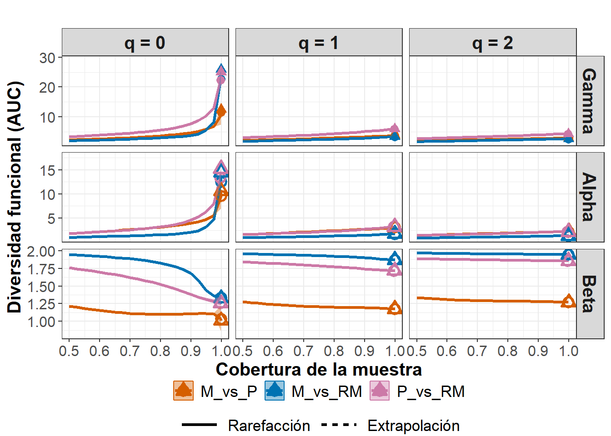
8) Curvas R/E por tamaño de muestra (FD γ y α)
Este análisis estima y compara la diversidad funcional usando rarefacción/extrapolación en función del tamaño de muestra (base = "size"). A diferencia del enfoque por cobertura, aquí todas las curvas se estandarizan por el número de individuos muestreados.
diversity = "FD"yFDtype = "AUC": la FD se calcula como área bajo la curva de distancias funcionales (Gower), sin depender de un único umbral.datatype = "abundance": pondera por abundancias (curvas más estables ante funciones dominantes).nboot = 5: remuestreos para IC (puedes subirlo para informes finales). Eje X: tamaño de muestra (individuos).γ (gamma): diversidad funcional total combinada del par; crecimiento de γ con el tamaño indica incorporación de nuevas funciones al unir los dos sitios.
α (alfa): promedio funcional local; su pendiente refleja cuán rápido cada comunidad acumula funciones al aumentar individuos.
Comparación entre pares: a mismo tamaño de muestra, curvas más altas ⇒ mayor amplitud funcional. Convergencias entre pares sugieren funciones comunes; divergencias, funciones raras o poco compartidas.
Cuando se quiere comparar ensamblajes controlando el esfuerzo (individuos) y evaluar tasas de acumulación de funciones. Usar como complemento del análisis por cobertura: si las conclusiones coinciden en ambos, la inferencia es más robusta.
Esta Tabla 35 resume los resultados del análisis de diversidad funcional gamma (γ) obtenidos para el par de zonas montaña (M) y laderas (P), a partir del enfoque de rarefacción y extrapolación (R/E) basado en el tamaño de muestra.
La diversidad gamma (γ) representa la diversidad funcional total combinada de los dos ensamblajes (M y P). En este caso, los valores se expresan bajo el método AUC (área bajo la curva), que integra toda la variación funcional entre las especies sin depender de un umbral arbitrario de distancia. Cada fila de la tabla corresponde a un punto de la curva de rarefacción, donde se incrementa progresivamente el tamaño de muestra (Size).
Los resultados de la Tabla 35 muestran que la diversidad funcional gamma aumenta gradualmente con el tamaño de muestra, pasando de 1.00 a 10.22 conforme se incorporan más individuos. Este patrón indica que la combinación de las zonas de montaña y laderas amplía el espectro funcional del ensamblaje, incorporando nuevas funciones ecológicas a medida que crece el esfuerzo de muestreo.
| Dataset | Order.q | Size | SC | Gamma | Method | s.e. | LCL | UCL | Diversity |
|---|---|---|---|---|---|---|---|---|---|
| M_vs_P | 0 | 1 | 0.17 | 1.00 | Rarefaction | 0.00 | 1.00 | 1.00 | FD_AUC |
| M_vs_P | 0 | 964 | 1.00 | 8.64 | Rarefaction | 0.02 | 8.61 | 8.68 | FD_AUC |
| M_vs_P | 0 | 1928 | 1.00 | 9.34 | Rarefaction | 0.09 | 9.16 | 9.52 | FD_AUC |
| M_vs_P | 0 | 2892 | 1.00 | 9.73 | Rarefaction | 0.16 | 9.43 | 10.04 | FD_AUC |
| M_vs_P | 0 | 3856 | 1.00 | 10.01 | Rarefaction | 0.21 | 9.59 | 10.42 | FD_AUC |
| M_vs_P | 0 | 4820 | 1.00 | 10.22 | Rarefaction | 0.26 | 9.71 | 10.73 | FD_AUC |
Figura 2. curvas de rarefacción y extrapolación (R/E) basadas en abundancias
Esta Figura 26 muestra las curvas de rarefacción y extrapolación (R/E) por tamaño de muestra para la diversidad funcional gamma (γ) y alfa (α), calculadas mediante el método AUC (área bajo la curva). En ella se visualiza cómo cambia la diversidad funcional a medida que aumenta el número de individuos muestreados en los tres pares de zonas comparadas: M_vs_P (montaña vs piedemonte), M_vs_RM (montaña vs región media) y P_vs_RM (piedemonte vs región media).
Esta figura complementa la tabla anterior mostrando de forma visual cómo se acumula la diversidad funcional total (γ) y local (α) a medida que aumenta el tamaño de muestra. El patrón general indica que las diferencias funcionales entre pares de zonas son más evidentes cuando se consideran todas las funciones (q = 0), pero tienden a desaparecer al ponderar por abundancia (q = 1–2), evidenciando una alta redundancia funcional entre comunidades en los rasgos dominantes.

9) Información general de la beta funcional - FD
La función DataInfobeta3D() cumple un papel diagnóstico esencial antes del cálculo de la diversidad funcional beta. Su finalidad es resumir las características básicas de los datos funcionales y de abundancia, permitiendo evaluar la representatividad y completitud de los ensamblajes antes de aplicar los modelos de rarefacción y extrapolación.
La Tabla 36 resume estos valores para los tres pares de zonas comparadas: montaña (M), laderas (P) y desembocadura (RM). Los valores de cobertura (SC) cercanos a 1.00 en todos los ensamblajes indican que el muestreo fue altamente completo y que la información funcional disponible es representativa. Los mayores valores de S.obs y n en los ensamblajes combinados (γ) evidencian una ampliación del espacio funcional al integrar las comunidades.
El número relativamente bajo de simgletones funcionales (a₁*) y la contribución moderada de h₁ y h₂ reflejan que la mayoría de las especies comparten funciones similares, es decir, existe cierto grado de redundancia funcional dentro de las comunidades.
| Dataset | Assemblage | n | S.obs | SC(n) | SC(2n) | a1* | a2* | h1 | h2 | Tau |
|---|---|---|---|---|---|---|---|---|---|---|
| M_vs_P | M | 13166 | 30 | 1.00 | 1.00 | 1 | 2 | 1.00 | 1.50 | 0.25 |
| M_vs_P | P | 5151 | 30 | 1.00 | 1.00 | 3 | 2 | 3.00 | 1.50 | 0.25 |
| M_vs_P | Pooled assemblage | 18317 | 38 | 1.00 | 1.00 | 1 | 1 | 1.00 | 0.66 | 0.25 |
| M_vs_P | Joint assemblage | 18317 | 60 | 1.00 | 1.00 | 6 | 8 | 4.51 | 3.40 | 0.25 |
| M_vs_RM | M | 13166 | 30 | 1.00 | 1.00 | 1 | 2 | 1.00 | 1.50 | 0.25 |
| M_vs_RM | RM | 414 | 53 | 0.96 | 0.99 | 6 | 3 | 6.00 | 2.50 | 0.25 |
| M_vs_RM | Pooled assemblage | 13580 | 83 | 1.00 | 1.00 | 7 | 3 | 6.57 | 2.36 | 0.25 |
| M_vs_RM | Joint assemblage | 13580 | 83 | 1.00 | 1.00 | 11 | 6 | 8.09 | 2.90 | 0.25 |
| P_vs_RM | P | 5151 | 30 | 1.00 | 1.00 | 3 | 2 | 3.00 | 1.50 | 0.25 |
| P_vs_RM | RM | 414 | 53 | 0.96 | 0.99 | 6 | 3 | 6.00 | 2.50 | 0.25 |
| P_vs_RM | Pooled assemblage | 5565 | 79 | 1.00 | 1.00 | 7 | 5 | 6.57 | 3.86 | 0.25 |
| P_vs_RM | Joint assemblage | 5565 | 83 | 1.00 | 1.00 | 10 | 6 | 7.79 | 4.85 | 0.25 |
Esta Tabla 37 desarrollada con la función DataInfobeta3D(), emplea el método AUC (Área Bajo la Curva) para describir la estructura funcional de las comunidades antes de calcular la diversidad funcional beta. Mientras que la versión con FDtype = "tau_value" se centra en el número de especies funcionalmente indistintas, esta versión evalúa la amplitud y forma del espacio funcional representado por los rasgos ecológicos.
Los valores de cobertura (SC) próximos a 1.00 en casi todos los ensamblajes confirman un muestreo completo y representativo del espacio funcional. Las distancias mínimas (dmin), generalmente entre 0.07 y 0.14, indican que existen grupos de especies con rasgos muy similares (redundancia funcional), mientras que las distancias máximas (dmax), que alcanzan valores entre 0.65 y 0.85, evidencian una amplia diferenciación funcional entre otros pares de especies.
La distancia media (dmean), comprendida entre 0.23 y 0.34, sugiere un grado intermedio de disimilitud funcional en la mayoría de los ensamblajes, coherente con comunidades que comparten funciones básicas pero mantienen cierta heterogeneidad en los rasgos.
| Dataset | Assemblage | n | S.obs | SC(n) | SC(2n) | dmin | dmean | dmax |
|---|---|---|---|---|---|---|---|---|
| M_vs_P | M | 13166 | 30 | 1.00 | 1.00 | 0.07 | 0.23 | 0.59 |
| M_vs_P | P | 5151 | 30 | 1.00 | 1.00 | 0.14 | 0.28 | 0.65 |
| M_vs_P | Pooled assemblage | 18317 | 38 | 1.00 | 1.00 | 0.07 | 0.25 | 0.85 |
| M_vs_P | Joint assemblage | 18317 | 60 | 1.00 | 1.00 | 0.07 | 0.25 | 0.85 |
| M_vs_RM | M | 13166 | 30 | 1.00 | 1.00 | 0.07 | 0.23 | 0.59 |
| M_vs_RM | RM | 414 | 53 | 0.96 | 0.99 | 0.14 | 0.34 | 0.75 |
| M_vs_RM | Pooled assemblage | 13580 | 83 | 1.00 | 1.00 | 0.07 | 0.24 | 0.85 |
| M_vs_RM | Joint assemblage | 13580 | 83 | 1.00 | 1.00 | 0.07 | 0.24 | 0.85 |
| P_vs_RM | P | 5151 | 30 | 1.00 | 1.00 | 0.14 | 0.28 | 0.65 |
| P_vs_RM | RM | 414 | 53 | 0.96 | 0.99 | 0.14 | 0.34 | 0.75 |
| P_vs_RM | Pooled assemblage | 5565 | 79 | 1.00 | 1.00 | 0.07 | 0.29 | 0.85 |
| P_vs_RM | Joint assemblage | 5565 | 83 | 1.00 | 1.00 | 0.07 | 0.29 | 0.85 |
Aproximaciones metodológicas complementarias para calcular diversidades funcional (FD) y filogenética (PD).
Además de los marcos principales desarrollados por Villéger et al. (2008), de Bello et al. (2010) y Chao et al. (2021, 2023), existen enfoques complementarios que amplían o refinan la evaluación de la diversidad funcional (FD) y filogenética (PD) según el tipo de pregunta ecológica y la escala de análisis:
Diversidad de similitud generalizada (Leinster & Cobbold, 2012).
Propone una formulación matemática que integra abundancias y similitudes entre especies en una sola métrica, extendiendo los números de Hill a matrices de distancia continua. Permite comparar comunidades con rasgos correlacionados o árboles no jerárquicos, y está implementada en el paqueterdiversity.Redundancia y divergencia funcional (Mouchet et al., 2010; Mason et al., 2013). Profundizan en cómo las especies llenan o solapan el espacio funcional, distinguiendo entre redundancia, complementariedad y divergencia de rasgos. Estas métricas, implementadas en el paquete
FD, son útiles para analizar la estabilidad funcional y el reemplazo de funciones a lo largo de gradientes ambientales.Integración de diversidad funcional y filogenética (Tucker et al., 2017).
Combina los espacios de rasgos y filogenia en un único marco analítico (trait–phylogenetic space), permitiendo evaluar el grado de congruencia o desacoplamiento entre FD y PD. Este enfoque está disponible en los paquetespezypicante, y resulta apropiado cuando se busca explorar cómo la historia evolutiva sustenta las funciones ecológicas actuales.Extensiones basadas en entropía cuadrática y dinámica temporal (Ricotta et al., 2016; Carmona et al., 2019). Los primeros conectan la entropía de Rao con los números de Hill para mantener continuidad conceptual con De Bello, mientras que los segundos incorporan la dimensión temporal, analizando cambios de FD y PD a lo largo de sucesión o perturbaciones.
Implementados enhilldivydynFD, permiten estudiar la evolución funcional y filogenética en el tiempo.
En conjunto, estas propuestas no sustituyen los tres enfoques principales, sino que los complementan al ofrecer variantes especializadas para analizar la redundancia, la integración FD–PD, o la dinámica temporal de la diversidad. Incorporarlas en los análisis futuros puede aportar una visión más rica y multidimensional del funcionamiento ecológico y evolutivo de los ensamblajes.
Conclusion
El análisis de la diversidad de peces presentado en esta sección evidencia que la integración de las dimensiones taxonómica, filogenética y funcional ofrece una visión más completa de la organización ecológica de los ensamblajes. Al combinar información sobre abundancias, rasgos funcionales y relaciones evolutivas, es posible pasar del simple conteo de especies a la comprensión de cómo se distribuyen las funciones y la historia evolutiva dentro de las comunidades.
Los resultados obtenidos, a partir del uso combinado de métricas tradicionales (como la entropía cuadrática de Rao) y de marcos modernos como iNEXT.3D e iNEXTbeta3D, demuestran el potencial de la ecología cuantitativa contemporánea para unificar la descripción de la diversidad bajo un mismo principio probabilístico y comparable. Este enfoque estandarizado por cobertura muestral permite identificar patrones de redundancia, complementariedad y diferenciación funcional o filogenética, sin el sesgo del tamaño de muestra.
En conjunto, los métodos aplicados revelan que la diversidad no solo reside en el número de especies, sino también en la variedad de funciones y linajes que sostienen los procesos ecológicos. Quedan abiertas líneas de investigación prometedoras: relacionar estas facetas con gradientes ambientales, evaluar la redundancia funcional como indicador de resiliencia y analizar cómo la pérdida selectiva de especies altera la estabilidad y el funcionamiento de los ecosistemas.
En síntesis, esta sección muestra que la diversidad, entendida en sus múltiples dimensiones y evaluada con herramientas comparables y reproducibles, constituye una base sólida para avanzar hacia una ecología integradora, predictiva y funcionalmente informada.
Conclusiones prácticas
1. La biodiversidad es multidimensional.
Analizar simultáneamente las facetas taxonómica (TD), filogenética (PD) y funcional (FD) permite comprender no solo cuántas especies existen, sino qué funciones y linajes representan dentro del ecosistema.2. Los métodos tradicionales siguen siendo fundamentales.
Los enfoques de Villéger et al. (2008) y de Bello et al. (2010) continúan siendo esenciales para caracterizar la estructura interna de los ensamblajes y su partición aditiva (α, β, γ) de diversidad.3. El marco iNEXT.3D / iNEXTbeta3D representa una evolución metodológica.
Las propuestas de Chao et al. (2021, 2023) integran las tres dimensiones de diversidad bajo un principio estadístico común basado en los números de Hill y la estandarización por cobertura, permitiendo comparaciones más justas y reproducibles entre sitios o periodos de muestreo.4. La redundancia y la complementariedad funcional son claves para la resiliencia ecológica.
Evaluar qué tan únicas o solapadas son las funciones de las especies ayuda a inferir la capacidad de los ecosistemas para resistir perturbaciones y mantener sus procesos esenciales.5. La ecología cuantitativa moderna exige integración y precisión.
La combinación de rasgos, filogenias y abundancias —analizadas con herramientas reproducibles en R— permite pasar de descripciones taxonómicas a una comprensión funcional y evolutiva del ensamblaje, reforzando la toma de decisiones en conservación y manejo.
Referencias
Boersma, K. S., Dee, L. E., Miller, S. J., Bogan, M. T., Lytle, D. A., & Gitelman, A. I. (2016). Linking multidimensional functional diversity to quantitative methods: A graphical hypothesis‐evaluation framework. Ecology, 97(3), 583-593.
Borcard, D., Gillet, F., & Legendre, P. (2018). Numerical ecology with R (2nd ed.). Springer.
Botta‐Dukát, Z. (2005). Rao’s quadratic entropy as a measure of functional diversity based on multiple rasgoss. Journal of vegetation science, 16(5), 533-540.
Chao, A., Kubota, Y., Zelený, D., Chiu, C. H., Li, C. F., Kusumoto, B., … & Colwell, R. K. (2020). Quantifying sample completeness and comparing diversities among assemblages. Ecological Research, 35(2), 292-314.
Chao, A., Henderson, P. A., Chiu, C. H., Moyes, F., Hu, K. H., Dornelas, M., & Magurran, A. E. (2021). Measuring temporal change in alpha diversity: A framework integrating taxonomic, phylogenetic and functional diversity and the iNEXT. 3D standardization. Methods in Ecology and Evolution, 12(10), 1926-1940.
Chao, A., Thorn, S., Chiu, C. H., Moyes, F., Hu, K. H., Chazdon, R. L., … & Magurran, A. E. (2023). Rarefaction and extrapolation with beta diversity under a framework of H ill numbers: The iNEXT. beta3D standardization. Ecological Monographs, 93(4), e1588.
Chapin Iii, F. S., Zavaleta, E. S., Eviner, V. T., Naylor, R. L., Vitousek, P. M., Reynolds, H. L., … & Díaz, S. (2000). Consequences of changing biodiversity. Nature, 405(6783), 234-242.
De Bello, F., Lavergne, S., Meynard, C. N., Lepš, J., & Thuiller, W. (2010). The partitioning of diversity: showing Theseus a way out of the labyrinth. Journal of Vegetation Science, 21(5), 992-1000.
Cornelissen, J. H., Lavorel, S., Garnier, E., Díaz, S., Buchmann, N., Gurvich, D. E., … & Poorter, H. (2003). A handbook of protocols for standardised and easy measurement of plant functional traits worldwide. Australian journal of Botany, 51(4), 335-380.
Cummins, K. W. (1988). The study of stream ecosystems: a functional view. In Concepts of ecosystem ecology: a comparative view (pp. 247-262). New York, NY: Springer New York.
Dı́az, S., & Cabido, M. (2001). Vive la différence: plant functional diversity matters to ecosystem processes. Trends in ecology & evolution, 16(11), 646-655.
Froese, R., & Pauly, D. (Eds.). (2024). FishBase. World Wide Web electronic publication. https://www.fishbase.org
Gravel, D., Albouy, C., & Thuiller, W. (2016). The meaning of functional trait composition of food webs for ecosystem functioning. Philosophical Transactions of the Royal Society B: Biological Sciences, 371(1694), 20150268.
Helfman, G. S., Collette, B. B., Facey, D. E., & Bowen, B. W. (2009). The diversity of fishes: biology, evolution, and ecology. John Wiley & Sons.
Laliberté, E., & Legendre, P. (2010). A distance‐based framework for measuring functional diversity from multiple rasgoss. Ecology, 91(1), 299-305.
Lavorel, S., & Garnier, E. (2002). Predicting changes in community composition and ecosystem functioning from plant traits: revisiting the Holy Grail. Functional ecology, 16(5), 545-556.
Lavorel, S., Grigulis, K., McIntyre, S., Williams, N. S., Garden, D., Dorrough, J., … & Bonis, A. (2008). Assessing functional diversity in the field–methodology matters!. Functional Ecology, 22(1), 134-147.
Lepš, J., Bello, F. D., Lavorel, S., & Berman, S. (2006). Quantifying and interpreting functional diversity of natural communities: practical considerations matter.
Litchman, E., Ohman, M. D., & Kiørboe, T. (2013). Trait-based approaches to zooplankton communities. Journal of plankton research, 35(3), 473-484.
Mouillot, D., Mason, N. W. H., Dumay, O., & Wilson, J. B. (2007). Functional regularity: A neglected aspect of functional diversity. Ecography, 30(5), 552–560.
Moyle, P. B., & Cech, J. J. (2000). Fishes: an introduction to ichthyology.
Petchey, O. L., & Gaston, K. J. (2006). Functional diversity: Back to basics and looking forward. Ecology Letters, 9(6), 741–758.
Rao, C. R. (1982). Diversity and dissimilarity coefficients: a unified approach. Theoretical population biology, 21(1), 24-43.
Ruiz-Campos, G., Martínez-Vázquez, A. V., Contreras-Catala, F., Hernández-Guzmán, R., & García-De León, F. J. (2021). Diversity and longitudinal distribution of fishes in the Soto La Marina River basin, Mexico, and relationship with environmental variables. Environmental Biology of Fishes, 104(10), 1321-1339.
Schleuter, D., Daufresne, M., Massol, F., & Argillier, C. (2010). A user’s guide to functional diversity indices. Ecological Monographs, 80(3), 469–484.
Suding, K. N., Lavorel, S., Chapin, F. S., Cornelissen, J. H. C., Díaz, S., Garnier, E., Goldberg, D., Hooper, D. U., Jackson, S. T., & Navas, M.-L. (2008). Scaling environmental change through the community‐level: A trait‐based response‐and‐effect framework for plants. Global Change Biology, 14(5), 1125–1140.
Swenson, N. G. (2014). Functional and phylogenetic ecology in R (Vol. 639). New York: Springer.
Violle, C., Navas, M.-L., Vile, D., Kazakou, E., Fortunel, C., Hummel, I., & Garnier, E. (2007). Let the concept of trait be functional! Oikos, 116(5), 882–892.
Villéger, S., Mason, N. W., & Mouillot, D. (2008). New multidimensional functional diversity indices for a multifaceted framework in functional ecology. Ecology, 89(8), 2290-2301.